Spanda Bootcamp Day 3
[Section 1: Overview_____________________]{.underline}
Data Lakes, Federated Learning and Big Data
-
Data Lakes as a concept have played a key role in ushering in the massive scales we see when working with data today as they give companies the ability to store arbitrary types of data observed during operations.
-
While this freedom allows data lakes to maintain the maximum potential of the data generated by the company, it also can lead to a key problem---complacency in understanding the collected data.
-
The ease of storing different types of data in an unstructured manner can actually lead to a store now, sort out later mentality.
-
The true difficulty of working with unstructured data actually stems from its processing; thus, the delayed processing mentality has the potential to lead to data lakes that become highly cumbersome to sift through and work with due to unrestricted growth from the collection of data.
-
Raw data is only as valuable as the models and insights that can be derived from it.
-
The central data lake approach leads to cases where derivation from the data is limited by a lack of structure, leading to issues ranging from storage inefficiency to actual intelligence inefficiency due to extraction difficulties.
-
On the other side, approaches preceding data lakes suffered from a simple lack of access to the amount of data potentially available.
-
The fact that Federated Learning (FL) allows for both classes of problems to be avoided is the key driving support for FL as the vehicle that will advance big data into the collective intelligence era.
-
This claim is substantiated by the fact that FL flips the big data flow from collect → derive intelligence to derive intelligence → collect.
-
For humans, intelligence can be thought of as the condensed form of large swaths of experience.
-
In a similar way, the derivation of intelligence at the source of the generated data--- done by training a model on the data at the source location---succinctly summarizes the data in a format that maximizes accessibility for practical applications.
-
The late collection step of FL leads to the creation of the desired global intelligence with maximal data access and data storage efficiency.
-
Even cases with partial usage of the generated data sources can still greatly benefit from the joint storage of intelligence and data by greatly reducing the number of data formats entering the residual data lake.
Abundance, Acceptance & Ambivalence
-
While many definitions have been proposed with emphasis on different aspects, Oxford professor Viktor Mayer-Schönberger and The Economist senior editor Kenneth Cukier brilliantly elucidated the nature of big data.
-
It is not about how big the data in a server is; big data is about three major shifts of a mindset that are interlinked and hence reinforce one another.
-
Their argument can be summarized as the Triple-A mindset for big data*, which consists of an Abundance of observations, Acceptance of messiness, and Ambivalence of causality***.
Abundance of observations
-
Big data doesn't have to be big in terms of columns and rows or file size.
-
Big data has a number of observations, commonly denominated as n, close or equal to the size of the population of interest.
-
In traditional statistics, collecting data from the entire population---for example, people interested in fitness in New York---was not possible or feasible, and researchers would have to randomly select a sample from the population---for example, 1,000 people interested in fitness in New York.
-
Random sampling is often difficult to perform and so is justifying the narrow focus on particular subgroups: surveying people around gyms would miss those who run in parks and practice yoga at home, and why gym goers rather than runners and yoga fans?
-
Thanks to the development and sophistication of Information and Communications Technology (ICT) systems, however, researchers today can access the data of approximately all of the population through multiple sources---for example, records of Google searches about fitness.
-
This paradigm of abundance or n = all is advantageous since what the data says can be interpreted as a true statement about the population, whereas the older methods could only infer such truth with a significant level of confidence expressed in a p-value, typically supposed to be under 0.05.
-
Small data provides statistics; big data proves states.
Acceptance of messiness
-
Big data is messy.
-
If we use Google search data as a proxy for someone's interest---for example---we could mistakenly attribute some of the searches made by their family or friends on their devices to them, and the estimated interest will be inaccurate to the degree of the ratio of such unowned-device searches.
-
In some devices, a significant amount of searches may be made by multiple users, such as shared computers at an office or a smartphone belonging to a child whose younger siblings are yet to own one.
-
Otherwise, people may search for words that pop up in a conversation with someone else, rather than self-talk, which does not necessarily reflect their own interests.
-
In studies using traditional methods, researchers would have to make sure that such devices are not included in their sample data because the mess can affect the quality of inference significantly, as the number of observations would be small.
-
This is not the case in big data studies. Researchers would be willing to accept the mess as its effect diminishes proportionally as the number of observations becomes large enough toward n = all.
-
In most devices, Google searches would be made by the owner autonomously most of the time, and the impact of searches in other contexts would not matter.
Ambivalence of causality
-
Big data is often used to study correlation but not causation---in other words, it usually does not tell why but only what.
-
For many practical questions, correlation alone can provide the answer. Mayer-Schönberger and Cukier give several examples in the Big Data: A Revolution That Will Transform How We Live, Work, and Think book, among which is Fair Isaac Corporation's Medication Adherence Score established in 2011.
-
In an era where people's behavioral patterns are datafied, collecting n = all observations for the variables of interest is possible, and the correlation found among them is powerful enough to direct our decision-making. There is no need to know people's psychological scores of consistency or conformity that cause their adherence to medical prescriptions; by looking at how they behave in other aspects of life, we can directly predict whether they will follow the prescription or not.
-
By embracing the triple mindset of abundance, acceptance, and ambivalence, enterprises and governments have generated intelligence across tasks from pricing services to recommending products, optimizing transportation routes, and identifying crime suspects.
-
Nevertheless, that mindset has been challenged in recent years, as shown in the following sections.
-
First, let's glimpse into how the abundance of observations often taken for granted is currently under pressure.
AI and Data Privacy
-
FL is often said to be one of the most popular privacy-preserving AI technologies because private data does not have to be collected or shared with third-party entities to generate high-quality intelligence.
-
Therefore, in this section, we discuss the data privacy that has been a bottleneck that FL tries to resolve to create high-quality intelligence.
Data privacy:
-
Data privacy, also known as information privacy, is the right of individuals to control how their personal information is used, which mandates third parties to handle, process, store, and use such information properly in accordance with the law.
-
In May 2021, HCA Healthcare announced that the company had struck a deal to share its patient records and real-time medical data with Google.
-
Various media quickly responded by warning the public about the deal, as Google had been mentioned for its Project Nightingale where the tech giant allegedly exploited the sensitive data of millions of American patients.
-
-
Given above 80% of the public believes that the potential risks in data collection by companies outweigh the benefits, according to a 2019 poll by Pew Research Center, data sharing projects of such a scale are naturally seen as a threat to people's data privacy.
-
It is often confused with data security, which ensures that data is accurate, reliable, and accessible only to authorized users.
-
In the case of Google accounts, data privacy regulates how the company can use the account holders' information, while data security requires them to deploy measures such as password protection and 2-step verification.
-
In explaining these two concepts, the data privacy managers use an analogy of a window for security and a curtain for privacy: data security is a prerequisite for data privacy. Put together, they comprise data protection, as shown in the following diagram:
{width="6.268055555555556in" height="2.182638888888889in"}
Figure 1.2 -- Data security versus data privacy
-
We can see from the preceding diagram that while data security limits who can access data, data privacy limits what can be in the data.
-
Understanding this distinction is very important because data privacy can multiply the consequences of failures in data security. Let's look into how.
Privata Data Risks
-
Failing in data protection is costly. According to IBM's Cost of a Data Breach Report 2021, the global average cost of a data breach in the year marked US dollars (USD) $4.24 million, which is considerably higher than $3.86 million a year earlier and is the highest amount in the 17-year history of the report; an increased number of people working remotely in the aftermath of the COVID-19 outbreak is considered a major reason for the spike.
-
The top five industries for average total cost are healthcare, finance, pharmaceuticals, technology, and energy.
-
Nearly half of breaches in the year included customer personally identifiable information (PII), which costs $180 per record on average.
-
Once customer PII is breached, negativities such as system downtime during the response, loss of customers, need for acquiring new customers, reputation losses, and diminished goodwill ensue; hence, the hefty cost.
-
The IBM study also found that failing to comply with regulations for data protection was top among the factors that amplify data breach costs ([https://www.ibm.com/downloads/cas/ojdvqgry]{.underline}).
Increased Data Protection Regulations
-
As technology advances, the need to protect customer data has become more critical. Consumers require and expect privacy protection during every transaction; many simple activities can risk personal data, whether online banking or using a phone app.
-
Governments worldwide were initially slow to react by creating laws and regulations to protect personal data from identity theft, cybercrime, and data privacy violations.
-
However, times are now changing as data protection laws are beginning to take shape globally.
-
There are several drivers for the increase in regulations.
-
These include the growth of enormous amounts of data, and we need more data security and privacy to protect users from nefarious activities such as identity theft.
-
Let's look at some of the measures taken toward data privacy in the following subsections.
General Data Protection Regulation (GDPR)
-
The General Data Protection Regulation (GDPR) by European Union is regarded as the first data protection regulation in the modern data economy and was emulated by many countries to craft their own.
-
GDPR was proposed in 2012, adapted by the EU Council and Parliament in 2016, and enforced in May 2018. It superseded the Data Protection Directive that had been adopted in 1995.
-
What makes GDPR epoch-making is its stress on the protection of PII, including people's names, locations, racial or ethnic origin, political or sexual orientation, religious beliefs, association memberships, and genetic/biometric/health information. Organizations and individuals both in and outside the EU have to follow the regulation when dealing with the personal data of EU residents. There are seven principles of GDPR, among which six were inherited from the Data Protection Directive; the new principle is accountability, which demands data users maintain documentation about the purpose and procedure of personal data usage.
-
GDPR has shown the public what the consequences of its violation can be.
-
Depending on the severity of non-compliance, the GDPR fine can go from 2% of global annual turnover or €10 million, whichever is higher, or 4% of global annual turnover or €20 million, whichever is higher.
-
In May 2018, thousands of Europeans filed a complaint against Amazon.com Inc. through the French organization La Quadrature du Net, also known as Squaring the Net in English, accusing the company of using its advertisement targeting system without customer consent.
-
After 3 years of investigation, Luxembourg's National Commission for Data Protection (CNDP) made headlines around the world: it issued Amazon a €746 million fine.
-
Similarly, WhatsApp was fined by Ireland's Data Protection Commission in September 2021 for GDPR infringement; again, the investigation had taken 3 years, and the fine amounted to €225 million.
-
Currently, in the US, a majority of states have privacy protections in place or soon will. Additionally, several states have strengthened existing regulations, such as California, Colorado, and Virginia.
-
Let's look at each to get an idea of these changes.
California Consumer Privacy Act (CCPA)
-
The state of California followed suit. The California Consumer Privacy Act (CCPA) became effective on January 1, 2020.
-
As the name suggests, the aim of the regulation is to protect consumers' PII just as GDPR does.
-
Compared to GDPR, the scope of the CCPA is significantly limited.
-
The CCPA is applicable only to for-profit organizations that collect data from over 50,000 points (residents, households, or devices in the state) in a year, generate annual revenue over $25 million, or make half of their annual revenue by selling such information.
-
However, CCPA infringement can be much more costly than GDPR infringement since the former has no ceiling for its fine ($2,500 per record for each unintentional violation; $7,500 per record for each intentional violation).
Colorado Privacy Act (CPA)
- Under the Colorado Privacy Act (CPA), starting July 1, 2024, data collectors and controllers will have to follow universal opt-outs that users have selected for generating targeted advertising and sales. This rule protects residents in Colorado from targeted sales and advertising as well as certain types of profiling.
Virginia Consumer Data Protection Act (CDPA)
-
Virginia's Consumer Data Protection Act (CDPA) will make several changes to increase security and privacy on January 1, 2023. These changes will be applicable to organizations that do business in Virginia or with residents in Virginia. Data collectors need to obtain approval to utilize their private data. These changes also try to determine the adequacy of privacy and security of AI vendors, which may require the removal of that data.
-
These are just a few simple examples of how data regulations will take shape in the US. What does this look like for the rest of the world? Some estimate that by 2024, 75% of the global population will have personal data covered by privacy regulations of one type or another.
-
Another example of major data protection regulation is Brazil's Lei Geral de Proteção de Dados Pessoais (LGPD) which has been in force since September 2020.
-
It replaced dozens of laws in the country related to data privacy. LGPD was modeled after GDPR, and the contents are almost identical.
-
In Asia, Japan was the first country to introduce a data protection regulation: the Act on the Protection of Personal Information (APPI) was adopted in 2003 and amended in 2015. In April 2022, the latest version of APPI was put in force to address modern concerns over data privacy.
-
FL has been identified as a critical technology that can work well with privacy regulations and regulatory compliance in different domains.
Data Minimalism
-
Organizations have been acclimatizing to these regulations.
-
TrustArc's Global Privacy Benchmarks Survey 2021 found that the number of enterprises with a dedicated privacy office is increasing: 83% of respondents in the survey had a privacy office, whereas the rate was only 67% in 2020. 85% had a strategic and reportable privacy management program in place, yet 73% of them believed that they could do more to protect privacy.
-
Their eagerness is hardly surprising as 34% of the respondents claimed that they had faced a data breach in the previous 3 years, the costly consequences of which was mentioned previously Here.
-
A privacy office would be led by a data protection officer (DPO) who is responsible for the company's Data Protection Impact Assessment (DPIA) in order to comply with regulations such as GDPR that demand accountability and documentation of personal data handling.
-
DPOs are also responsible for monitoring and ensuring that personal data is treated by their organizations in compliance with the law, and the top management and board are supposed to provide necessary support and resources to DPOs to allow them to complete their task.
-
In the face of GDPR, the current trend in data protection is shifting toward data minimalism.
-
Data minimalism in this context does not necessarily encourage minimization of the size of data; it pertains more directly to minimizing PII factors in data so that individuals cannot be identified with its data points.
-
Therefore, data minimalism affects AI sectors in their ability to create a high-performing AI application because a shortage in data variety for the ML process simply generates ML model biases with unsatisfying performance in prediction.
-
The abundance mindset for big data introduced at the beginning of the section has thus been disciplined by the public concern over data privacy. The risk of being fined for violating data protection regulations, coupled with the wasteful cost of having a data graveyard, calls for practicing data minimalism rather than data abundance.
-
That is why FL is becoming a must-have solution for many AI solution providers such as medical sectors that are struggling with public concerns and data privacy, which basically becomes an issue when a third-party entity needs to collect private data for improving the quality of ML models and their applications.
-
As mentioned, FL is a promising framework for privacy-preserving AI because learning of the data can happen anywhere; even if the data is not available for the AI service providers, all we have to do is collect and aggregate trained ML models in a consistent way.
-
Now, let's consider another facet of the Triple-A mindset for big data being challenged: acceptance of messy data.
Data Volume, Training Data and Model Bias
-
Does the sheer volume of big data truly annihilate the treacherous reality of garbage in, garbage out?
-
In fact, the messiness of data can only be accepted if enough data from a variety of sources and distributions can be fully learned without causing any biases in the outcomes of the learning.
-
The actual training of the big data in a centralized location does take a lot of time and huge computational resources and storage.
-
Also, we would probably have to find methods to measure and reduce model bias without directly collecting and accessing sensitive and private data, which would conflict with some of the privacy regulations discussed previously.
-
FL also has an aspect of distributed and collaborative learning, which becomes critical to eliminate data and model bias to absorb the messiness of the data.
-
With collaborative and distributed learning, we could significantly increase the data accessibility and efficiency of an entire learning process that is often very expensive and time-consuming.
-
It gives us a chance to break through the limitation that big data training used to have, as discussed in the following sections.
Training Costs
-
According to the report: https://www.flexera.com/blog/cloud/cloud-computing-trends-2022-state-of-the-cloud-report, 37% of enterprises annually spend more than $12 million and 80% spend over $1.2 million per year for public cloud.
-
The training cost over the cloud is not cheap, and it can easily be assumed that this cost is going to boost significantly, together with the increasing demand for AI and ML.
-
Sometimes, big data cannot be fully trained for ML because of the following issues:
-
Significant training time: Building and training an ML model that can be delivered as an authentic product basically takes a significant amount of time, not only for the training process but also for the preparation of the ML pipelines. Therefore, in many cases, the true value of the intelligence is going to be lost by the time the ML model is delivered.
-
Huge computation: Training of an ML model often consumes significant computational resources. For example, an ML task of manipulating pieces such as a Rubik's Cube using a robotic hand could sometimes require more than 1,000 computers. It could also take a dozen machines just to run some specialized graphics chips for several months.
-
Communications latency: To form big data, especially in the cloud, a significant amount of data needs to be transferred to the server, which in itself causes communications latency. In most use cases, FL requires much less data to be transferred from local devices or learning environments to a server called an aggregator that is there to synthesize the local ML models collected from those devices.
-
Scalability: In traditional centralized systems, scalability becomes an issue because of the complexity of big data and its costly infrastructures such as huge storage and computing resources in the cloud server environment. In an FL server, only an aggregation is conducted to synthesize the multiple local models that have been trained to update the global model. Therefore, both the system and learning scalability increase significantly as ML training is conducted on edge devices in a distributed manner, not only in a single centralized learning server.
-
Whether training happens on actual physical devices or virtual instances of the cloud system, parallelizing the model training process into distributed environments often accelerates the speed of learning itself.
-
In addition, once the trained models are collected, the FL system can quickly synthesize them to generate an updated ML model called a global model that absorbs enough learnings at the edge sides, and thus delivering the intelligence in near real time is possible.
Model bias and training data
-
ML bias happens when an ML algorithm generates results that are systemically prejudiced because of erroneous assumptions in the ML process. ML bias is also sometimes called algorithm bias or AI bias.
-
Yann LeCun, the 2018 Turing Award winner for his outstanding contribution to the development of DL, says "ML systems are biased when data is biased" ([https://twitter.com/ylecun/status/1274782757907030016]{.underline}).
-
This comes from a computer vision (CV) model trained with the Flickr-Faces-HQ dataset compiled by the Nvidia team.
-
Based on the face upsampling system, many people are classified as white as the network was pre-trained on Flickr-Faces-HQ data mainly containing pictures of white people.
-
For this problem of misclassification of the people, the architecture of the model is not the issue that mandates this output.
-
Hence, the conclusion is that a racially skewed dataset generated a neutral model to produce biased outcomes.
-
Productive conversations about AI and ML biases have been led by the former lead of AI Ethics at Google.
-
The 2018 publication of the Gender Shades paper demonstrated race and gender bias in major facial recognition models, and lawmakers in Congress have sought to prohibit the use of the technology by the US federal government.
-
Tech companies including Amazon, IBM, and Microsoft also agreed to suspend or terminate sales of facial recognition models to the police.
-
They are encouraged to use an interventionist approach to data collection by advising scientists and engineers to specify the objectives of model development, form a strict policy for data collection, and conduct a thorough appraisal of collected data to avoid biases---details are available on the FATE/CV website (https://sites.google.com/view/fatecv-tutorial/home).
-
FL could be one of the most promising ML technologies to overcome data-silo issues.
-
Very often, the data is not even be accessible or usable for the training, causing a significant bias in data and models.
-
Naturally, FL is useful for overcoming bias by resolving the issues of data privacy and silos that become the bottleneck to fundamentally avoiding data bias.
-
In this context, FL is becoming a breakthrough in the implementation of big data services and applications, as thoroughly investigated in [https://arxiv.org/pdf/2110.04160.pdf]{.underline}.
-
Also, there are several techniques that try to mitigate model bias in FL itself, such as Reweighing and Prejudice Remover, both detailed in [https://arxiv.org/pdf/2012.02447.pdf]{.underline}.
Model drift & performance degradation
-
Model drift is generally about the degradation of ML model performance because of changes in data and relationships between input and output (I/O) variables, known as model decay, as well.
-
Model drift can be addressed by continuous learning to adapt to the latest changes in datasets or environments in near real time.
-
One of the important aspects of FL is realizing a continuous learning framework by updating an ML model instantly whenever the learning happens in the local distributed environment anytime, in a consistent manner.
-
That way, FL could resolve the situation often seen in enterprise AI applications where the intelligence is useless by the time it is delivered for production.
-
We will now touch on how models could get degraded or stop working, and then some of the current efforts of model operations (ModelOps) to continuously improve the performance of models and achieve sustainable AI operations.
How models can stop working
-
Any AI and ML model with fixed parameters, or weights, generated from the training data and adjusted to the test data can perform fairly well when deployed in an environment where the model receives data similar to the training and test data.
-
If an autonomous driving model is well trained with data recorded during sunny daytime, the model can drive vehicles safely on sunny days because it is doing what it has been trained to do.
-
On a rainy night, however, nobody should be in or near the vehicle if it is autonomously driven: the model is fed with totally unfamiliar, dark, and blurry images; its decisions will not be reliable at all. In such a situation, the model's decision will be far off the track, hence the name model drift.
-
Again, model drift is not likely to happen if the model is deployed in an environment similar to the training and testing environment and if the environment does not change significantly over time.
-
But in many business situations, that assumption does not always hold, and model drift becomes a serious issue.
-
There are two types of model drifts: data drift and concept drift.
-
Data drift happens when input data to a deployed model is significantly different from the data the model has been trained with. In other words, changes in data distribution are the cause of data drift. The aforementioned diurnal autonomous vehicle model not performing well in the nighttime is an example of data drift. Another example would be an ice-cream sale prediction model trained in California being deployed in New Zealand; seasonality in the southern hemisphere is opposite to that in the northern hemisphere, and the estimated sales of ice cream will be low for summer and high for winter, on the contrary to the actual sales volume.
-
Concept drift, on the other hand, is a result of changes in how variables correlate with each other. In the terminology of statistics, this implies that the data-generating process has been altered. And this is what Google Flu Trends (GFT) suffered from, as the author of The Undercover Economist put it in the following Financial Times article: https://www.ft.com/content/21a6e7d8-b479-11e3-a09a-00144feabdc0#axzz30qfdzLCB.
-
Prior to the period, search queries were meaningfully correlated with the spread of flu as mainly people who suspected that they were infected typed those words in the browser, and therefore the model worked successfully.
-
This may no longer have been the case in 2013 since people in other categories, such as those who were precocious about a potential pandemic or those who were just curious, were searching for those words, and they may have been led to do so by Google's recommendations.
-
This concept drift likely made GFT overestimate the spread vis-à-vis medical reports provided by the Centers for Disease Control and Prevention (CDC).
-
Either by data or by concept, model drift causes model performance degradation, and it occurs because of our focus on correlation.
-
The ground truth in data science parlance does not mean something like the universal truth in hard science such as physics and chemistry---that is, causation.
-
It is merely a true statement about how variables in given data correlate with each other in a particular environment, and it provides no guarantee that the correlation holds when the environment changes or differs.
-
This is to say that what we estimate as the ground truth can vary over time and locations, just like the ground has been reshaped by seismic events throughout history and geography.
Continuous monitoring
-
In a survey commissioned by Redis Labs (https://venturebeat.com/business/redis-survey-finds-ai-is-stressing-it-infrastructure-to-breaking-point/), about half of the respondents cited model reliability (48%), model performance (44%), accuracy over time (57%), and latency of running the model (51%) as the top challenges for getting models deployed.
-
Given the risk and concern of model drift, AI and ML model stakeholders need to work on two additional tasks after deployment. First, model performance must be continuously monitored to detect model drift. Both data drift and concept drift can take place gradually or suddenly. Once model drift is detected, the model needs to be retrained with new training data, and when concept drift occurs, even the use of a new model architecture may be necessary to upgrade the model.
-
In order to address these requirements, a new ML principle called Continuous Delivery for Machine Learning (CD4ML) has been proposed.
-
In the framework of CD4ML,
-
A model is coded and trained with training data in the first step.
-
The model is then tested with a separate dataset and evaluated based on some metrics, and more often than not, the best model is selected from multiple candidates.
-
Next, the selected model is productionized with a further test to make sure that the model performs well after the deployment, and once it passes the test, it is deployed.
-
Here, the monitoring process starts.
-
When model drift is observed, the model will be retrained with new data or given a new architecture, depending on the severity of the drift.
-
If you are familiar with software engineering, you might have noticed that CD4ML is the adoption of continuous integration/continuous delivery (CI/CD) in the field of ML.
-
In a similar vein, ModelOps, an AI and ML operational framework stemming from the development-operations (DevOps) software engineering framework is gaining popularity.
-
ModelOps bridges ML operations (MLOps: the integration of data engineering and data science) and application engineering; it can be seen as the enabler of CD4ML.
-
-
The third factor of the Triple-A mindset for big data lets us focus on correlation and has helped in building AI and ML models rapidly over the last decade.
-
Finding correlation is much easier than discovering causation.
-
For many AI and ML models that have been telling us what we need to know from people's Google search patterns over years, we have to check if it still works today. And so do we tomorrow.
-
That is why FL is one of the important approaches for continuous learning. When creating and operating an FL system, it is also important to develop the system with ModelOps functionalities, as the critical role of FL is to keep improving models constantly from various learning environments in a collaborative manner.
-
It is even possible to realize a crowdsourced learning framework with FL so that people in the platform can take the desired ML model to adapt and train it locally and return an updated model to the FL server with an aggregator.
-
With an advanced model aggregation framework to filter out poisonous ML models that could potentially degrade the current models, FL can consistently integrate other learnings, and thus realize a sustainable continuous learning operation that is key for the platform with ModelOps functionalities.
The FL Solution Approach
-
We confirmed that big data has issues to be addressed.
-
Data privacy must be preserved in order to protect not only individuals but also data users who would face risks of data breaches and subsequent fines.
-
Biases in a set of big data can affect inference significantly through proxies, even when factors about gender and race are omitted, and focus on correlation rather than causation makes predictive models vulnerable to model drift.
-
Let us discuss the difference between a traditional big data ML system and an FL system in terms of their architectures, processes, issues, and benefits.
-
The following diagram depicts a visual comparison between a traditional big data ML system and an FL system:
{width="6.268055555555556in" height="3.716666666666667in"}
Figure 1.3 -- Comparison between traditional big data ML system and FL system
-
In the traditional big data system, data is gathered to create large data stores. These large data stores are used to solve a specific problem using ML. The resulting model displays strong generalizability due to the volume of data it is trained on and is eventually deployed.
-
However, continuous data collection uses large amounts of communication bandwidth. In privacy-focused applications, the transmission of data may be banned entirely, making model creation impossible. Training large ML models on big data stores is computationally expensive, and traditional centralized training efficiency is limited by single-machine performance. Slow training processes lead to long delays between incremental model updates, leading to a lack of flexibility in accommodating new data trends.
-
On the other hand, in an FL system, ML training is performed directly at the location of the data. The resulting trained models are collected at the central server. Aggregation algorithms are used to produce an aggregated model from the collected models. The aggregated model is sent back to the data locations for further training.
-
FL approaches often incur overhead to set up and maintain training performance with distributed-system settings. However, even with a bit more complicated architecture and settings, there are benefits that exceed its complexity drawbacks.
-
Training is performed at the data location, so data is never transmitted, maintaining data privacy.
-
Training can be performed asynchronously across a variable number of nodes, which results in efficient and easily scalable distributed learning.
-
Only model weights are transmitted between server and nodes, thus FL is efficient in communication.
-
Advanced aggregation algorithms can maintain training performance even in restricted scenarios and increase efficiency in standard ML scenarios too.
-
The vast majority of all AI projects do not seem to be delivered, or simply fall short altogether.
-
To deliver an authentic AI application and product, all the issues discussed previously need to be considered seriously. It is obvious that FL, together with other key technologies to deal with local data processed by the ML pipeline and engine, is getting to be a critical solution to resolve data-related problems in a continuous and collaborative manner.
-
How can we harness the power of AI and ML to optimize the technical system for society in its entirety---that is, bring about a more joyous, comfortable, convenient, and safe world while being data minimalistic and ethical, as well as delivering improvements continuously?
-
We contend that the key is a collective intelligence or intelligence-centric platform.
-
In subsequent sections, we introduce the concept, design, and implementation of an FL system as a promising technology for orchestrating collective intelligence with networks of AI and ML models to fulfill those requirements discussed so far.
Summary
-
This section provided an overview of how FL could potentially solve many of the big data issues by first understanding the definition of big data and its nature, involving an abundance of observations, acceptance of messiness, and ambivalence of causality.
-
We have learned about privacy regulations in a variety of forms from many regions and the risk of data breaches and privacy violations that eventually lead to loss of profits, as well as a bottleneck in creating authentic AI applications. Federated learning, by design, will not collect any raw data and can preserve data privacy and follow those regulations.
-
In addition, with an FL framework, we can reduce inherent bias that affects the performance of ML models and minimize model drift with a continuous learning framework. Thus, a distributed and collaborative learning framework such as FL is required for a more cost-effective and efficient approach based on FL.
-
This introductory section concluded with the potential of FL as a primary solution for the aforementioned big data problems based on the paradigm-shifting idea of collective intelligence that could potentially replace the current mainstream data-centric platforms.
-
In the next section, we will see where in the landscape of data science FL fits and how it can open a new era of ML.
[Section 2: All about FL __________________]{.underline}
What Is Federated Learning?
-
This section frames federated learning (FL) as the answer to the desire for this new ML approach.
-
In a nutshell, FL is an approach to ML that allows models to be trained in parallel across data sources without the transmission of any data.
-
The goal of This section is to build up the case for the FL approach, with explanations of the necessary conceptual building blocks in order to ensure that you can achieve a similar understanding of the technical aspects and practical usage of FL.
-
After going through this section, you should have a high-level understanding of the FL process and should be able to visualize where the approach slots into real-world problem domains.
Topics covered:
-
Understanding the current state of ML
-
Distributed learning nature -- toward scalable AI
-
Understanding FL
-
FL system considerations
ML - Current State
- To understand why the benefits derived from the application of FL can outweigh the increased complexity of this approach, it is necessary to understand how ML is currently practiced and the associated limitations. The goal of this section is to provide you with this context.
The Model
-
The term "model" finds usage across numerous different disciplines; however, the generalized definition we are interested in can be narrowed down to a working representation of the dynamics within some desired system.
-
Simply put, we develop a model B of some phenomenon A as a means of better understanding A through the increased interaction offered by B.
-
Consider the phenomenon of an object being dropped from some point in a vacuum.
-
Using kinematic equations, we can compute exactly how long it will take for the object to hit the ground -- this is a model of the aforementioned phenomenon.
-
The power of this approach is the ability to observe results from the created model without having to explicitly interact with the phenomenon in question.
-
For example, the model of the falling object allows us to determine the difference in fall time between a 10 kg object and a 50 kg object at some height without having to physically drop real objects from said height in a real vacuum.
-
Evidently, the modeling of natural phenomena plays a key role in being able to claim a true understanding of said phenomena.
-
Removing the need for the comprehensive observation of a phenomenon allows for true generalization in the decision-making process.
-
The concept of a model is greatly narrowed down within the context of computer science. In this context, models are algorithms that allow for some key values of a phenomenon to be output given some initial characterization of the phenomenon in question.
-
Going back to the falling object example, a computer science model could entail the computation of values such as the time to hit the ground and the maximum speed given the mass of the object and the height from which it is dropped.
-
These computer science models are uniquely powerful due to the superhuman ability of computers to compute the output from countless starting phenomenon configurations, offering us even greater understanding and generalization.
-
So, how do we create such models?
-
The first and simplest approach is building rule-based systems or white-box models.
-
A white-box (also known as glass-box or clear-box) model is made by writing down the underlying functions of a system of interest explicitly.
-
This is only possible when information about the system is available a priori.
-
Naturally, in this case, the underlying functions are relatively simple.
-
One such example is the problem of classifying a randomly selected integer as odd or even; we can easily write an algorithm to do this by checking the remainder after dividing the integer by two.
-
If you want to see how much it costs to fill up your gas tank, given how empty the tank is and the price per gallon, you can just multiply those values together.
-
Despite their simplicity, these examples illustrate that simple models can have a lot of practical applications in various fields.
-
Unfortunately, the white-box modeling of underlying functions can quickly become too complex to perform directly. In general, systems are often too complex for us to be able to construct a white-box model for.
-
For example, let's say you want to predict the future values of your property.
-
You have a lot of metrics about the property, such as the area, how old it is, its location, and interest rate to name but a few.
-
You believe that there is likely a linear relationship between the property value and all of those metrics, such that the weighted sum of all of them would give you the property value.
-
Now, if you actually try to build a white-box model under that assumption, you will have to directly figure out what the parameter (weight) for each metric is, which implies that you must know the underlying function of the real estate pricing system. Usually, this is not the case.
-
Therefore, we need another approach: black box modeling.
Automating Model Creation
-
The concept of a black box system was first developed in the field of electric circuits during the WWII period.
-
It was the famous cybernetician Norbert Wiener who began treating the black box as an abstract concept, and a general theory was established by Mario Augusto Bunge in the 1960s.
-
The function for estimating future property values, as illustrated earlier, is a good example of a black box.
-
As you might expect, the function is complex enough that it is unreasonable for us to try to write a white-box model to represent it.
-
This is where ML comes in, allowing us to create a model as a black box.
Reference
-
You might be aware that black box modeling has been criticized for its lack of interpretability, an important concept outside the scope of this tutorial; Interpretable Machine Learning covers this area.
-
ML is a type of artificial intelligence that is used to automatically generate model parameters for making decisions and predictions.
-
Figure 2.1 illustrates this in a very simple way: those cases where the known values and the unknown value have a linear relationship allow a popular algorithm, called ordinary least squares (OLS), to be applied. OLS computes the unknown parameters of the linear relationship by finding the set of parameters that produces the closest predictions on some set of known examples (pairs of input feature value sets and the true output value):
{width="6.268055555555556in" height="4.7034722222222225in"}
Figure 2.1 -- ML determining model parameters
-
The preceding diagram displays a simple two-dimensional linear regression problem with one feature/input variable and one output variable. In this toy two-dimensional case, it might be relatively straightforward for us to come up with the parameters representing the best-fit relationship directly, either through implicit knowledge or through testing different values.
-
However, it should be clear that this approach quickly becomes intractable as the number of feature variables increases.
-
OLS allows us to attack this problem from the reverse direction: instead of producing linear relationships and evaluating them on the data, we can use the data to compute the parameters of the best-fit relationship directly instead.
-
Revisiting the real estate problem, let's assume that we have collected a large number of property valuation data points, consisting of the associated metric values and the sale price.
-
We can apply OLS to take these points and find the relationship between each metric and the sale price for any property (still under the assumption that the true relationship is linear).
-
From this, we can pass in the metric values of our property and get the predicted sale price.
-
The power of this approach is the abstraction of this relationship computation from any implicit knowledge of the problem.
-
The OLS algorithm doesn't care what the data represents -- it just finds the best line for the data it is given.
-
This class of approaches is exactly what ML entails, granting the power to create models of phenomena without any required knowledge of the internal relationship, given a sufficient amount of data.
-
In a nutshell, ML lets us program algorithms that can learn to create models from data, and our motivation to do so is to approximate complex systems.
-
It is important to keep in mind that the underlying functions of a complex system can change over time due to outside factors, quickly making models created from old data obsolete.
-
For example, the preceding linear regression model might not work to estimate property values in a far distant future or a faraway district.
-
Variance in such a macroscopic scale is not taken into account in a model containing only a few dozen parameters, and we would need different models for separate groups of adjacent data points -- unless we employ even more sophisticated ML approaches such as deep learning.
Deep Learning (DL)
-
So, how did deep learning become synonymous with ML in common usage?
-
Deep learning involves the application of a deep neural network (DNN), which is a type of highly-parameterized model inspired by the transmission of signals between neurons in the brain.
-
The foundation of deep learning was established in the early 1960s by Frank Rosenblatt, who is known as the father of deep learning.
-
His work was further developed in the 1970s and 1980s by computer scientists including Geoffrey Hinton, Yann LeCun, and Yoshua Bengio, and the term deep learning was popularized by the University of California, Irvine's distinguished Professor Rina Dechter. Deep learning can conduct much more complex tasks compared to simpler ML algorithms such as linear regression.
-
While the specifics are beyond the scope of this book, the key problem that deep learning was able to solve was the modeling of complex non-linear relationships, pushing ML as a whole to the forefront of numerous fields due to the increased modeling ability it provided.
-
This ability has been mathematically proven via specific universal approximation theorems for different model size cases.
-
Over the past decade, ever-increasingly powerful models have been built by tech giants against the backdrop of big data.
-
If we look at the state-of-the-art deep learning models today, they could have up to trillions of parameters; expectedly, this gives them unparalleled flexibility in modeling complex functions.
-
The reason deep learning models can be scaled up to arbitrarily increase performance, unlike other ML model types used previously, is due to a phenomenon called double descent.
-
This refers to the ability for a certain parameterization/training threshold to overcome the standard bias-variance trade-off (where increasing complexity leads to fine-tuning on training data, reducing bias but increasing variance) and continuing to increase performance.
-
The key takeaway is that the performance of deep learning models can be considered to be limited by just the available compute power and data, two factors that have surged in growth in the past 10 years due to advances in computing and the ever-increasing number of devices and software collecting data, respectively.
-
Deep learning has become intertwined with ML, with deep learning playing a significant role within the current state of ML and big data.
-
This section focused on establishing a case for the importance of the modeling performed by current ML techniques. In a sense, this can be considered the what -- what exactly FL is trying to do.
-
Next, we will focus on the where in terms of the desired setting for numerous ML applications.
Distributed Learning and Scalability
-
In this section, we introduce the distributed computing setting and discuss the intersection of this setting with ML approaches to fully establish the support for why FL is necessary.
-
The goal of the section is for the user to understand both the benefits and limitations imposed by the distributed computing setting, in order to understand how FL addresses some of these limitations.
Distributed computing
-
The past several years have shown a large but predictable rise in the development of new approaches and the conversion of existing server infrastructure within the lens of distributed computing.
-
To generalize further, distributed approaches themselves have shifted more and more from research implementations to extensive use in production settings; one significant example of this phenomenon is the usage of cloud computing platforms such as AWS from Amazon, Google Cloud Platform (GCP) from Google, and Azure from Microsoft. It turns out that the flexibility of on-demand resources allows for cost-saving and efficiency in numerous applications that would, otherwise, be bottlenecked by on-premise servers and computational power.
-
While a parallel cannot exactly be drawn between cloud computing and the concept of distributed computing, the key benefits stemming from the distributed nature are similar.
-
At a high level, distributed computing involves spreading the work necessary for some computational task over a number of computational agents in a way that allows each to act near-autonomously.
-
The following figure shows the difference between centralized and distributed approaches in the high-level context of answering questions:
Figure 2.2 -- Centralized versus distributed question answering
-
In this simple example, the centralized approach involves processing the input questions sequentially, whereas the distributed approach is able to process each question at the same time. It should be clear that the parallel approach trades off computational resource usage for increased answering speed.
-
The question, then, is whether this trade-off is beneficial for real-world applications.
A Real-world example
-
To understand the practical benefits of distributed computing approaches, let's analyze an example business problem through a traditional and a distributed computing lens.
-
Consider an e-commerce business that is trying to host its website using on-premise servers.
-
The traditional way to do this would be to perform enough analysis on the business side to determine the expected volume of traffic at some future time and invest in one or a couple of server machines large enough to handle that calculated volume.
-
Several cases immediately lend themselves to showing the flaws of such an approach.
-
Consider a scenario where usage of the websites greatly exceeds the initial projections.
-
A fixed number of servers means that all upgrades must be hardware upgrades, resulting in old hardware that had to be purchased and is no longer used.
-
Going further, there are no guarantees that the now-increased usage will stay fixed. Further increases in usage will result in more scaling-up costs, while decreases in usage will lead to wasted resources (maintaining large servers when smaller machines would be sufficient).
-
A key point is that the integration of additional servers is non-trivial due to the single-machine approach used to manage hosting.
-
Additionally, we have to consider the hardware limitations of handling large numbers of requests in parallel with one or a few machines.
-
The ability to handle requests in parallel is limited for each machine -- significant volumes of traffic would be almost guaranteed to eventually be bottlenecked regardless of the power available to each server.
-
In comparison, consider the distributed computing-based solution for this problem.
-
Based on the initial business projections, a number of smaller server machines are purchased and each is set up to handle some fixed volume of traffic.
-
If the scenario of incoming traffic exceeding projects arises, no modification to the existing machines is necessary; instead, more similarly-sized servers can be purchased and configured to handle their designated volume of new traffic.
-
If the incoming traffic decreases, the equivalent number of servers can be shut down or shifted to handle other tasks. This means that the same hardware can be used for variable volumes of traffic.
-
This ability to scale quickly to handle the necessary computational task at any moment is precisely due to how distributed computing approaches allow for computational agents to seamlessly start and stop working on said task.
-
In addition, the use of many smaller machines in parallel, versus using fewer larger machines, means that the number of requests that can be handled at the same time is notably higher. It is clear that a distributed computing approach, in this case, lends itself to cost-saving and flexibility that cannot be matched with more traditional methods.
Distributed Computing - The benefits
-
In general, distributed computing approaches offer three main benefits for any computational task -- scalability, throughput, and resilience.
-
In the previous case of web hosting, scalability referred to the ability to scale the number of servers deployed based on the amount of incoming traffic, whereas throughput refers to the ability to reduce request processing latency through the inherent parallelism of smaller servers.
-
In this example, resilience could refer to the ability of other deployed servers to take on the load from a server that stops working, allowing the hosting to continue relatively unfazed.
-
Distributed computing often finds uses when working with large stores of data, especially when attempting to perform analyses on the data using a single machine would be computationally infeasible or otherwise undesirable.
-
In these cases, scalability allows for the deployment of a variable number of agents based on factors such as the desired runtime and amount of data at any given time, whereas the ability of each agent to autonomously work on processing a subset of the data in parallel allows for processing throughput that would be impossible for a single high-power machine to achieve.
-
It turns out that this lack of reliance on cutting-edge hardware leads to further cost savings, as hardware price-to-performance ratios are often not linear.
-
While the development of parallelized software to operate in a distributed computing setting is non-trivial, hopefully, it is clear that many practical computational tasks greatly benefit from the scalability and throughput achieved by such approaches.
Distributed ML
-
When thinking about the types of computational tasks that have proven to be valuable in practical applications and that might be directly benefited from increased scalability and throughput, it is clear that the rapidly growing field of ML is near the top.
-
In fact, we can frame ML tasks as a specific example of the aforementioned tasks of analyzing large stores of data, placing emphasis on the data being processed and the nature of the analysis being performed.
-
The joint growth of cheap computational power (for example, smart devices) and the proven benefits of data analysis and modeling have led to companies with both the storage of excessive amounts of data and the desire to extract meaningful insights and predictions from said data.
-
The second part is exactly what ML is geared to solve, and large amounts of work have already been completed to do so in various domains.
-
However, like other computational tasks, performing ML on large stores of data often leads to a time-computational power trade-off in which more powerful machines are needed to perform such tasks in reasonable amounts of time.
-
As ML algorithms become more computationally and memory-intensive, such as recent state-of-the-art deep learning models with billions of parameters, hardware bottlenecks make increasing the computational power infeasible.
-
As a result, current ML tasks must apply distributed computing approaches to stay cutting-edge while producing results in usable timeframes.
ML at the Edge
-
Although the prevalence of deep learning described earlier, besides the paradigm shift from big data to collective intelligence gives enough motivation for distributed ML, its physical foundation came from the recent development of edge computing.
-
The edge represents the close proximity around deployed solutions; it follows that edge computing refers to processing data at or near the location of the data source.
-
Extending the concept of computation to ML leads to the idea of edge AI, where models are integrated directly into edge devices.
-
A few popular examples would be Amazon Alexa, where edge AI takes care of speech recognition, and self-driving cars that collect real-world data and incrementally improve with edge AI.
-
The most ubiquitous example is the smartphone -- some potential uses are the recommendation of content to the user, searches with voice assistance and auto-complete, auto-sorting of pictures into an album and gallery search, and more.
-
To capitalize on this potential, smartphone manufacturers have already begun integrating ML-focused processor components into the chips they integrate with their newest phones, such as the Neural Processing Unit from Samsung and the Tensor Processing Unit on the Google Tensor chip.
-
Google has also worked to develop ML-focused APIs for Android applications through their Android ML Kit SDK.
-
From this, it should be clear that ML applications are shifting toward the edge computing paradigm.
-
Let's say that smartphones need to use a deep learning model for word recommendation. This is so that when you type words on your phone, it gives you suggestions for the next word, with the goal being to save you some time.
-
In the scheme of a centralized computing process, the central server is the only component that has access to this text prediction model and none of the phones have the model stored locally.
-
The central server handles all of the requests sent from the phones to return word recommendations.
-
As you type, your phone has to send what has been typed along with some personal information about you, all the way to the central server. The server receives this information, makes a prediction using the deep learning model, and then sends the result back to the phone.
-
The following figure reflects this scenario:
 {width="6.268055555555556in"
height="2.5076388888888888in"}
{width="6.268055555555556in"
height="2.5076388888888888in"}
Figure 2.3 -- Centralized inference scenario
-
There are a few problems that become apparent when you look at this scenario.
-
First, even a half to one second of latency makes the recommendation slower than typing everything yourself, making the system useless.
-
Furthermore, if there is no internet connection, the recommendation simply does not work.
-
Another restriction of this scheme is the need for the central server to process all of these requests. Imagine how many smartphones are being used in the world, and you will realize a lack of feasibility due to the extreme scale of this solution.
-
Now, let's look at the same problem from the edge computing perspective.
-
What if the smartphones themselves contain the deep learning model?
-
The central server is only in charge of managing the latest trained model and communicating this model with each phone.
-
Now, whenever you start typing, your phone can use the received model locally to make recommendations from what you typed. The following figure reflects this scenario:
{width="6.268055555555556in" height="2.704861111111111in"}
Figure 2.4 -- Edge inference scenario
-
This removes both the latency problem and prevents the need to handle the incoming inference requests at a central location.
-
In addition, the phones no longer have to maintain a connection with the server to make a recommendation.
-
Each phone is in charge of fulfilling requests from its user.
-
This is the core benefit of edge computing: we have moved the computing load from the central server to the edge devices/servers.
Training at the Edge
-
The distinction between centralized and decentralized computing can be extended to the concept of model training.
-
Let's stick to the smartphone example but think about how we would train the predictive model instead.
-
First, in the centralized ML process, all of the data used to train the recommendation model must be collected from the users' devices and stored on the central server.
-
Then, the collected data is used to train a model, which is eventually sent to all the phones.
-
This means that the central server still has to be able to handle the large volume of user data coming in and store it in an efficient way to be able to train the model.
-
This design leads to the problems found in the centralized computing approach: as the number of phones connected to the server increases, the server's ability to work with the incoming data needs to scale in order to maintain the training process. In addition, since the data needs to be transmitted and stored centrally in this approach, there is always the possibility of the interception of transmissions or even attacks on the stored data.
-
There are several cases where data confidentiality and privacy are required or strongly desired; for example, applications in the financial and medical industries.
-
Centralized model training thus limits use cases, and an alternative way to work with data directly on edge devices is required. This exact setting is the motivation for FL.
FL - The technical bits
-
This section focuses on providing a high-level technical understanding of how FL actually slots in as a solution to the problem setting described in the previous section.
-
The goal of this section is for you to understand how FL fits as a solution, and to provide a conceptual basis that will be filled in by the subsequent sections.
FL Definition
-
Federated learning is a method to synthesize global models from local models trained on the edge.
-
FL was first developed by Google in 2016 for their Gboard application, which incorporates the context of an Android user's typing history to suggest corrections and propose candidates for subsequent words.
-
Indeed, this is the exact word recommendation problem discussed in the Edge inference and Edge training sections.
-
The solution that Google produced was a decentralized training approach where an iterative process would compute model training updates at the edge, aggregating these updates to produce the global update to be applied to the model.
-
This core concept of aggregating model updates was key in allowing for a single, performant model to be produced from edge training.
-
Let's break this concept down further.
-
The desired model is distributed across the edge and is trained on data collected locally at the edge.
-
Of course, we can expect that a model trained on one specific data source is not going to be representative of the entire dataset.
-
As a result, we dub such models trained with limited data local models. One immediate benefit of this approach is the enabling of ML on data that would otherwise not be collected in the centralized case, due to issues with privacy and efficiency.
-
Aggregation, the key theoretical step of FL, allows for our desired single global model to be created from the set of local models produced at some iteration.
-
The most well-known aggregation algorithm, popular for its simplicity and surprising performance, is called federated averaging (FedAvg).
-
FedAvg is performed on a set of local models by computing the parameter-wise arithmetic mean across the models, producing an aggregate model.
-
It is important to understand that performing aggregation once is not enough to produce a good global aggregate model; instead, it is the iterative process of locally training the previous global model and aggregating the produced local models into a new global model that allows for global training progress to be made.
The FL process
To better understand FL from an iterative process perspective, we break it down into the core constituent steps of a single iteration, or round.
The steps for a round can be described as follows:
-
The aggregate global model parameters are sent to each user's device.
-
The received ML models located on the user devices are trained with local data.
-
After a certain amount of training, the local model parameters are sent to the central server.
-
The central server aggregates the local models by applying an aggregation function, producing a new aggregate global model.
These steps are depicted in Figure 2.5:
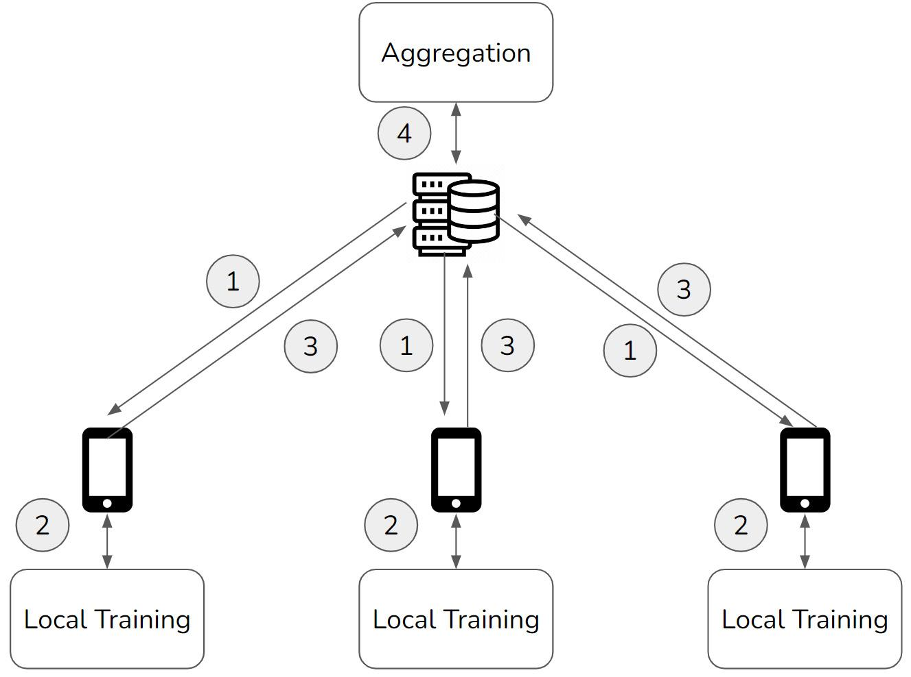{width="6.268055555555556in" height="4.667361111111111in"}
Figure 2.5 -- FL steps
-
The flow from steps 1 to 4 constitutes a single round of FL.
-
The next round begins as the user servers/devices receive the newly created aggregate model and start training on the local data.
-
Let's revisit Google's word recommendation for Gboard.
-
At some point in time, each phone stores a sufficient amount of its user's typing data.
-
The edge training process can create a local model from it, and the parameters will be sent to the central server.
-
After receiving parameters from a certain number of phones, the server aggregates them to create a global model and sends it to the phones.
-
This way, every phone connected to the server receives a model that reflects local data in all of the phones without ever transmitting the data from them.
-
In turn, each phone retrains the model when another batch of sufficient data is collected, sends the model to the server, and receives a new global model.
-
This cycle repeats itself over and over according to the configuration of the FL system, resulting in the continuous monitoring and updating of the global model.
-
Note that the user data never leaves the edge, only the model parameters; nor is there a need to put all the data in a central server to generate a global model, allowing for data minimalism.
-
Moreover, model bias can be mitigated with FL methods, as discussed.
-
That is why FL can be regarded as a solution to the three issues of big data, which were introduced earlier (Triple A).
Transfer learning
-
FL is closely related to an ML concept called transfer learning (TL).
-
TL allows us to use large deep learning models that have been trained by researchers using plentiful compute power and resources on very generalized datasets.
-
These models can be applied to more specific problems.
-
For example, we can take an object detection model trained to locate and name specific objects in images and retrain it on a limited dataset containing specific objects we are interested in, which were not included in the original data.
-
If you were to take the original data, add to it the data of those objects of our interest, and then train a model from scratch, a lot of computational time and power would be required.
-
With TL, you can quicken the process by leveraging a key fact about those existing large, generalized models.
-
There is a tendency for the intermediate layers of large DNNs to be excellent at extracting features, used by the following layers for the specific ML task.
-
We can maintain its learned ability to extract features by preserving the parameters in those layers.
-
In other words, parameters in certain layers of existing pre-trained models can be preserved and used to detect new objects -- we do not need to reinvent the wheel.
-
This technique is called parameter freezing.
-
In FL, model training often takes place in local devices/servers with limited computational power.
-
One example using the Gboard scenario is performing parameter freezing on a pre trained word embedding layer to allow training to focus on task-specific information, leveraging prior training of the embeddings to greatly reduce the trainable parameter count.
-
Taking this concept further, the intersection of FL and TL is called federated transfer learning (FTL).
-
FTL allows for the FL approach to be applied in cases where the local datasets differ in structure by performing FL on a shared subset of the model that can later be extended for specific tasks.
-
For example, a sentiment analysis model and a text summarization model could both share a sentence encoding component, which can be trained using FL and used for both tasks.
-
TL (and, by extension, FTL) are key concepts that allow for training efficiency and incremental improvement to be realized in FL.
Personalization
-
When edge devices are dealing with data that is not independent and identically distributed (IID), each device can customize the global model.
-
This is an idea called personalization, which can be considered as fine-tuning the global model with local data, or the strategic use of bias in the data.
-
For example, consider a shopping mall chain that operates in two areas with distinct local demographics (that is, the chain deals with non-IID data).
-
If the chain seeks tenant recommendations for both locations using FL, each of the locations can be better served with personalized models than a single global model, helping attract local customers. Since the personalized model is fine-tuned or biased with local data, we can expect that its performance on general data would not be as good as that of the global model.
-
On the other hand, we can also expect that the personalized model performs better than the global model on the local data for which the model is personalized.
-
There is a trade-off between user-specific performance and generalizability, and the power of an FL system comes from its flexibility to balance them according to the requirements.
Horizontal and Vertical FL
-
There are two types of FL: horizontal or homogeneous FL and vertical or heterogeneous FL.
-
Horizontal FL, also called sample-based FL, is applicable when all local datasets connected with the aggregator server have the same features but contain different samples.
-
The Gboard application discussed earlier is a good example of horizontal FL in the form of cross-device FL, that is, local training taking place in edge devices.
-
The datasets in all Android phones have identical formats but unique contents that reflect their user's typing history.
-
On the other hand, vertical FL, or feature-based FL, is a more advanced technology that allows parties holding different features for the same samples to cooperatively generate a global model.
-
For example, a bank and an e-commerce company might both store the data of residents in a city but their features would differ: the former knows the credit and expenditure patterns of the citizens, the latter their shopping behavior.
-
Both of them can benefit by sharing valuable insights without sharing customer data.
-
First, the bank and e-commerce company can identify their common users with a technique called private set intersection (PSI) while preserving data privacy using Rivest-Shamir-Adleman (RSA) encryption.
-
Next, each party trains a preliminary model with local data containing unique features.
-
Those models are then aggregated to construct a global model.
-
Usually, vertical FL involves multiple data silos, and when that is the case, it is also called cross-silo FL.
-
In China, federated Ai ecosystem (FATE) is well known for its seminal demonstration of vertical FL involving WeBank. If you are interested in further conceptual details of FL, there is a very illustrative and well-written report by Cloudera Fast Forward Labs, at https://federated.fastforwardlabs.com/.
-
The information on FL contained in this section should be sufficient to understand the following parts, which examine, in further depth, some of the key concepts introduced here.
-
The final section aims to cover some of the auxiliary concepts focused on the practical application of FL.
System Considerations for FL
-
This section mainly focuses on the multi-party computation aspects of FL, including theoretical security measures and full decentralization approaches.
-
The goal of this section is for you to be aware of some of the more practical considerations that should be taken into account for practical FL applications.
Security Considerations for FL
-
Despite the nascency of the technology, experimental usage of FL has emerged in a few sectors.
-
Specifically, anti-money laundering (AML) in the financial industry and drug discovery and diagnosis in the medical industry have seen promising results, as proofs of concepts in those fields have been successfully conducted by companies such as Consilient and Owkin.
-
In AML use cases, banks can cooperate with one another to identify fraudulent transactions efficiently without sharing their account data; and hospitals can keep their patient data to themselves while improving ML models for detecting health issues.
-
These solutions exploit the power of relatively simple horizontal cross-silo FL, as explained in the Understanding FL section, and its application is spreading to other areas.
-
For example, Edgify is a UK-based company contributing to the automation of cashiers at retail stores in collaboration with Intel and Hewlett Packard.
-
In Munich, Germany, another UK-based company, Fetch.ai, is developing a smart city infrastructure with their FL-based technology. It is clear that the practical application of FL is rapidly growing.
-
Although FL can circumvent the concern over data privacy thanks to its privacy-by-design (model parameters do not expose privacy) and data minimalist (data is not collected in the central server) approach, there are potential obstructions against its implementation; one such example is mistrust among the participants of an FL project.
-
Consider a situation where Bank A and Bank B agree to use FL for developing a collaborative AML solution.
-
They decide on the common model architecture so that each can train a local model with their own data and aggregate the results to create a global model to be used by both.
-
Naïve implementations of FL might allow for one bank to reconstruct the local model from the other bank, using their local model and the aggregate model.
-
From this, the bank might be able to extract key information on the data used to train the other bank's model.
-
As a result, there might be a dispute regarding which party should host the server to aggregate the local models.
-
A possible solution is having a third party host the server and take responsibility for model aggregation.
-
Yet, how would Bank A know that the third party is not colluding with Bank B, and vice versa?
-
Going further, the integration of an FL system into a security-focused domain leads to new concerns regarding the security and stability of each system component.
-
Known security issues tied to different FL system approaches might incur an additional potential weakness to adversarial attacks that outweighs the benefits of the approach.
-
There are several security measures to allow FL collaboration without forcing the participants to trust one another.
-
With a statistical method called differential privacy (DP), each participant can add random noise to their local model parameters to prevent the ability to glean information on the training data distribution or specific elements from the transmitted parameters.
-
By sampling the random noise from a symmetric distribution with zero mean and relatively low variance (for example, Gaussian, Laplace), the random differences added to the local models are expected to cancel out when aggregation is performed.
-
As a result, the global model is expected to be very similar to what would have been generated without DP.
-
However, there is a critical limitation to this approach; for the sum of the added random noise to converge to zero, a sufficient number of parties must participate in the coalition.
-
This might not be the case for projects involving only a few banks or hospitals, and using DP in such cases would harm the global model's integrity.
-
Some additional measures would be necessary, for example, each participant sending multiple copies of their local model to increase the number of models so that the noise will be offset.
-
Another possibility in certain fully-decentralized FL systems is secure multi-party computation (MPC).
-
MPC-based aggregation allows agents to communicate among themselves and compute the aggregate model without involving a trusted third-party server, maintaining model parameter privacy.
-
How could the participants secure the system from outside attacks?
-
Homomorphic encryption (HE), which preserves the effects of addition and multiplication on data across encryption, allows the local models to be aggregated into the global model in an encrypted form.
-
This precludes the exposure of model parameters to outsiders who do not possess the key for decryption.
-
Yet, HE's effectiveness in securing the communication between the participants comes with a prohibitively high computational cost: processing the operation on data with the HE algorithm can take hundreds of trillions of times longer than otherwise!
-
A solution to mitigate this challenge is the use of partial HE, which is compatible with only one of the additive or multiplicative operations across encryption; therefore it is computationally much lighter than the fully homomorphic counterpart.
-
Using this scheme, each participant in a coalition can encrypt and send their local model to the aggregator, which then sums up all local models and sends the aggregated model back to the participants, who, in turn, decrypt the model and divide its parameters by the number of participants to receive the global model.
-
Both HE and DP are essential technology for the practical application of FL.
-
Those interested in the implementation of FL in real-world scenarios can learn a great deal from Federated AI for Real-World Business Scenarios written by IBM Research Fellow Dinesh C. Verma.
Decentralized FL and Blockchain
-
The architecture of FL discussed so far is based on client-server networks, that is, edge devices exchanging models with a central aggregator server.
-
Due to the issues surrounding trust between the participants of FL coalitions discussed earlier; however, building a system with an aggregator as a separate and central entity can be problematic.
-
It can be difficult for the host of an aggregator to be impartial and unbiased toward their own data.
-
Also, having a central server inevitably leads to a single point of failure in the FL system, which results in low resilience.
-
Furthermore, if the aggregator is set up in a cloud server, the implementation of such an FL system would require a skilled DevOps engineer, who might be difficult to find and expensive to hire.
-
Given these concerns, Kiyoshi Nakayama co-authored an article about the first-ever experimentation of a fully decentralized FL system using blockchain technology ([http://www.kiyoshi-nakayama.com/publications/BAFFLE.pdf]{.underline}).
-
Leveraging smart contracts to coordinate model updates and aggregation, a private Ethereum network was constructed to perform FL in a serverless manner.
-
The results of the experiment showed that a peer-to-peer, decentralized FL can be much more efficient and scalable than an aggregator-based, centralized FL.
-
The superiority of decentralized architecture was confirmed in a more recent experiment conducted by Hewlett Packard and German research institutes who gave a unique name to decentralized FL with blockchain technology: swarm learning.
-
While research and development in the field of FL are shifting to a decentralized model, the rest of this book assumes centralized architecture with an aggregator server. There are two reasons for this design. First, blockchain is still a nascent technology that AI and ML researchers are not necessarily familiar with. Incorporating a peer-to-peer communication scheme can overcomplicate the subject matter. And second, the logic of FL itself is independent of the network architecture, and there is no problem with the centralized model to illustrate how FL works.
Summary
-
Here, we covered the two key developments that have resulted from the recent growth in accessible computational power at all levels.
-
First, we looked at the importance of models and how this has enabled ML to grow considerably in practical usage, with increases in computational power allowing stronger models that surpass manually created white-box systems to continuously be produced.
-
We called this the what of FL -- ML is what we are trying to perform using FL.
-
Then, we took a step back to look at how edge devices are reaching a stage where complex computations can be performed within reasonable timeframes for real-world applications, such as the text recommendation models on our phones.
-
We called this the where of FL -- the setting where we want to perform ML.
-
From the what and the where, we get the intersection of these two developments -- the usage of ML models directly on edge devices.
-
Remember that the standard central training approach for ML models greatly suffers from the need to centrally collect all of the data in the edge ML case, as this prevents applications requiring efficient communication or data privacy from being possible.
-
We showed that FL directly addresses this problem by performing all training at the edge to produce local models, at the same location as the requisite data stores. Aggregation algorithms take these local models and produce a global model. By iteratively switching between local training and aggregation,
-
FL allows for the creation of a model that has effectively been trained across all data stores without ever needing to centrally collect the data.
-
We concluded the part by stepping outside the theory behind effective aggregation, looking at system and architecture design considerations regarding aspects such as model privacy and full decentralization.
-
After reading, it should be clear that the current state of ML, edge computing, and fledgling growth in practical FL applications makes it clear that FL is poised for serious growth in the near future.
-
In the next part, we will examine the implementation of FL from a system-level perspective.
[Section 3: FL - The System Details_______]{.underline}
Federated Learning Systems
-
This section will provide an overview of the architecture, procedure flow, sequence of messages, and basics of model aggregation of the federated learning (FL) system.
-
As discussed earlier, the basics of the FL framework is quite easy to understand. However, the real implementation of the FL framework needs to come with a good understanding of both AI and distributed systems.
-
The content of this section is based on the most standard foundation of FL systems, which is used in hands-on exercises later.
-
First, we will introduce the building blocks of FL systems, such as an aggregator with an FL server, an agent with an FL client, a database server, and communication between these components.
-
The architecture introduced here is designed in a decoupled way so that further enhancement to the system will be relatively easier than with an FL system that contains everything on one machine.
-
Then, an explanation of the flow of the operation of FL from initialization to aggregation will follow.
-
Finally, we will examine the way an FL system is scaled with a horizontal design of decentralized FL setups.
This section covers the following topics:
-
FL system architecture
-
Understanding the FL system flow -- from initialization to continuous operation
-
Basics of model aggregation
-
Furthering scalability with horizontal design
The System Architecture
-
FL systems are distributed systems that are comprised of servers and distributed clients.
-
Here, we will define a representative architecture of an FL system with the following components: an aggregator with an FL server, an agent with an FL client, and a database:
-
Distributed agent (or agent): A distributed learning environment with an FL client such as a local edge device, mobile application, tablet, or any distributed cloud environment where ML models are trained in a distributed manner and sent to an aggregator. The agent can be connected to an FL server of the aggregator through the FL client-side communications module. The FL client-side codes contain a collection of libraries that can be integrated into the local ML application, which is designed and implemented by individual ML engineers and data scientists.
-
Database server (or database): A database and its server to store the data related to the aggregators, agents, and global and local ML models and their performance metrics. The database server handles the incoming queries from the aggregators and sends the necessary data back to the aggregators. Agents do not have to be connected to the database server directly for the simplicity of the FL system design.
 {width="6.268055555555556in"
height="4.414583333333334in"}
{width="6.268055555555556in"
height="4.414583333333334in"}
Figure 3.1 -- Overall architecture of an FL system
-
One advantage of the FL system's architecture is that users do not have to send private raw data to the server, especially that owned by a third party. Instead, they only have to send locally trained models to the aggregator.
-
The locally trained models can be in a variety of formats such as the weights of the entire ML models, the changes of weights (gradients), or even a subset of them.
-
Another advantage includes reducing the communication load because the users only have to exchange models that are usually much lighter than raw data.
The Cluster aggregators
-
A cluster aggregator consists of an FL server module, FL state manager module, and model aggregation module, as in Figure 3.1.
-
We just call a cluster aggregator with an FL server an aggregator.
-
While these modules are the foundation of the aggregator, advanced modules can be added to ensure further security and flexibility of the aggregation of ML models.
-
Some of the advanced modules are not implemented in the simple-fl GitHub repository provided with exercises because the main purpose of this effort is to understand the basic structure and system flow of the FL system.
-
In the aggregator system, the following modules related to the FL server, the state manager of FL, and model aggregation are the keys to implementing the aggregator-side functionalities.
- **Communication handler**: Serves as a module of the aggregator
that supports *communications with agents and the database*.
Usually, this module accepts polling messages from agents and
sends responses back to them. The types of messages they receive
include the registration of agents themselves with secure
credentials and authentication mechanisms, the initialization of
the ML model that serves as an *initial model* for the future
aggregation process, confirmation about whether or not agents
participate in a round, and local ML models that are retrained
at distributed agents such as mobile devices and local edge
machines. The communication handler can also query the database
server in order to access the system data and ML models in the
database, as well as push and store this data and those models
once the aggregator receives or creates new models. This module
can utilize HTTP, WebSocket, or any other communication
framework for its implementation.
- **System configuration handler**: Deals with the *registration
of agents* and tracking the connected agents and their statuses.
The aggregator needs to be aware of the connections and
registration statuses of the agents. If the agents are
registered with an established authentication mechanism, they
will accept the messages and process them accordingly.
Otherwise, this module will go through the authentication
process, such as validating the token sent from the agent, so
that next time this agent is connected to the FL server, the
system will recognize the agent properly.
- **Model synthesis routine**: Supports checking the collection
status of the local ML models and aggregating them once the
collection criteria are satisfied. Collection criteria include
the number of local models collected by the connected agents.
For example, aggregation can happen when 80% of the connected
agents send the trained local models to the aggregator. One of
the design patterns to do so is to periodically check the number
of ML models uploaded by the agents, which keep running while
the FL server is up and running. The model synthesis routine
will access the database or local buffer periodically to check
the status of the local model collection and aggregate those
models, to produce the global model that will be stored in the
database server and sent back to the agents.
-
FL state manager: A state manager keeps track of the state information of an aggregator and connected agents. It stores volatile information for an aggregator, such as local and global models delivered by agents, cluster models pulled from the database, FL round information, or agents connected to the aggregator. The buffered local models are used by the model aggregation module to generate a global model that is sent back to each active agent connected to the aggregator.
-
Model aggregation module: The model aggregation module is a collection of the model aggregation algorithms introduced in the Basics of model aggregation section here and in Model Aggregation, in further depth. The most typical aggregation algorithm is federated averaging, which averages the weights of the collected ML models, considering the number of samples that each model has used for its local training.
Distributed agents
- A distributed agent consists of an FL client module that includes the communication handler and client libraries as well as local ML applications connected to the FL system through the FL client libraries:
- **Communication handler**: Serves as a channel to communicate
with the aggregator that is assigned to the agent. The message
sent to the aggregator includes the registration payload of the
agent itself and an initial model that will be the basis of
aggregated models. The message also contains locally trained
models together with the performance data of those models. This
module supports both *push* and *polling* mechanisms and can
utilize HTTP or WebSocket frameworks for its implementation.
- **FL participation handler**: Deals with the agent participation
in the FL process and cycle by sending an aggregator a message
including the agent information itself to be registered in the
FL platform and initialize the FL process if needed. The
response message will set the agent up for the continuous and
ongoing FL process and often includes the most updated global
model for the agent to utilize and train locally.
- **Model exchange routine**: Supports a synchronizing
functionality that constantly checks whether a new global model
is available or not. If the new global model is available, this
module downloads the global model from the aggregator and the
global model replaces the local model if needed. This module
also checks the client state and sends the retrained model if
the local training process is done.
- **Client libraries**: Include administrative libraries and
general FL client libraries:
- The administrative libraries are used when registering the
initial model that will be used by other agents. Any
configuration changes for FL systems can be also requested
by administrative agents that have higher control
capabilities.
- General FL client libraries provide basic functionalities
such as starting FL client core threads, sending local
models to an aggregator, saving models in some specific
location on the local machine, manipulating the client
state, and downloading the global models. This book mainly
talks about this general type of library.
- Local ML engine and data pipelines: These parts are designed by individual ML engineers and scientists and can be independent of the FL client functionalities. This module has an ML model itself that can be put into play immediately by the user for potentially more accurate inference, a training and testing environment that can be plugged into the FL client libraries, and for the implementation of data pipelines. While the aforementioned module and libraries can be generalized and provided as application programming interfaces (APIs) or libraries for any ML applications, this module is unique depending on the requirements of AI applications to be developed.
The Database Components
-
A database server consists of a database query handler and a database, as storage.
-
The database server can reside on the server side, such as on the cloud, and is tied closely to aggregators, while the recommended design is to separate this database server from aggregator servers to decouple the functionalities to enhance the system's simplicity and resilience.
-
The functionality of the database query handler and sample database tables are as follows:
-
Database: Stores all the related information to FL processes. We list some potential entries for the database here:
-
Aggregator information: This aggregator-related information includes the ID of the aggregator itself, the IP address and various port numbers, system registered and updated times, and system status. In addition, this entry can include model aggregation-related information, such as the round of FL and its information and aggregation criteria.
-
Agent information: This agent-related information includes the ID of the agent itself, the IP address and various port numbers, system registered and updated times, and system status. This entry can also contain the opt-in/out status that is used for synchronous FL (explained in the Synchronous and asynchronous FL section Here) and a flag to record whether the agent has been a bad actor in the past (for example, involved in poisoning attacks, or very slow at returning results).
-
Base model information: Base model information is used for the registration of initial ML models whose architecture and information are used for the entire process of FL rounds.
-
Local models: The information of local models includes the model ID that is unique to individual ML models, generated time of the model, agent ID that uploaded the model, aggregator ID that received the model from the agent, and so on. Usually, the model ID is uniquely mapped to the location of the actual ML model file that can be stored in the database server or in some cloud storage services such as S3 buckets of Amazon Web Services, and so on.
-
Cluster global models: The information of the cluster global models is similar to what local models could record in the database including the model ID, aggregator ID, generated time of the model, and so on. Once the aggregated model is created by an aggregator, the database server will accept the global models and store them in the database server or any cloud storage services. Any global model can be requested by an aggregator.
-
Performance data: The performance of the local and global models can be tracked, as metadata attached to those models. This performance data will be used to ensure that the aggregated model performs well enough before it is actually deployed to the user ML application.
-
Note
-
In the code sample of the simple-fl repository, only the database tables related to the local models and cluster models are covered to simplify the explanation of the entire FL process.
-
Now that the basic architecture of the FL system has been introduced, next, we will talk about how to enhance the FL system's architecture if the computation resources are limited on the agent-side devices.
Low Computational Capacity Agent Devices and Intermediate servers
-
Sometimes, the computational capability of local user devices is limited -- ML training may be difficult in those devices, but inference or predictions can be made possible by just downloading the global model. In these cases, an FL platform may be able to set up an additional intermediate server layer, such as with smartphones, tablets, or edge servers.
-
For example, in a healthcare AI application, users manage their health information on their smart watches, which can be transferred to their smart tablets or synched with laptops. In those devices, it is easy to retrain ML models and integrate the distributed agent functionalities.
-
Therefore, the system architecture needs to be modified or redesigned depending on the applications into which the FL system is integrated, and the concept of intermediate servers can be applied using distributed agents to realize FL processes.
-
We do not have to modify the interactions and communication mechanisms between the aggregators and the intermediate servers. Just by implementing APIs between the user devices and the intermediate servers, FL will be possible in most use cases.
Figure 3.2 illustrates the interaction between the aggregators, intermediate servers, and user devices:
 {width="6.268055555555556in"
height="3.623611111111111in"}
{width="6.268055555555556in"
height="3.623611111111111in"}
Figure 3.2 -- An FL system with intermediate servers
- Now that we have learned about the basic architecture and components of an FL system, let us look into how an FL system operates in the following section.
FL System Process -- from initialization to continuous operation
-
Each distributed agent belongs to an aggregator that is managed by an FL server, where ML model aggregation is conducted to synthesize a global model that is going to be sent back to the agents.
-
An agent uses its local data to train an ML model and then uploads the trained model to the corresponding aggregator. The concept sounds straightforward, so we will look into a bit more detail to realize the entire flow of those processes.
-
We also define a cluster global model, which we simply call a cluster model or global model, which is an aggregated ML model of local models collected from distributed agents.
Note
-
In the next two sections, we will guide you on how to implement the procedure and sequence of messages discussed Here.
-
However, some of the system operation perspectives, such as an aggregator or agent system registration in the database, are not introduced in the code sample of the simple-fl repository in order to simplify the explanation of the entire FL process.
Database, Aggregator, and Agent initialization
-
The sequence of the initialization processes is quite simple. The initialization and registration processes need to happen in the order of database, aggregator, and agents.
-
The overall registration sequence of an aggregator and an agent with a database is depicted in Figure 3.3 as follows:
{width="6.268055555555556in" height="6.290972222222222in"}
Figure 3.3 -- The process of aggregator and agent registration in the database server
Here is the initialization and registration procedure of each component in the FL system:
-
Database server initialization: The first step of the operation of an FL system is to initiate the database server. There are some simple frameworks that are provided by multiple organizations that do not include databases or database servers. However, in order to maintain the process of federating the ML models, it is recommended that you use a database, even a lightweight one such as an SQLite database.
-
Aggregator initialization and registration: An aggregator should be set up and running before any agents start running and uploading the ML models. When the aggregator starts running and first gets connected to the database server, the registration process happens automatically by also checking whether the aggregator is safe to be connected. If it fails to go through the registration process, it receives the registration failure message sent back from the database. Also, in case the aggregator is trying to connect to the database again after losing the connection to the database, the database server always checks whether the aggregator has already been registered or not. If this is the case, the response from the database server includes the system information of the registered aggregator so that the aggregator can start from the point where it left off. The aggregator may need to publish an IP address and port number for agents to be connected if it uses HTTP or WebSocket.
-
Agent initialization and registration: Usually, if an agent knows the aggregator that the agent wants to connect to, the registration is similar to how an aggregator connects to a database server. The connection process should be straightforward enough to just send a participation message to that aggregator using an IP address, the port number of the aggregator (if we are using some frameworks such as HTTP or WebSocket), and an authentication token. In case the agent is trying to connect to the aggregator again after losing the connection to the aggregator, the database server always checks whether the agent already has been registered or not. If the agent is already registered, the response from the database server includes the system information of the registered agent so that the agent can start from the point where it was disconnected from the aggregator.
-
The key process after receiving the participation request is (i) checking whether the agent is trusted or not, or whether the agent is already registered or not, and (ii) checking whether the initial global model is already registered or not. If (i) is met, the registration process keeps going. If the (initial) global model is already registered, the agent will be able to receive the global model and start using that global model for the local training process on the agent side.
-
The agent participation and registration process at an aggregator side is depicted in Figure 3.4:
{width="6.268055555555556in" height="6.81875in"}
Figure 3.4 -- The registration process of an agent by an aggregator
- Now that we understand the initialization and registration process of the FL system components, let us move on to the basic configuration of the ongoing FL process, which is about uploading the initial ML model.
Initial model upload process by initial agent
-
The next step in running an FL process is to register the initial ML model whose architecture will be used in the entire and continuous process of FL by all the aggregators and agents.
-
The initial model can be distributed by the company that owns the ML application and FL servers.
-
They'll likely provide the initial base model as part of the aggregator configuration.
-
We call the initial ML model used as a reference for model aggregation a base model.
-
We also call the agent that uploads the initial base model an initial agent. The base model info could include the ML model itself as well as the time it was generated and the initial performance data.
-
That being said, the process of initializing the base model can be seen in Figure 3.5:
{width="6.268055555555556in" height="5.909722222222222in"}
Figure 3.5 -- Base model upload process for the initial agent
- Now, the FL process is ready to be conducted. Next, we will learn about the FL cycle, which is a very core part of the FL process.
Overall FL System Process Sequence
-
In this section, we will only give an example with a single agent and aggregator, but in real cases and operations, the agent environments are various and dispersed into distributed devices.
-
The following is the list of the processes for how the local models are uploaded, aggregated, stored, and sent back to agents as a global model:
-
The agents other than the initial agent will request the global model, which is an updated aggregated ML model, in order to deploy it to their own applications.
-
Once the agent gets the updated model from the aggregator and deploys it, the agent retrains the ML model locally with new data that is obtained afterward to reflect the freshness and timeliness of the data. An agent can also participate in multiple rounds with different data to absorb its local examples and tendencies. Again, this local data will not be shared with the aggregator and stays local to the distributed devices.
-
After retraining the local ML model (which, of course, has the same architecture as the global or base model of the FL), the agent calls an FL client API to send the model to the aggregator.
-
The aggregator receives the local ML model and pushes the model to the database. The aggregator keeps track of the number of collected local models and will keep accepting the local models as long as the federation round is open. The round can be closed with any defined criteria, such as the aggregator receiving enough ML models to be aggregated. When the criteria are met, the aggregator aggregates the local models and produces an updated global model that is ready to be sent back to the agent.
-
During that process, agents constantly poll the aggregator on whether the global model is ready or not, or in some cases, the aggregator may push the global model to the agents that are connected to the aggregator, depending on the communications system design and network constraints. Then, the updated model is sent back to the agent.
-
After receiving the updated global model, the agent deploys and retrains the global model locally whenever it is ready. The whole process described is repeated until the termination criteria are met for the FL to end. In some cases, there are no termination conditions to stop this FL cycle and retraining process so that the global model constantly keeps learning about the latest phenomena, current trends, or user-related tendencies. FL rounds can just be stopped manually in preparation for some evaluation before a rollout.
Figure 3.6 shows the overall process of how FL is continuously conducted between an agent, an aggregator, and a database typically:
{width="6.268055555555556in" height="6.572222222222222in"}
Figure 3.6 -- Overview of the continuous FL cycle
- Now that we understand the overall procedure of the FL process, we will look into the different round management approaches in the FL process next: synchronous FL and asynchronous FL.
Synchronous and asynchronous FL
-
When the model aggregation happens at the aggregator, there are multiple criteria related to how many local models it needs to collect from which agents.
-
In this section, we will briefly talk about the differences between synchronous and asynchronous FL, which have been discussed in a lot of literature, such as https://iqua.ece.toronto.edu/papers/ningxinsu-iwqos22.pdf, so please refer to it to learn about these concepts further.
Synchronous FL
-
Synchronous FL requires the aggregator to select the agents that need to send the local models for each round in order to proceed with the model aggregation.
-
This synchronous FL approach is simple to design and implement and suitable for FL applications that require a clear selection of agents.
-
However, if the number of agents becomes too large, the aggregator may have to wait for a long time to wrap up the current round, as the computational capability of the agents could vary and some of them may have problems uploading or fail to upload their local models.
-
Thus, some of the agents can become slow or totally dysfunctional when sending their models to the aggregator.
-
These slow agents are known as stragglers in distributed ML, which motivates us to use the asynchronous FL mode.
-
Asynchronous FL
-
Asynchronous FL does not require the aggregator to select the agents that have to upload their local models. Instead, it opens the door for any trusted agents to upload the model anytime.
-
Furthermore, it is fine to wrap up the federation round whenever the aggregator wants to generate the global model, with or without criteria such as the minimum number of local models that needs to be collected, or some predefined interval or deadline for which the aggregator needs to wait to receive the local models from the agents until the aggregation for that round happens.
-
This asynchronous FL approach gives the FL system much more flexibility for model aggregation for each FL round, but the design may be more complicated than the simple synchronous aggregation framework.
-
When managing the FL rounds, you need to consider the practicalities of running rounds, such as scheduling and dealing with delayed responses, the minimum levels of participation required, the details of example stores, using the downloaded or trained models for improved inference in the applications on the edge devices, and dealing with bad or slow agents.
-
We will look into the FL process and procedure flow next, focusing on the aggregator side.
FL cycle and process- The aggregator perspective
- An aggregator has two threads running to accept and cache the local models and aggregate the collected local ML models. In this section, we describe those procedures.
Accepting and caching local ML models
-
The aggregator side process of accepting and caching local ML models is depicted in Figure 3.7 and explained as follows:
-
The aggregator will wait for a local ML model to be uploaded by an agent. This method sounds like asynchronous FL. However, if the aggregator has already decided which agents to accept models from, it just needs to exclude the model uploads sent by undesired agents. Some other system or module may have already told the undesired agents not to participate in the round as well.
-
Once an ML model is received, the aggregator checks whether the model is uploaded by the trusted agents or not. Also, if the agent that uploads the local model is not listed in the agents that the FL operator wants to accept, the aggregator will discard the model. Furthermore, an aggregator needs to have a mechanism to only filter the valid models -- otherwise, there is a risk of poisoning the global model and messing up the entire FL process.
-
If the uploaded local ML model is valid, the aggregator will push the model to the database. If the database resides on a different server, the aggregator will package the model and send it to the database server.
-
While the uploaded models are stored in the database, they should be buffered in the memory of the state manager of the aggregator in an appropriate format, such as NumPy arrays.
-
This procedure keeps running until the termination conditions are satisfied or the operator of the FL system opts to stop the process. Figure 3.7 depicts the procedure of accepting and caching local ML models:
{width="6.268055555555556in" height="6.972916666666666in"}
Figure 3.7 -- Procedure for accepting and caching local ML models
- Once the local ML models are accepted and cached, the FL system moves on to the next procedure: aggregating the local models.
Aggregating local ML models
-
The aggregator-side procedure of aggregating local ML models depicted in Figure 3.8 is as follows:
-
The aggregator constantly checks whether the aggregation criteria are satisfied. The typical aggregation criteria are as follows:
-
The number of local models collected so far in this FL round. For example, if the number of agents is 10 nodes, after 8 nodes (meaning 80% nodes) report the locally trained models, the aggregator starts aggregating the models.
-
The combination of the number of collected models and the time that the FL round has spent. This can automate the aggregation process and prevent systems from getting stuck.
-
-
Once the aggregation criteria are met, the aggregator starts a model aggregation process. Usually, federated averaging is a very typical but powerful aggregation method. Further explanation of the model aggregation methods is in the Basics of model aggregation section of This section and in section 7, Model Aggregation. The aggregated model is defined as a global model in this FL round.
-
In a case where time for the FL round has expired and not enough agents that participated in the round have uploaded a model, the round can be abandoned or forced to conduct aggregation for the local models collected so far.
-
Once the model aggregation is complete, the aggregator pushes the aggregated global model to the database. If the database resides on a different server, the aggregator will package the global model and send it to the database server.
-
Then, the aggregator sends the global model to all the agents, or when the agents poll to check whether the global model is ready, the aggregator will notify the agent that the global model is ready and put it in the response message to the agents.
-
After the whole process of model aggregation, the aggregator updates the number of the FL round by just incrementing it.
-
Figure 3.8 shows the aggregator's process from checking the aggregation criteria to synthesizing the global model when enough models are collected:
{width="6.268055555555556in" height="8.41388888888889in"}
Figure 3.8 -- Model synthesis routine: aggregating local ML models
- Aggregating local models to generate the global model has been explained. Now, let us look into the agent-side FL cycle, including the retraining process of the local ML models.
Local Retraining Cycle - The agent-perspective
-
In the distributed agent, the following state transition happens and is repeated for the continuous operation of the FL cycle:
-
In the state of waiting_gm, the agent polls the aggregator to receive any updates related to the global model. Basically, a polling method is used to regularly query the updated global model. However, under some specific settings, an aggregator can push the updated global model to all agents.
-
gm_ready is the state after the global model is formed by the aggregator and downloaded by the agent. The model parameters are cached in the agent device. The agent replaces its local ML model with the downloaded global model. Before completely replacing the local model with the downloaded model, the agent can check whether the output of the global model is sufficiently performant for the local ML engine. If the performance is not what is expected, the user can keep using the old model locally until it receives the global model that has the desired performance.
-
Next, in the training state, the agent can locally train the model in order to maximize its performance. The trained model is saved in a local data storage where training examples are kept. The FL client libraries of the agent ascertain its readiness to manipulate the local model that can be protected with asynchronous function access.
-
After the local model is trained, the agent checks whether the new global model has been sent to the agent or not. If the global model has arrived, then the locally trained ML model is discarded and goes back to the gm_ready state.
-
After local training, the agent proceeds with the sending state to send the updated local model back to the aggregator, and then, the agent goes back to the waiting_gm state.
-
Figure 3.9 depicts the state transition of an agent to adapt and update the ML model:
{width="5.709722222222222in" height="7.125in"}
Figure 3.9 -- Agent-side state transition to adapt and update the ML model
- Next, we touch on a model interpretation based on deviation from the baseline outputs that are used for anomaly detection and preventing model degradation.
Model interpretation based on deviation from baseline outputs
-
We can also provide an interpretation framework by looking at the output of each local model. The following procedure can be considered to ensure the local model is always good to use and can be deployed in production:
-
Obtain the most recent ML output generated by an agent as well as a baseline output that can be a typical desired output prepared by users. The baseline output could include an average output based on the past windows or reference points defined by an operator, subject expert, or rule-based algorithm.
-
The deviation between the output of the local model and the baseline output is computed.
-
An anomaly or performance degradation can be detected by checking whether the deviation exceeds the operator-specified threshold. If an anomaly is detected, an alarm can be sent to an operator to indicate a fault or that the ML model is in an anomalous state.
-
Now that the process of the FL has been explained, let us look into the basics of model aggregation, which comprise the critical part of FL.
Model Aggregation - The Basics
-
Aggregation is a core concept within FL. In fact, the strategies employed to aggregate models are the key theoretical driver for the performance of FL systems.
-
The purpose of this section is to introduce the high-level concepts of aggregation within the context of an FL system -- the underlying theory and examples of advanced aggregation strategies will be discussed in greater depth later when we discuss Model Aggregation.
What does aggregation of models mean?
-
Let's revisit the aggregator-side cycle discussed in earlier, at the point in the process where the agents assigned to a certain aggregator have finished training locally and have transmitted these models back to this aggregator.
-
The goal of any aggregation strategy, or any way of aggregating these models together, is to produce new models that gradually increase in performance across all of the data collected by the constituent agents.
-
An important point to remember is that FL is, by definition, a restricted version of the distributed learning setting, in which the data collected locally by each agent cannot be directly accessed by other agents.
-
If this restriction were not in place, a model could be made to perform well trivially on all of the data by collecting the data from each agent and training on the joint dataset; thus, it makes sense to treat this centrally-trained model as the target model for an FL approach.
-
At a high level, we can consider this unrestricted distributed learning scenario as aggregation before model training (where in this case, aggregation refers to combining the data from each agent).
-
Because FL does not allow data to be accessed by other agents, we consider the scenario as aggregation after model training instead; in this context, aggregation refers to the combination of the intelligence captured by each of the trained models from their differing local datasets.
-
To summarize, the goal of an aggregation strategy is to combine models in a way that eventually leads to a generalized model whose performance approaches that of the respective centrally trained model.
FedAvg -- Federated averaging
- To make some of these ideas more concrete, let's take an initial look into one of the most well-known and straightforward aggregation strategies, known as Federated Averaging (FedAvg). The FedAvg algorithm is performed as follows: let {width="1.2670089676290464in" height="0.2487379702537183in"} be the parameters of the models from {width="0.20833333333333334in" height="0.20833333333333334in"} agents, each with a local dataset size of {width="1.1828608923884514in" height="0.2213538932633421in"}. Also, {width="0.20833333333333334in" height="0.20833333333333334in"} is the total dataset size defined as 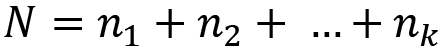{width="2.617024278215223in" height="0.29885826771653545in"}. Then, FedAvg returns the following ML model as the aggregated model:
{width="4.697647637795275in" height="0.54582239720035in"}
-
Essentially, we perform FedAvg over a set of models by taking the weighted average of the models, with weights proportional to the size of the dataset used to train the model.
-
As a result, the types of models to which FedAvg can be applied are models that can be represented as some set of parameter values.
-
Deep neural networks are currently the most notable of these kinds of models -- most of the results analyzing the performance of FedAvg work with deep learning models.
-
It is rather surprising that this relatively simple approach can lead to generalization in the resulting model.
-
We can visually examine what FedAvg looks like within a toy two-dimensional parameter space to observe the benefits of the aggregation strategy:
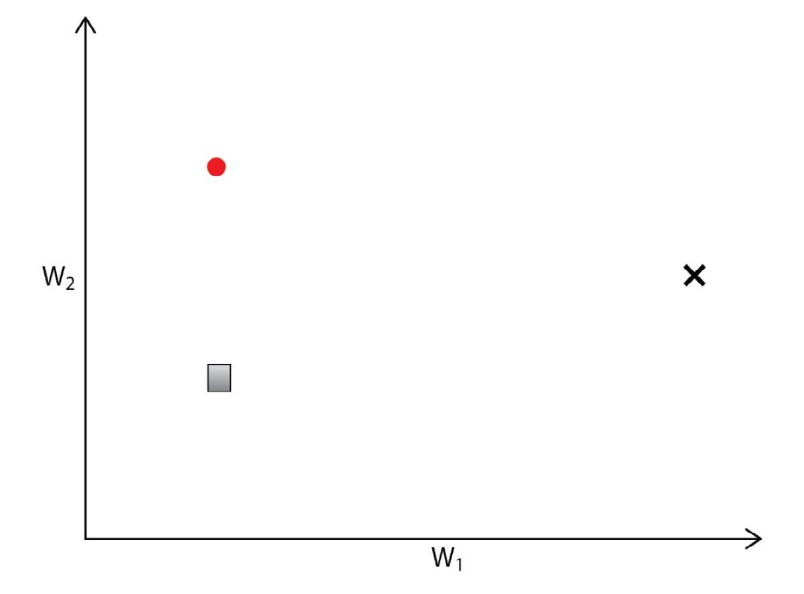{width="6.268055555555556in" height="4.636111111111111in"}
Figure 3.10 -- Two-dimensional parameter space with local models from two agents (the circle and square) and a target model (the black x)
-
Let's consider a case where we have two newly initialized models (the circle and square points) belonging to separate agents.
-
The space in the preceding figure represents the parameter space of the models, where each toy model is defined by two parameters.
-
As the models are trained, these points will move in the parameter space -- the goal is to approach a local optimum in the parameter space, generally corresponding to the aforementioned centrally trained model:
{width="6.268055555555556in" height="4.461111111111111in"}
Figure 3.11 -- Change in local model parameters without aggregation
-
Each model converges to separate dataset-specific optima (two x points from the circle and square) that do not generalize.
-
Because each agent only has access to a subset of the data, the local optima reached by training each model locally will differ from the true local optima; this difference depends on how similar the underlying data distributions are for each agent.
-
If the models are only trained locally, the resulting models will likely not generalize over all of the data:
{width="6.268055555555556in" height="4.631944444444445in"}
Figure 3.12 -- Adding aggregation moves the local model parameters to the average for both models at each step, leading to convergence at the target model
-
Applying FedAvg at each movement step allows us to create an aggregate model that eventually comes close to the true local optima in the parameter space.
-
This example displays the basic capability of FedAvg to produce generalized models.
-
However, working with real models (such as highly parameterized deep learning models) introduces additional complexity that is handled by FedAvg but not by simpler approaches.
-
For example, we might wonder why we don't simply fully train each local model and only average at the end; while this approach would work in this toy case, it has been observed that only averaging once with real models leads to poor performance across all of the data.
-
The FedAvg process allows for a more robust way to reach the generalized model within high-dimension parameter spaces.
-
This section only aims to give an overview of aggregation in FL; the Model Aggregation section, contains more detailed explanations and examples for aggregation in different scenarios.
-
We now understand the entire process of how the FL system works with basic model aggregation. In some applications, the FL system may have to support a huge number of agents to realize its scalability.
-
The following section will give you some idea about how to scale more smoothly, especially with a decentralized horizontal design.
Horizontal Design for Enhanced Scalability
-
In this section, we will look into how to further scalability when we need to support a large number of devices and users.
-
There are practical cases where control, ease of maintenance and deployment, and low communication overhead are provided by centralized FL. If the number of agents is not large, it makes more sense to stick to centralized FL than decentralized FL.
-
However, when the number of participating agents becomes quite large, it may be worth looking into horizontal scaling with a decentralized FL architecture.
-
The latest developments of auto-scaling frameworks these days, such as the Kubernetes framework (https://kubernetes.io/, can be a nice integration with the topic that is discussed in this section, although actual integration and implementation with Kubernetes is beyond the scope of this material.
Horizontal design with semi-global model
-
There will be some use cases where many aggregators are needed to cluster groups of agents and create a global model on top of those many aggregators.
-
Google uses a centralized approach for this, as in the paper Towards Federated Learning at Scale, while setting up a centralized node for managing multiple aggregators may have some resilience issues.
-
The idea is simple: periodically aggregate all the cluster models at some central master node.
-
On the other hand, we can realize the decentralized way of aggregating cluster models created by multiple aggregators. The architecture for that is based on two crucial ideas:
- Semi-global model synthesis to aggregate cluster models generated by other aggregators
-
The cluster aggregators can also use a database to periodically collect other cluster models to generate the semi-global models.
-
This framework allows for the absorption of training results from diverse sets of users dispersed across many aggregators by synthesizing the most updated global models without a master node concept.
-
Based on this decentralized architecture, the robustness of the entire FL system can be enhanced, as the semi-global model can be independently computed at each cluster aggregator.
-
The FL system can be scaled further, as each cluster aggregator is responsible for creating its own semi-global model by itself -- not via the master node of those aggregators -- and therefore, decentralized semi-global model formation comes with resiliency and mobility.
-
We can even decouple the database that stores the uploaded local models, cluster global models, and semi-global models.
-
By introducing a distributed database into the FL system, the entire system could be made more scalable, resilient, and secure together with some failover mechanism.
-
For example, each cluster aggregator stores the cluster model in a distributed database.
-
The cluster aggregators can retrieve cluster models of other aggregators by pulling the models periodically from the databases. At each cluster aggregator, a semi-global ML model is generated by synthesizing the pulled models.
Figure 3.13 illustrates the overall architecture of the decentralized horizontal design of a multi-aggregator FL system:
{width="6.268055555555556in" height="2.0625in"}
Figure 3.13 -- Architecture of a decentralized FL system with multiple aggregators (horizontal design)
- Now that we have discussed how to enhance the FL system with a horizontal design using the semi-global model concept, next, we will look at distributed database frameworks to further ensure scalability and resiliency.
Distributed database
-
Furthermore, the accountability of the model updates can be provided by storing historical model data in a data-driven distributed database.
-
The InterPlanetary File System (IPFS) and Blockchain are well-known distributed databases that ensure the accountability of global model updates.
-
After a cluster aggregator generates a semi-global model based on other cluster models, the semi-global model is stored in a distributed database.
-
The distributed database manages the information of those models with a unique identifier.
-
To maintain all the models consistently, including local, cluster, and semi-global models, each ML model is assigned a globally unique identifier, such as a hash value, which could be realized using the concept of a Chord Distributed Hash Table (Chord DHT).
-
The Chord DHT is a scalable peer-to-peer lookup protocol for internet applications.
-
The cluster aggregator can store metadata on the cluster models, such as timestamps and hash identifiers.
-
This gives us further accountability for model synthesis by ensuring the cluster models haven\'t been altered.
-
It is also possible to identify a set of aggregators that are sending harmful cluster models to destroy the semi-global models once the malicious models are detectable.
-
These models can be filtered by analyzing the patterns of the weights of the cluster model or deviation from the other cluster models when the difference is too big to rely on.
-
The nature of the distributed database is to store all the volatile state information of the distributed FL system.
-
The FL system can restore from the distributed database in the case of failure.
-
The cluster aggregators also exchange their cluster models based on a certain interval defined by the system operator.
-
Therefore, the mapping table between cluster models and aggregators needs to be logged in the database together with meta-information on the local, cluster, and semi-global models, such as the generation time of those models and the size of training samples.
Asynchronous agent participation in a multiple-aggregator scenario
-
Distributed agents can broadcast participation messages to connectable aggregators when they want to join their FL process.
-
The participation messages can contain the unique ID of the agent. One of the cluster aggregators then returns a cluster aggregator ID, potentially the value generated based on a common hash function, to which the agent should belong.
-
Figure 3.14 depicts how the agent is assigned to a certain cluster aggregator using a hash function:
{width="6.268055555555556in" height="7.308333333333334in"}
Figure 3.14 -- The sequence of an agent joining one of the cluster aggregators in an FL system
- In the following section, we will look into how the semi-global model is generated based on aggregating the multiple cluster global models.
Semi-global model synthesis
-
After the agent is assigned to a specific cluster aggregator, the agent starts to participate in the FL process.
-
It requests a base ML model if it is registered -- otherwise, it needs to upload the base model to start local training.
-
The procedure of uploading local models and generating cluster and semi-global models will continue until the agent or aggregator is disconnected from the system.
-
The sequence of the local and cluster model upload process, aggregation process, and semi-global model synthesis and pulling is illustrated in Figure 3.15:
{width="6.268055555555556in" height="3.134027777777778in"}
Figure 3.15 -- The sequence of the semi-global model synthesis processes from uploading local models to pulling semi-global models
-
Let's look at semi-global model synthesis using the flowchart between the agent, aggregator, and distributed database.
-
The aggregator receives a local model from an agent. When receiving the local model, the model filtering process will decide whether to accept the uploaded model or not.
-
This framework can be implemented using many different methods, such as a basic scheme of checking the difference between the weights of the global and local models. If the model is not valid, just discard the local model.
-
Then, a cluster model is created by aggregating all the accepted local models.
-
The aggregator stores the cluster model in a database, as well as simultaneously retrieving the cluster models generated by other cluster aggregators.
-
A semi-global model is then synthesized from those cluster models and will be used in the agents that are assigned to the cluster aggregator.
-
Figure 3.16 shows how the cluster aggregator proceeds with cluster and semi-global model synthesis using a distributed database:
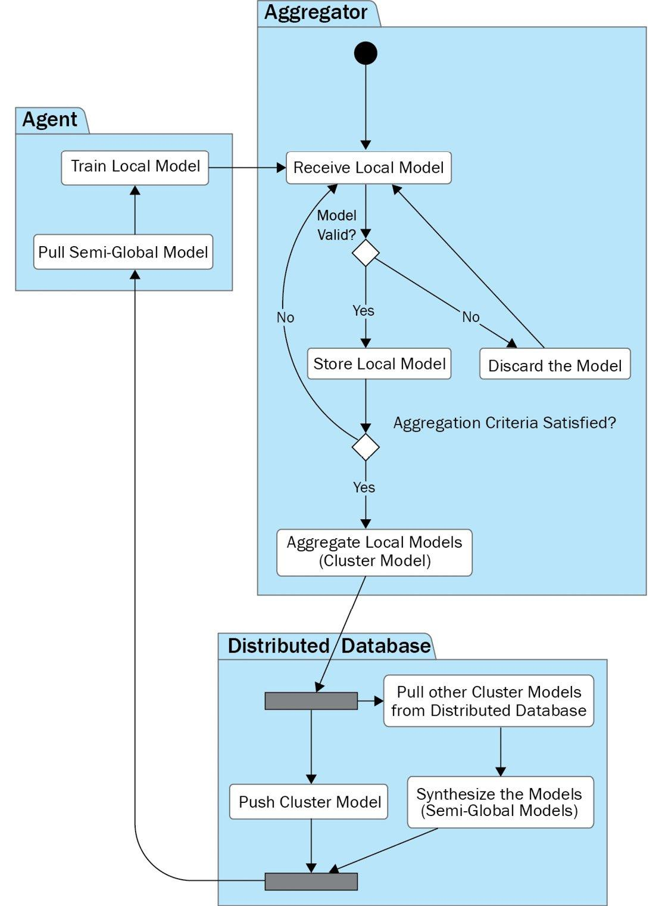{width="6.268055555555556in" height="8.567361111111111in"}
Figure 3.16 -- The procedure and flow of semi-global model synthesis
-
An aggregator does not need to retrieve all the cluster models generated at each round to create a semi-global model. To synthesize a semi-global model, the global model can eventually converge based on the subset of models randomly selected by each aggregator.
-
Using this approach, the robustness and independence of aggregators will be enhanced by compromising on the conditions to create the global model at every update.
-
This framework can also resolve the bottlenecks in terms of computation and communication typical to centralized FL systems.
Summary
-
Here, we discussed the potential architecture, procedure flow, and message sequences within an FL system.
-
The typical FL system architecture consists of an aggregator, agents, and a database server.
-
These three components are constantly communicating with each other to exchange system information and ML models to achieve model aggregation.
-
The key to implementing a good FL system is decoupling the critical components and carefully designing the interfaces between them.
-
We focused on the aspect of the simplicity of its design so that further enhancement can be achieved by just adding additional components to the systems. Horizontal decentralized design can also help implement a scalable FL system.
-
In the following section, we will discuss the implementation details of achieving FL on the server side.
-
As some critical aspects of the functionalities have been introduced Here, you will be able to implement the basic system and smoothly run the simulation with some ML applications.
[Section 4: FL Server - Python Implementation]{.underline}
-
The server-side implementation of a federated learning (FL) system is critical for realizing authentic FL-enabled applications.
-
We have discussed the basic system architecture and flow in the previous section. Here, more hands-on implementation will be discussed so that you can create a simple server and aggregator of the FL system that various machine learning (ML) applications can be connected to and tested on.
-
This section describes an actual implementation aspect of FL server-side components discussed in section 3.
-
Based on the understanding of how the entire process of the FL system works, you will be able to go one step further to make it happen with example code provided here and on GitHub.
-
Once you understand the basic implementation principles using the example code, it is a fun aspect to be able enhance the FL server functionalities based on your own design.
-
Here, we're going to cover the following topics:
-
Implementing FL server-side functionalities
-
Maintaining models for aggregation with the state manager
-
Aggregating local models
-
Running the FL server
-
Implementing and running the database server
-
Potential enhancements to the FL server
Technical requirements
- All the code files introduced Here can be found on GitHub here: [https://github.com/keshavaspanda/simple-fl]{.underline}
Main software components of the aggregator and database
-
The architecture of an aggregator with the FL server was introduced in the previous section. Here, we will introduce the code that realizes the basic functionalities of an FL system.
-
The aggregator and database-side Python-based software components are listed in the aggregator directory of fl_main, as well as lib/util and pseudodb folders, as in Figure 4.1:
{width="3.407120516185477in" height="3.9518897637795276in"}
Figure 4.1 -- Python software components for the aggregator as well as internal libraries and pseudo database
- The following is a brief description of the Python code files in the aggregator.
The Aggregator-side code
-
In this section, we will touch on the main Python files of the aggregator-side related to the FL server thread, FL state manager, and model aggregation itself.
-
These aggregator-side code files are found in the aggregator folder. The code in the repo only captures the model aggregation perspective, not the entire engineering aspects of creating a thorough FL platform.
FL server code (server_th.py)
-
This is the main code that realizes the whole basic flow of the FL process from the communication processes between an aggregator itself, agents, and a database to coordinating agent participation and the aggregation of the ML models.
-
It also initializes the global cluster model sent from the first connected agent. It manages receiving local models and the cluster model synthesis routine in which the cluster global model is formed after collecting enough local models.
FL state manager (state_manager.py)
-
The state manager buffers the local model and cluster model data that is needed for aggregation processes.
-
The buffers will be filled out when the aggregator receives local models from the agents and cleared when proceeding to the next round of the FL process.
-
The checking function of the aggregation criteria is also defined in this file.
Aggregation code (aggregation.py)
-
The aggregation Python code will list the basic algorithms for aggregating the model.
-
In the code example used here Here, we will only introduce the averaging method called federated averaging (FedAvg), which averages the weights of the collected local models considering local dataset sizes to generate a cluster global model.
lib/util codes
- The Python files for the internal libraries (communication_handler.py, data_struc.py, helpers.py, messengers.py, and states.py) will be explained in the Appendix, Exploring Internal Libraries.
Database-side code
-
Database-side code consists of the pseudo database and the SQLite database Python code files that can be found in the pseudodb folder.
-
The pseudo database code is hosting a server to receive messages from the aggregator and parse them to process as the ML model data that can be utilized for the FL process.
Pseudo database code (pseudo_db.py)
- The function of pseudo database Python code is to accept the messages related to the local and global cluster models from the aggregator and push the information to the database. It also saves the ML model binary files in the local file system.
SQLite database code (sqlite_db.py)
-
The SQLite database Python code creates an actual SQLite database at the specified path. It also has the function to insert data entries related to the local and global cluster models into the database.
-
Now that the aggregator and database-side software components are defined, let\'s move on to the configuration of the aggregator.
Configuring the aggregator
- The following code is an example of the aggregator-side configuration parameters defined in the config_aggregator.json file, which can be found in the setups folder:
{
\"aggr_ip\": \"localhost\",
\"db_ip\": \"localhost\",
\"reg_socket\": \"8765\",
\"exch_socket\": \"7890\",
\"recv_socket\": \"4321\",
\"db_socket\": \"9017\",
\"round_interval\": 5,
\"aggregation_threshold\": 1.0,
\"polling\": 1
}
CopyExplain
-
The parameters include the aggregator's IP (the FL server's IP), the database server's IP, and the various port numbers of the database and agents.
-
The round interval is the time of the interval at which the criteria of aggregation are checked and the aggregation threshold defines the percentage of collected local ML models needed to start the aggregation process. The polling flag is related to whether to utilize the polling method for communications between the aggregator and agents or not.
-
Now that we have covered the concept of the configuration file for the aggregator side, let's move on to how the code is designed and implemented.
FL server-side functions
-
In this section, we will explain how you can implement the very first version of an aggregator with an FL server system using the actual code examples, which are in server_th.py in the aggregator directory.
-
This way, you will understand the core functionalities of the FL server system and how they are implemented so that you can further enhance a lot more functionalities on your own.
-
Therefore, we will only cover the important and core functionalities that are critical to conducting a simple FL process. The potential enhancements will be listed in the later section of This section, Potential enhancements to the FL server.
-
server_th.py handles all the aspects of basic functionalities related to the FL server side, so let's look into that in the following section.
FL Server Library Imports
-
The FL server-side code starts with importing the necessary libraries. In particular, lib.util handles the basic supporting functionalities to make the implementation of FL easy. The details of the code can be found in the GitHub repository.
-
The server code imports StateManager and Aggregator for the FL processes. The code about the state manager and aggregation will be discussed in later sections Here about Maintaining models for aggregation with the state manager and Aggregating local models.
-
Here is the code for importing the necessary libraries:
import asyncio, logging, time, numpy as np
from typing import List, Dict, Any
from fl_main.lib.util.communication_handler import init_fl_server, send, send_websocket, receive
from fl_main.lib.util.data_struc import convert_LDict_to_Dict
from fl_main.lib.util.helpers import read_config, set_config_file
from fl_main.lib.util.messengers import generate_db_push_message, generate_ack_message, generate_cluster_model_dist_message, generate_agent_participation_confirmation_message
from fl_main.lib.util.states import ParticipateMSGLocation, ModelUpMSGLocation, PollingMSGLocation, ModelType, AgentMsgType
from .state_manager import StateManager
from .aggregation import Aggregator
CopyExplain
- After we import the necessary libraries, let us move on to designing an FL Server class.
Defining the FL Server class
- In practice, it is wise to define the Server class, using which you can create an instance of the FL server that has the functionalities discussed in earlier, as follows:
class Server:
\"\"\"
FL Server class defining the functionalities of
agent registration, global model synthesis, and
handling mechanisms of messages by agents.
\"\"\"
CopyExplain
-
Again, the server class primarily provides the functionalities of agent registration and global model synthesis and handles the mechanisms of uploaded local models and polling messages sent from agents. It also serves as the interface between the aggregator and database and between the aggregator and agents.
-
The FL server class functionality is now clear -- next is initializing and configuring the server.
Initializing the FL server
- The following code inside the __init__ constructor is an example of the initialization process of the Server instance:
def __init__(self):
config_file = set_config_file(\"aggregator\")
self.config = read_config(config_file)
self.sm = StateManager()
self.agg = Aggregator(self.sm)
self.aggr_ip = self.config[\'aggr_ip\']
self.reg_socket = self.config[\'reg_socket\']
self.recv_socket = self.config[\'recv_socket\']
self.exch_socket = self.config[\'exch_socket\']
self.db_ip = self.config[\'db_ip\']
self.db_socket = self.config[\'db_socket\']
self.round_interval = self.config[\'round_interval\']
self.is_polling = bool(self.config[\'polling\'])
self.sm.agg_threshold =
self.config[\'aggregation_threshold\']
CopyExplain
-
Then, self.config stores the information from the config_aggregator.json file discussed in the preceding code block.
-
self.sm and self.agg have instances of the state manager class and aggregator class discussed as follows, respectively.
-
self.aggr_ip reads an IP address from the aggregator's configuration file.
-
Then, reg_socket and recv_socket will be set up, where reg_socket is used for agents to register themselves together with an aggregator IP address stored as self.aggr_ip, and recv_socket is used for receiving local models from agents, together with an aggregator IP address stored as self.aggr_ip. Both reg_socket and recv_socket in this example code can be read from the aggregator's configuration file.
-
The exch_socket is the port number used to send the global model back to the agent together with the agent IP address, which is initialized with the configuration parameter in the initialization process.
-
The information to get connected to the database server will then be configured, where dp_ip and db_socket will be the IP address and the port number of the database server, respectively, all read from the config_aggregator.json file.
-
round_interval is an interval time to check whether the aggregation criteria for starting the model aggregation process are met or not.
-
The is_polling flag is related to whether to use the polling method from the agents or not. The polling flag must be the same as the one used in the agent-side configuration file.
-
agg_threshold is also the percentage over the number of collected local models that is used in the ready_for_local_aggregation function where if the percentage of the collected models is equal to or more than agg_threshold, the FL server starts the aggregation process of the local models.
-
Both self.round_interval and self.agg_threshold are read from the configuration file in this example code too.
-
Now that the configuration has been set up, we will talk about how to register agents that are trying to participate in the FL process.
Agent Registration
-
In this section, the simplified and asynchronous register function is described to receive the participation message specifying the model structures and return socket information for future model exchanges. It also sends the welcome message back to the agent as a response.
-
The registration process of agents is described in the following example code:
async def register(self, websocket: str, path):
msg = await receive(websocket)
es = self._get_exch_socket(msg)
agent_nm = msg[int(ParticipateMSGLocation.agent_name)]
agent_id = msg[int(ParticipateMSGLocation.agent_id)]
ip = msg[int(ParticipateMSGLocation.agent_ip)]
id, es = self.sm.add_agent(agent_nm, agent_id, ip, es)
if self.sm.round == 0:
await self._initialize_fl(msg)
await self._send_updated_global_model( \
websocket, id, es)
CopyExplain
-
In this example code, the received message from an agent, defined here as msg, is decoded by the receive function imported from the communication_handler code.
-
In particular, the self.sm.add_agent(agent_name, agent_id, addr, es) function takes the agent name, agent ID, agent IP address, and the exch_socket number included in the msg message in order to accept the messages from this agent, even if the agent is temporarily disconnected and then connected again.
-
After that, the registration function checks whether it should move on to the process of initial models or not, depending on the FL round that is tracked with self.sm.round. If the FL process is not happening yet, that is, if self.sm.round is 0, it calls the _initialize_fl(msg) function in order to initialize the FL process.
-
Then, the FL server sends the updated global model back to the agent by calling the _send_updated_global_model(websocket, id, es) function. The function takes the WebSocket, agent ID, and exch_socket as parameters and creates a reply message to the agent to notify it whether the participation message has been accepted or not.
-
The registration process of agents with the FL server is simplified in this example code here. In a production environment, all the system information from the agent will be pushed to the database so that an agent that loses the connection to the FL server can be recovered anytime by reconnecting to the FL server.
-
Usually, if the FL server is installed in the cloud and agents are connected to the FL server from their local environment, this push-back mechanism from the aggregator to agents will not work because of security settings such as firewalls.
-
We do not discuss the topic of security issues in detail, so you are encouraged to use the polling method implemented in the simple-fl code to communicate between the cloud-based aggregator and local agents.
Getting socket information to push the global model back to agents
- The following function called _get_exch_socket takes a participation message from the agent and decides which port to use to reach out to the agent depending on the simulation flag in the message:
def _get_exch_socket(self, msg):
if msg[int(ParticipateMSGLocation.sim_flag)]:
es = msg[int(ParticipateMSGLocation.exch_socket)]
else:
es = self.exch_socket
return es
CopyExplain
-
We support a simulation run in this implementation exercise by which you can run all the FL system components of a database, aggregator, and multiple agents in one machine.
-
Initializing the FL process if necessary
-
The asynchronous _initialize_fl function is for initializing an FL process that is only called when the round of FL is 0. The following is the code to do so:
async def _initialize_fl(self, msg):
agent_id = msg[int(ParticipateMSGLocation.agent_id)]
model_id = msg[int(ParticipateMSGLocation.model_id)]
gene_time = msg[int(ParticipateMSGLocation.gene_time)]
lmodels = msg[int(ParticipateMSGLocation.lmodels)]
perf_val = msg[int(ParticipateMSGLocation.meta_data)]
init_flag = \
bool(msg[int(ParticipateMSGLocation.init_flag)])
self.sm.initialize_model_info(lmodels, init_flag)
await self._push_local_models( \
agent_id, model_id, lmodels, gene_time, perf_val)
self.sm.increment_round()
CopyExplain
-
After extracting the agent ID (agent_id), the model ID (model_id), local models from an agent (lmodels), the generated time of the model (gene_time), the performance data (perf_val), and the value of init_flag from the received message, the initialize_model_info function of the state manager code is called, which is explained in a later section of This section.
-
This function then pushes the local model to the database by calling the _push_local_models function, which is also described in this section. You can refer to the Functions to push the local and global models to the database section.
-
After that, the round is incremented to proceed to the first round in FL.
Confirming agent participation with an updated global model
- After initializing the (cluster) global model, the global models need to be sent to the agent connected to the aggregator through this registration process. The asynchronous _send_updated_global_model function as follows handles the process of sending the global models to the agent by taking the WebSocket information, agent ID, and the port to use to reach out to the agent as parameters. The following code block describes the procedure:
async def _send_updated_global_model( \
self, websocket, agent_id, exch_socket):
model_id = self.sm.cluster_model_ids[-1]
cluster_models = \
convert_LDict_to_Dict(self.sm.cluster_models)
reply = generate_agent_participation_confirm_message(
self.sm.id, model_id, cluster_models, self.sm.round,
agent_id, exch_socket, self.recv_socket)
await send_websocket(reply, websocket)
CopyExplain
-
If the FL process has already started, that is, the self.sm.round is more than 0 already, we get the cluster models from their buffer and convert them into a dictionary format with the convert_LDict_to_Dict library function.
-
Then, the reply message is packaged using the generate_ agent_participation_confirm_message function and sent to the agent that just connected or reconnected to the aggregator by calling the send_websocket(reply, websocket) function. Please also refer to the Functions to send the global models to the agents section.
-
Now that we understand the agents' registration process, let's move on to the implementation of handling the local ML models and polling messages.
The server for handling messages from local agents
- The asynchronous receive_msg_from_agent process at the FL server is constantly running to receive local model updates and to push them to the database and the memory buffer temporally saving local models. It also responds to the polling messages from the local agents. The following code explains this functionality:
async def receive_msg_from_agent(self, websocket, path):
msg = await receive(websocket)
if msg[int(ModelUpMSGLocation.msg_type)] == \
AgentMsgType.update:
await self._process_lmodel_upload(msg)
elif msg[int(PollingMSGLocation.msg_type)] == \
AgentMsgType.polling:
await self._process_polling(msg, websocket)
CopyExplain
- We will then look into the two functions called by the receive_msg_from_agent function as shown in the preceding code blocks, which are the _process_lmodel_upload and _process_polling functions.
Processing a model upload by local agents
- The asynchronous _process_lmodel_upload function deals with the AgentMsgType.update message. The following code block is about the function related to receiving the local ML models and putting them into the buffer in the state manager:
async def _process_lmodel_upload(self, msg):
lmodels = msg[int(ModelUpMSGLocation.lmodels)]
agent_id = msg[int(ModelUpMSGLocation.agent_id)]
model_id = msg[int(ModelUpMSGLocation.model_id)]
gene_time = msg[int(ModelUpMSGLocation.gene_time)]
perf_val = msg[int(ModelUpMSGLocation.meta_data)]
await self._push_local_models( \
agent_id, model_id, lmodels, gene_time, perf_val)
self.sm.buffer_local_models( \
lmodels, participate=False, meta_data=perf_val)
CopyExplain
-
First, it extracts the agent ID (agent_id), the model ID (model_id), local models from an agent (lmodels), the generated time of the model (gene_time), and the performance data (perf_val) from the received message, and then calls the _push_local_models function to push the local models to the database.
-
The buffer_local_models function is then called to save the local models (lmodels) in the memory buffer. The buffer_local_models function is described in the Maintaining models for aggregation with the state manager section.
Processing polling by agents
- The following asynchronous _process_polling function deals with the AgentMsgType.polling message:
async def _process_polling(self, msg, websocket):
if self.sm.round > \
int(msg[int(PollingMSGLocation.round)]):
model_id = self.sm.cluster_model_ids[-1]
cluster_models = \
convert_LDict_to_Dict(self.sm.cluster_models)
msg = generate_cluster_model_dist_message( \
self.sm.id, model_id, self.sm.round, \
cluster_models)
await send_websocket(msg, websocket)
else:
msg = generate_ack_message()
await send_websocket(msg, websocket)
CopyExplain
-
If the FL round (self.sm.round) is greater than the local FL round included in the received message that is maintained by the local agent itself, it means that the model aggregation is done during the period between the time when the agent polled to the aggregator last time and now.
-
In this case, cluster_models that are converted into a dictionary format are packaged into a response message by generate_cluster_model_dist_message and sent back to the agent via the send_websocket function.
-
Otherwise, the aggregator just returns the ACK message to the agent, generated by the generate_ack_message function.
-
Now we are ready to aggregate the local models received from the agents, so let us look into the model aggregation routine.
The global model synthesis routine
-
The global model synthesis routine process designed in async def model_synthesis_routine(self) in the FL server periodically checks the number of stored models and executes global model synthesis if there are enough local models collected to meet the aggregation threshold.
-
The following code describes the model synthesis routine process that periodically checks the aggregation criteria and executes model synthesis:
async def model_synthesis_routine(self):
while True:
await asyncio.sleep(self.round_interval)
if self.sm.ready_for_local_aggregation():
self.agg.aggregate_local_models()
await self._push_cluster_models()
if self.is_polling == False:
await self._send_cluster_models_to_all()
self.sm.increment_round()
CopyExplain
-
This process is asynchronous, running with a while loop.
-
In particular, once the criteria set by ready_for_local_aggregation (explained in the Maintaining models for aggregation with the state manager section) are met, the aggregate_local_models function imported from the aggregator.py file is called, where this function averages the weights of the collected local models based on FedAvg. Further explanation of the aggregate_local_models function can be found in the Aggregating local models section.
-
Then, await self._push_cluster_models() is called to push the aggregated cluster global model to the database.
-
await self._send_cluster_models_to_all() is for sending the updated global model to all the agents connected to the aggregator if the polling method is not used.
-
Last but not least, the FL round is incremented by self.sm.increment_round().
-
Once the cluster global model is generated, the models need to be sent to the connected agents with the functions described in the following section.
Functions to send the global models to the agents
- The functionality of sending global models to the connected agents is dealt with by the _send_cluster_models_to_all function. This is an asynchronous function to send out cluster global models to all agents under this aggregator as follows:
async def _send_cluster_models_to_all(self):
model_id = self.sm.cluster_model_ids[-1]
cluster_models = \
convert_LDict_to_Dict(self.sm.cluster_models)
msg = generate_cluster_model_dist_message( \
self.sm.id, model_id, self.sm.round, \
cluster_models)
for agent in self.sm.agent_set:
await send(msg, agent[\'agent_ip\'], agent[\'socket\'])
CopyExplain
-
After getting the cluster models' information, it creates the message including the cluster models, round, model ID, and aggregator ID information using the generate_cluster_model_dist_message function and calls the send function from the communication_handler libraries to send the global models to all the agents in the agent_set registered through the agent participation process.
-
Sending the cluster global models to the connected agents has now been explained. Next, we explain how to push the local and cluster models to the database.
Functions to push the local and global models to the database
- The _push_local_models and _push_cluster_models functions are both called internally to push and send the local models and cluster global models to the database.
Pushing local models to the database
- Here is the _push_local_models function for pushing a given set of local models to the database:
async def _push_local_models(self, agent_id: str, \
model_id: str, local_models: Dict[str, np.array], \
gene_time: float, performance: Dict[str, float]) \
-> List[Any]:
return await self._push_models(
agent_id, ModelType.local, local_models, \
model_id, gene_time, performance)
CopyExplain
-
The _push_local_models function takes parameters such as the agent ID, local models, the model ID, the generated time of the model, and the performance data, and returns a response message if there is one.
-
Pushing cluster models to the database
-
The following _push_cluster_models function is for pushing the cluster global models to the database:
async def _push_cluster_models(self) -> List[Any]:
model_id = self.sm.cluster_model_ids[-1]
models = convert_LDict_to_Dict(self.sm.cluster_models)
meta_dict = dict({ \
\"num_samples\" : self.sm.own_cluster_num_samples})
return await self._push_models( \
self.sm.id, ModelType.cluster, models, model_id, \
time.time(), meta_dict)
CopyExplain
-
_push_cluster_models in this code does not take any parameters, as those parameters can be obtained from the instance information and buffered memory data of the state manager.
-
For example, self.sm.cluster_model_ids[-1] obtains the ID of the latest cluster model, and self.sm.cluster_models stores the latest cluster model itself, which is converted into models with a dictionary format to be sent to the database. It also creates mata_dict to store the number of samples.
-
Pushing ML models to the database
-
Both the preceding functions call the _push_models function as follows:
async def _push_models(
self, component_id: str, model_type: ModelType,
models: Dict[str, np.array], model_id: str,
gene_time: float, performance_dict: Dict[str, float])
-> List[Any]:
msg = generate_db_push_message(component_id, \
self.sm.round, model_type, models, model_id, \
gene_time, performance_dict)
resp = await send(msg, self.db_ip, self.db_socket)
return resp
CopyExplain
-
In this code example, the _push_models function takes parameters such as component_id (the ID of the aggregator or agent), model_type, such as local or cluster model, models themselves, model_id, gene_time (the time the model is created), and performance_dict as the performance metrics of the models.
-
Then, the message to be sent to the database (using the send function) is created by the generate_db_push_message function, taking these parameters together with the FL round information. It returns a response message from the database.
-
Now that we have explained all the core functionalities related to the FL server, let us look into the role of the state manager, which maintains all the models needed for the aggregation process.
Maintaining models for aggregation with the state manager
- In this section, we will explain state_manager.py, which handles maintaining the models and necessary volatile information related to the aggregation of local models.
State Manager Library Imports
- This code imports the following. The internal libraries for data_struc, helpers, and states are introduced in the Appendix, Exploring Internal Libraries:
import numpy as np
import logging
import time
from typing import Dict, Any
from fl_main.lib.util.data_struc import LimitedDict
from fl_main.lib.util.helpers import generate_id, generate_model_id
from fl_main.lib.util.states import IDPrefix
CopyExplain
- After importing the necessary libraries, let's define the state manager class.
Defining the state manager class
- The state manager class (Class StateManager), as seen in state_manager.py, is defined in the following code:
class StateManager:
\"\"\"
StateManager instance keeps the state of an aggregator.
Functions are listed with this indentation.
\"\"\"
CopyExplain
-
This keeps track of the state information of an aggregator. The volatile state of an aggregator and agents should also be stored, such as local models, agents' info connected to the aggregator, cluster models generated by the aggregation process, and the current round number.
-
After defining the state manager, let us move on to initializing the state manager.
Initializing the state manager
- In the __init__ constructor, the information related to the FL process is configured. The following code is an example of how to construct the state manager:
def __init__(self):
self.id = generate_id()
self.agent_set = list()
self.mnames = list()
self.round = 0
self.local_model_buffers = LimitedDict(self.mnames)
self.local_model_num_samples = list()
self.cluster_models = LimitedDict(self.mnames)
self.cluster_model_ids = list()
self.initialized = False
self.agg_threshold = 1.0
CopyExplain
-
The ID of the self.id aggregator can be generated randomly using the generate_id() function from the util.helpers library.
-
self.agent_set is a set of agents connected to the aggregator where the format of the set is a collection of dictionary information, related to agents in this case.
-
self.mnames stores the names of each layer of the ML models to be aggregated in a list format.
-
self.round is initialized to be 0 so that the round of FL is initialized.
-
local_model_buffers is a list of local models collected by agents stored in the memory space. local_model_buffers accepts the local models sent from the agents for each FL round, and once the round is completed by the aggregation process, this buffer is cleared and starts accepting the next round's local models.
-
self.local_model_num_samples is a list that stores the number of data samples for the models that are collected in the buffer.
-
self.cluster_models is a collection of global cluster models in the LimitedDict format, and self.cluster_model_ids is a list of IDs of cluster models.
-
self.initialized becomes True once the initial global model is set and is False otherwise.
-
self.agg_threshold is initialized to be 1.0, which is overwritten by the value specified in the config_aggregator.json file.
-
After initializing the state manager, let us investigate initializing a global model next.
Initializing a global model
- The following initialize_model_info function sets up the initial global model to be used by the other agents:
def initialize_model_info(self, lmodels, \
init_weights_flag):
for key in lmodels.keys():
self.mnames.append(key)
self.local_model_buffers = LimitedDict(self.mnames)
self.cluster_models = LimitedDict(self.mnames)
self.clear_lmodel_buffers()
if init_weights_flag:
self.initialize_models(lmodels, \
weight_keep=init_weights_flag)
else:
self.initialize_models(lmodels, weight_keep=False)
CopyExplain
-
It fills up the model names (self.mnames) extracted from the local models (lmodels) sent from an initial agent.
-
Together with the model names, local_model_buffers and cluster_models are re-initialized too. After clearing the local model buffers, it calls the initialize_models function.
-
The following initialize_models function initializes the structure of neural networks (numpy.array) based on the initial base models received as parameters of models with a dictionary format (str or np.array):
def initialize_models(self, models: Dict[str, np.array], \
weight_keep: bool = False):
self.clear_saved_models()
for mname in self.mnames:
if weight_keep:
m = models[mname]
else:
m = np.zeros_like(models[mname])
self.cluster_models[mname].append(m)
id = generate_model_id(IDPrefix.aggregator, \
self.id, time.time())
self.cluster_model_ids.append(id)
self.initialized = True
CopyExplain
-
For each layer of the model, defined here as model names, this function fills out the model parameters. Depending on the weight_keep flag, the model is initialized with zeros or parameters that are received.
-
This way, the initial cluster global model is constructed together with the randomized model ID. If an agent sends a different ML model than the model architecture defined here, the aggregator rejects the acceptance of the model or gives an error message to the agent. Nothing is returned.
-
So, we have covered initializing the global model. In the following section, we will explain the core part of the FL process, which is checking aggregation criteria.
Checking the aggregation criteria
- The following code, called ready_for_local_aggregation, is for checking the aggregation criteria:
def ready_for_local_aggregation(self) -> bool:
if len(self.mnames) == 0:
return False
num_agents = int(self.agg_threshold * \
len(self.agent_set))
if num_agents == 0: num_agents = 1
num_collected_lmodels = \
len(self.local_model_buffers[self.mnames[0]])
if num_collected_lmodels >= num_agents:
return True
else:
return False
CopyExplain
-
This ready_for_local_aggregation function returns a bool value to identify whether the aggregator can start the aggregation process. It returns True if it satisfies the aggregation criteria (such as collecting enough local models to aggregate) and False otherwise. The aggregation threshold, agg_threshold, is configured in the config_aggregator.json file.
-
The following section is about buffering the local models that are used for the aggregation process.
Buffering the local models
- The following code on buffer_local_models stores local models from an agent in the local model buffer:
def buffer_local_models(self, models: Dict[str, np.array],
participate=False, meta_data: Dict[Any, Any] = {}):
if not participate:
for key, model in models.items():
self.local_model_buffers[key].append(model)
try:
num_samples = meta_data[\"num_samples\"]
except:
num_samples = 1
self.local_model_num_samples.append( \
int(num_samples))
else:
pass
if not self.initialized:
self.initialize_models(models)
CopyExplain
-
The parameters include the local models formatted as a dictionary as well as meta-information such as the number of samples.
-
First, this function checks whether the local model sent from an agent is either the initial model or not by checking the participation flag. If it is an initial model, it calls the initialize_model function, as shown in the preceding code block.
-
Otherwise, for each layer of the model defined with model names, it stores the numpy array in the self.local_model_buffers. The key is the model name and model mentioned in the preceding code are the actual parameters of the model.
-
Optionally, it can accept the number of samples or data sources that the agent has used for the retraining process and push it to the self. local_model_num_samples buffer.
-
This function is called when the FL server receives the local models from an agent during the receive_msg_from_agent routine.
-
With that, the local model buffer has been explained. Next, we will explain how to clear the saved models so that aggregation can continue without having to store unnecessary models in the buffer.
Clearing the saved models
- The following clear_saved_models function clears all cluster models stored in this round:
def clear_saved_models(self):
for mname in self.mnames:
self.cluster_models[mname].clear()
CopyExplain
-
This function is called when initializing the FL process at the very beginning and the cluster global model is emptied to start a fresh FL round again.
-
The following function, the clear_lmodel_buffers function, clears all the buffered local models to prepare for the next FL round:
def clear_lmodel_buffers(self):
for mname in self.mnames:
self.local_model_buffers[mname].clear()
self.local_model_num_samples = list()
CopyExplain
-
Clearing the local models in local_model_buffers is critical when proceeding to the next FL round. Without this process, the models to be aggregated are mixed up with the non-relevant models from other rounds, and eventually, the performance of the FL is sometimes degraded.
-
Next, we will explain the basic framework of adding agents during the FL process.
Adding agents
- This add_agent function deals with brief agent registration using system memory:
def add_agent(self, agent_name: str, agent_id: str, \
agent_ip: str, socket: str):
for agent in self.agent_set:
if agent_name == agent[\'agent_name\']:
return agent[\'agent_id\'], agent[\'socket\']
agent = {
\'agent_name\': agent_name,
\'agent_id\': agent_id,
\'agent_ip\': agent_ip,
\'socket\': socket
}
self.agent_set.append(agent)
return agent_id, socket
CopyExplain
-
This function just adds agent-related information to the self.agent_set list. The agent information includes the agent name, agent ID, agent IP address, and the socket number to reach out to the agent.
-
The socket number can be used when sending the cluster global model to the agent connected to the aggregator and when the push method is used for communication between an aggregator and an agent.
-
This function is only called during the agent registration process and returns the agent ID and the socket number.
-
If the agent is already registered, which means there is already an agent with the same name in agent_set, it returns the agent ID and the socket number of the existing agent.
-
Again, this push communication method from an aggregator to agents does not work under certain security circumstances. It is recommended to use the polling method that the agents use to constantly check whether the aggregator has an updated global model or not.
-
The agent registration mechanism can be expanded using a database, which will give you better management of the distributed systems.
-
Next, we will touch on incrementing the FL round.
Incrementing the FL round
- The increment_round function just increments the round number precisely managed by the state manager:
def increment_round(self):
self.round += 1
CopyExplain
-
Incrementing rounds is a critical part of the FL process for supporting the continuous learning operation. This function is only called after registering the initial global model or after each model aggregation process.
-
Now that we understand how the FL works with the state manager, in the following section, we will talk about the model aggregation framework.
Aggregating local models
- The aggregation.py code handles aggregating local models with a bunch of aggregation algorithms. In the code example, we only support FedAvg, as discussed in the following sections.
Importing the libraries for the aggregator
- The aggregation.py code imports the following:
import logging
import time
import numpy as np
from typing import List
from .state_manager import StateManager
from fl_main.lib.util.helpers import generate_model_id
from fl_main.lib.util.states import IDPrefix
CopyExplain
- The imported state manager's role and functionalities are discussed in the Maintaining models for aggregation with the state manager section, and the helpers and states libraries are introduced in the Appendix, Exploring Internal Libraries.
- After importing the necessary libraries, let's define the aggregator class.
Defining and initializing the aggregator class
- The following code for class Aggregator defines the core process of the aggregator, which provides a set of mathematical functions for computing the aggregated models:
class Aggregator:
\"\"\"
Aggregator class instance provides a set of
mathematical functions to compute aggregated models.
\"\"\"
CopyExplain
- The following __init__ function just sets up the state manager of the aggregator to access the model buffers:
def __init__(self, sm: StateManager):
self.sm = sm
CopyExplain
- Once the aggregator class is defined and initialized, let's look at the actual FedAvg algorithm implementation.
Defining the aggregate_local_models function
- The following aggregate_local_models function is the code for aggregating the local models:
def aggregate_local_models(self):
for mname in self.sm.mnames:
self.sm.cluster_models[mname][0] \
= self._average_aggregate( \
self.sm.local_model_buffers[mname], \
self.sm.local_model_num_samples)
self.sm.own_cluster_num_samples = \
sum(self.sm.local_model_num_samples)
id = generate_model_id( \
IDPrefix.aggregator, self.sm.id, time.time())
self.sm.cluster_model_ids.append(id)
self.sm.clear_lmodel_buffers()
CopyExplain
-
This function can be called after the aggregation criteria are satisfied, such as the aggregation threshold defined in the config_aggregator.json file. The aggregation process uses local ML models buffered in the memory of the state manager.
-
Those local ML models are sent from the registered agents. For each layer of the models defined by mname, the weights of the model are averaged by the _average_aggregate function as follows to realize FedAvg. After averaging the model parameters of all the layers, cluster_models is updated, which is sent to all the agents.
-
Then, the local model buffer is cleared to be ready for the next round of the FL process.
The FedAvg function
- The following function, _average_aggregate, called by the preceding aggregate_local_models function, is the code that realizes the FedAvg aggregation method:
def _average_aggregate(self, buffer: List[np.array],
num_samples: List[int]) -> np.array:
denominator = sum(num_samples)
model = float(num_samples[0])/denominator * buffer[0]
for i in range(1, len(buffer)):
model += float(num_samples[i]) /
denominator * buffer[i]
return model
CopyExplain
-
In the _average_aggregate function, the computation is simple enough that, for each buffer of the given list of ML models, it takes averaged parameters for the models.
-
The basics of model aggregation are discussed earlier. It returns the weighted aggregated models with np.array.
-
Now that we have covered all the essential functionalities of the FL server and aggregator, next, we will talk about how to run the FL server itself.
Running the FL server
- Here is an example of running the FL server. In order to run the FL server, you will just execute the following code:
if __name__ == \"__main__\":
s = Server()
init_fl_server(s.register,
s.receive_msg_from_agent,
s.model_synthesis_routine(),
s.aggr_ip, s.reg_socket, s.recv_socket)
CopyExplain
-
The register, receive_msg_from_agnet, and model_synthesis_routine functions of the instance of the FL server are for starting the registration process of the agents, receiving messages from the agents, and starting the model synthesis process to create a global model, which are all started using the init_fl_server function from the communication_handler libraries.
-
We have covered all the core modules of the aggregator with the FL server. They can work with the database server, which will be discussed in the following section.
Implementing and running the database server
-
The database server can be hosted either on the same machine as the aggregator server or separately from the aggregator server.
-
Whether the database server is hosted on the same machine or not, the code introduced here is still applicable to both cases.
-
The database-related code is found in the fl_main/pseudodb folder of the GitHub repository provided alongside this book.
Configuring the database
- The following code is an example of the database-side configuration parameters saved as config_db.json:
{
\"db_ip\": \"localhost\",
\"db_socket\": \"9017\",
\"db_name\": \"sample_data\",
\"db_data_path\": \"./db\",
\"db_model_path\": \"./db/models\"
}
CopyExplain
-
In particular, db_data_path is the location of the SQLite database and db_model_path is the location of the ML model binary files.
-
The config_db.json file can be found in the setup folder.
-
Next, let's define the database server and import the necessary libraries.
Defining the database server
-
The main functionality of the pseudo_db.py code is accepting messages that contain local and cluster global models.
-
Importing the libraries for the pseudo database
-
First, the pseudo_db.py code imports the following:
import pickle, logging, time, os
from typing import Any, List
from .sqlite_db import SQLiteDBHandler
from fl_main.lib.util.helpers import generate_id, read_config, set_config_file
from fl_main.lib.util.states import DBMsgType, DBPushMsgLocation, ModelType
from fl_main.lib.util.communication_handler import init_db_server, send_websocket, receive
CopyExplain
- It imports the basic general libraries as well as SQLiteDBHandler (discussed later in the Defining the database with SQLite section) and the functions from the lib/util libraries that are discussed in the Appendix, Exploring Internal Libraries.
Defining the PseudoDB class
- The PseudoDB class is then defined to create an instance that receives models and their data from an aggregator and pushes them to an actual database (SQLite, in this case):
class PseudoDB:
\"\"\"
PseudoDB class instance receives models and their data
from an aggregator, and pushes them to database
\"\"\"
CopyExplain
- Now, let us move on to initializing the instance of PseudoDB.
Initializing PseudoDB
- Then, the initialization process, __init__, is defined as follows:
def __init__(self):
self.id = generate_id()
self.config = read_config(set_config_file(\"db\"))
self.db_ip = self.config[\'db_ip\']
self.db_socket = self.config[\'db_socket\']
self.data_path = self.config[\'db_data_path\']
if not os.path.exists(self.data_path):
os.makedirs(self.data_path)
self.db_file = \
f\'{self.data_path}/model_data{time.time()}.db\'
self.dbhandler = SQLiteDBHandler(self.db_file)
self.dbhandler.initialize_DB()
self.db_model_path = self.config[\'db_model_path\']
if not os.path.exists(self.db_model_path):
os.makedirs(self.db_model_path)
CopyExplain
-
The initialization process generates the ID of the instance and sets up various parameters such as the database socket (db_socket), the database IP address (db_ip), the path to the database (data_path), and the database file (db_file), all configured from config_db.json.
-
dbhandler stores the instance of SQLiteDBHandler and calls the initialize_DB function to create an SQLite database.
-
Folders for data_path and db_model_path are created if they do not already exist.
-
After the initialization process of PseudoDB, we need to design the communication module that accepts the messages from the aggregators.
-
We again use WebSocket for communicating with an aggregator and start this module as a server to accept and respond to messages from an aggregator.
-
In this design, we do not push messages from the database server to an aggregator or agents in order to make the FL mechanism simpler.
-
Handling messages from the aggregator
-
The following code for the async def handler function, which takes websocket as a parameter, receives messages from the aggregator and returns the requested information:
async def handler(self, websocket, path):
msg = await receive(websocket)
msg_type = msg[DBPushMsgLocation.msg_type]
reply = list()
if msg_type == DBMsgType.push:
self._push_all_data_to_db(msg)
reply.append(\'confirmation\')
else:
raise TypeError(f\'Undefined DB Message Type: \
{msg_type}.\')
await send_websocket(reply, websocket)
CopyExplain
-
In the handler function, once it decodes the received message from an aggregator, the handler function checks whether the message type is push or not.
-
If so, it tries to push the local or cluster models to the database by calling the _push_all_data_to_db function.
-
Otherwise, it will show an error message. The confirmation message about pushing the models to the database can then be sent back to the aggregator.
-
Here, we only defined the type of the push message, but you can define as many types as possible, together with the enhancement of the database schema and design.
Pushing all the data to the database
- The following code for _push_all_data_to_db pushes the models' information to the database:
def _push_all_data_to_db(self, msg: List[Any]):
pm = self._parse_message(msg)
self.dbhandler.insert_an_entry(*pm)
model_id = msg[int(DBPushMsgLocation.model_id)]
models = msg[int(DBPushMsgLocation.models)]
fname = f\'{self.db_model_path}/{model_id}.binaryfile\'
with open(fname, \'wb\') as f:
pickle.dump(models, f)
CopyExplain
-
The models' information is extracted by the _parse_message function and passed to the _insert_an_entry function.
-
Then, the actual models are saved in the local server filesystems, where the filename of the models and the path are defined by db_model_path and fname here.
Parsing the message
- The _parse_message function just extracts the parameters from the received message:
def _parse_message(self, msg: List[Any]):
component_id = msg[int(DBPushMsgLocation.component_id)]
r = msg[int(DBPushMsgLocation.round)]
mt = msg[int(DBPushMsgLocation.model_type)]
model_id = msg[int(DBPushMsgLocation.model_id)]
gene_time = msg[int(DBPushMsgLocation.gene_time)]
meta_data = msg[int(DBPushMsgLocation.meta_data)]
local_prfmc = 0.0
if mt == ModelType.local:
try: local_prfmc = meta_data[\"accuracy\"]
except: pass
num_samples = 0
try: num_samples = meta_data[\"num_samples\"]
except: pass
return component_id, r, mt, model_id, gene_time, \
local_prfmc, num_samples
CopyExplain
-
This function parses the received message into parameters related to agent ID or aggregator ID (component_id), round number (r), message type (mt), model_id, time of generation of the models (gene_time), and performance data as a dictionary format (meta_data).
-
The local performance data, local_prfmc, is extracted when the model type is local. The amount of sample data used at the local device is also extracted from meta_dect.
-
All these extracted parameters are returned at the end.
-
In the following section, we will explain the database implementation using the SQLite framework.
Defining the database with SQLite
-
The sqlite_db.py code creates the SQLite database and deals with storing and retrieving data from the database.
-
Importing libraries for the SQLite database
-
sqlite_db.py imports the basic general libraries and ModelType as follows:
import sqlite3
import datetime
import logging
from fl_main.lib.util.states import ModelType
CopyExplain
-
The ModelType from lib/util defines the type of the models: local models and (global) cluster models.
-
Defining and initializing the SQLiteDBHandler class
-
Then, the following code related to the SQLiteDBHandler class creates and initializes the SQLite database and inserts models into the SQLite database:
class SQLiteDBHandler:
\"\"\"
SQLiteDB Handler class that creates and initialize
SQLite DB, and inserts models to the SQLiteDB
\"\"\"
CopyExplain
- The initialization is very simple -- just setting the db_file parameter passed from the PseudoDB instance to self.db_file:
def __init__(self, db_file):
self.db_file = db_file
CopyExplain
Initializing the database
- In the following initialize_DB function, the database tables are defined with local and cluster models using SQLite (sqlite3):
def initialize_DB(self):
conn = sqlite3.connect(f\'{self.db_file}\')
c = conn.cursor()
c.execute(\'\'\'CREATE TABLE local_models(model_id, \
generation_time, agent_id, round, performance, \
num_samples)\'\'\')
c.execute(\'\'\'CREATE TABLE cluster_models(model_id, \
generation_time, aggregator_id, round, \
num_samples)\'\'\')
conn.commit()
conn.close()
CopyExplain
-
The tables are simplified in this example so that you can easily follow the uploaded local models and their performance as well as the global models created by an aggregator.
-
The local_models table has a model ID (model_id), the time the model is generated (generation_time), an agent ID uploaded of the local model (agent_id), round information (round), the performance data of the local model (performance), and the number of samples used for FedAvg aggregation (num_samples).
-
cluster_models has a model ID (model_id), the time the model is generated (generation_time), an aggregator ID (aggregator_id), round information (round), and the number of samples (num_samples).
Inserting an entry into the database
- The following code for insert_an_entry inserts the data received as parameters using sqlite3 libraries:
def insert_an_entry(self, component_id: str, r: int, mt: \
ModelType, model_id: str, gtime: float, local_prfmc: \
float, num_samples: int):
conn = sqlite3.connect(self.db_file)
c = conn.cursor()
t = datetime.datetime.fromtimestamp(gtime)
gene_time = t.strftime(\'%m/%d/%Y %H:%M:%S\')
if mt == ModelType.local:
c.execute(\'\'\'INSERT INTO local_models VALUES \
(?, ?, ?, ?, ?, ?);\'\'\', (model_id, gene_time, \
component_id, r, local_prfmc, num_samples))
elif mt == ModelType.cluster:
c.execute(\'\'\'INSERT INTO cluster_models VALUES \
(?, ?, ?, ?, ?);\'\'\', (model_id, gene_time, \
component_id, r, num_samples))
conn.commit()
conn.close()
CopyExplain
-
This function takes the parameters of component_id (agent ID or aggregator ID), round number (r), message type (mt), model ID (model_id), the time the model is generated (gtime), the local model's performance data (local_prfmc), and the number of samples (num_samples) to insert an entry with the execute function of the SQLite library.
-
If the model type is local, the information of the models is inserted into the local_models table. If the model type is cluster, the information of the models is inserted into the cluster_models table.
-
Other functions, such as updating and deleting data from the database, are not implemented in this example code and it's up to you to write those additional functions.
-
In the following section, we will explain how to run the database server.
Running the database server
- Here is the code for running the database server with the SQLite database:
if __name__ == \"__main__\":
pdb = PseudoDB()
init_db_server(pdb.handler, pdb.db_ip, pdb.db_socket)
CopyExplain
-
The instance of PseudoDB class is created as pdb. The pdb.handler, the database's IP address (pdb.db_ip), and the database socket (pdb.db_socket) are used to start the process of receiving local and cluster models from an aggregator enabled by init_db_server from the communication_handler library in the util/lib folder.
-
Now, we understand how to implement and run the database server. The database tables and schema discussed here are minimally designed so that we can understand the fundamentals of the FL server's procedure. In the following section, we will discuss potential enhancements to the FL server.
FL Server Potential enhancements
- Here are some of the key potential enhancements to the FL server discussed Here.
Redesigning the database
-
The database was intentionally designed with minimal table information in this book and needs to be extended, such as by having tables of the aggregator itself, agents, the initial base model, and the project info, among other things, in the database.
-
For example, the FL system described here does not support the termination and restart of the server and agent processes.
-
Thus, the FL server implementation is not complete, as it loses most of the information when any of the systems is stopped or failed.
Automating the registry of an initial model
-
In order to simplify the explanation of the process of registering the initial model, we defined the layers of the ML models using model names.
-
This registration of the model in the system can be automated so that just loading a certain ML model, such as PyTorch or Keras models, with file extensions such as .pt/.pth and .h5, will be enough for the users of the FL systems to start the process.
Performance metrics for local and global models
-
Again, to simplify the explanation of the FL server and the database-side functionalities, an accuracy value is just used as one of the performance criteria of the models.
-
Usually, ML applications have many more metrics to keep track of as performance data and they need to be enhanced together with the database and communications protocol design.
Fine-tuned aggregation
-
In order to simplify the process of aggregating the local models, we just used FedAvg, a weighted averaging method.
-
The number of samples can dynamically change depending on the local environment, and that aspect is enhanced by you.
-
There are also a variety of model aggregation methods, which will be explained later, Model Aggregation, of this work so that you can accommodate the best aggregation method depending on the ML applications to be created and integrated into the FL system.
Summary
-
Here, the basics and principles of FL server-side implementation were explained with actual code examples. Having followed the contents of This section, you should now be able to construct the FL server-side functionalities with model aggregation mechanisms.
-
The server-side components that were introduced here involve basic communications and the registration of the agents and initial models, managing state information used for the aggregation, and the aggregation mechanisms for creating the global cluster models.
-
In addition, we discussed the implementation of the database to just store the information of the ML models.
-
The code was simplified so that you were able to understand the principles of server-side functionalities. Further enhancements to many other aspects of constructing a more sustainable, resilient, and scalable FL system are up to you.
-
In the next section, we will discuss the principle of implementing the functionalities of the FL client and agent. The client side needs to provide some well-designed APIs for the ML applications for plugin use. Therefore, the section will discuss the FL client\'s core functionalities and libraries as well as the library integration into the very simple ML applications to enable the whole FL process.
[Section 5: FL Client Side Implementation]{.underline}
-
The client-side modules of a federated learning (FL) system can be implemented based on the system architecture, sequence, and procedure flow, as discussed earlier.
-
FL client-side functionalities can connect distributed machine learning (ML) applications that conduct local training and testing with an aggregator, through a communications module embedded in the client-side libraries.
-
In the example of using the FL client libraries in a local ML engine, the minimal engine package example will be discussed, with dummy ML models to understand the process of integration with the FL client libraries that are designed Here.
-
By following the example code about integration, you will understand how to actually enable the whole process related to the FL client side, as discussed earlier, while an analysis on what will happen with the minimal example will be discussed in Running the Federated Learning System and Analyzing the Results.
-
Here, an overview of the design and implementation principle of FL client-side functionalities used in local ML engines will be discussed. you will be able to code the FL client-side modules and libraries as well as distributed local ML engines, such as image classification with Convolutional Neural Networks (CNNs).
-
Here, we will cover the following topics:
-
Implementing FL client-side main functionalities
-
Designing FL client libraries
-
Local ML engine integration into an FL system
-
An example of integrating image classification into an FL system
Technical requirements
All the code files introduced Here can be found on GitHub ([https://github.com/keshavaspanda/simple-fl]{.underline}).
An overview of FL client-side components
-
The architecture of an FL client as an agent was introduced earlier.
-
Here, we will introduce code that realizes the basic functionalities of an FL client.
-
The client side of software architecture is simplified here, where only the client.py file can be used in this example, together with supporting functions from the lib/util folder, as shown in Figure 5.1:
{width="3.751388888888889in" height="3.3020833333333335in"}
Figure 5.1 -- Python software components for an FL client as an agent
- The following section gives a brief description of the Python files for an agent of the FL system.
Distributed agent-side code
- For the agent side, there is one main file, client.py, in the fl_main/agent directory that deals with most of the FL client-side functionalities.
FL client code (client.py)
-
The client.py file in the agent folder has functions to participate in an FL cycle, an ML model exchange framework with an aggregator, and push and polling mechanisms to communicate with the aggregator.
-
The client's functions can also serve as interfaces between the local ML application and the FL system itself, providing FL client-side libraries to the ML engine.
-
This is the main code that connects locally trained ML models to the FL server and aggregator.
-
You need to prepare a local ML application by yourself, and we will help you understand how to integrate your ML engine into an FL system using the FL client libraries, which is another main topic of This section.
lib/util code
- An explanation of the supporting Python code (communication_handler.py, data_struc.py, helpers.py, messengers.py, and states.py) as internal libraries will be covered in Appendix, Exploring Internal Libraries.
Configuration of an agent
- The following is an example of client-side configuration parameters saved as config_agent.json in the code we are using:
{
\"aggr_ip\": \"localhost\",
\"reg_socket\": \"8765\",
\"model_path\": \"./data/agents\",
\"local_model_file_name\": \"lms.binaryfile\",
\"global_model_file_name\": \"gms.binaryfile\",
\"state_file_name\": \"state\",
\"init_weights_flag\": 1,
\"polling\": 1
}
-
CopyExplain
-
The aggregator's IP (aggr_ip) and its port number (reg_socket) are used to get connected to the FL server, where the aggregation of the local models happens. In addition, the model path parameter, model_path, specifies the location of both the local model (named local_model_file_name) and the global model (named global_model_file_name).
-
The local and global models are stored as binary files (lms.binaryfile and gms.binaryfile in this example). The state file (named state_file_name) writes the local state of the client that defines waiting for the global models, training the models, sending the trained models, and so on. init_weights_flag is used when the system operator wants to initialize the global model with certain weights.
-
If the flag is 1, the agent will send the pre-configured model; otherwise, the model will be filled with zeros on the aggregator side. The polling flag (polling) concerns whether to utilize the polling method or not for communication between agents and an aggregator.
-
Now that we've discussed FL client-side modules, let's look into the actual implementation and some code to realize the functionalities of an FL client.
Implementing FL client-side main functionalities
-
In this section, we will explain how you can implement basic FL client-side code, which is described in the client.py file in the agent directory.
-
By learning about this client-side code, you will understand how to implement an agent's registration process, model exchange synchronization, and push/polling mechanisms, as well as the communication protocol between the agent and aggregator, with some functions that will be called from other ML applications as Application Programming Interfaces (APIs).
-
Let's first see what libraries will be imported for implementing FL client functions.
Importing libraries for an agent
- In this client.py file example, the agent imports general libraries such as asyncio and time (a detailed explanation of which is out of scope for this book):
import asyncio, time, logging, sys, os
from typing import Dict, Any
from threading import Thread
from fl_main.lib.util.communication_handler import \
init_client_server, send, receive
from fl_main.lib.util.helpers import read_config, \
init_loop, save_model_file, load_model_file, \
read_state, write_state, generate_id, \
set_config_file, get_ip, compatible_data_dict_read, \
generate_model_id, create_data_dict_from_models, \
create_meta_data_dict
from fl_main.lib.util.states import ClientState, \
AggMsgType, ParticipateConfirmationMSGLocation, \
GMDistributionMsgLocation, IDPrefix
from fl_main.lib.util.messengers import \
generate_lmodel_update_message, \
generate_agent_participation_message, \
generate_polling_message
CopyExplain
-
As for the communication_handler, helpers, states, and messengers libraries imported from fl_main.lib.util that are designed for enabling the FL general functionalities, please refer to the Appendix, Exploring Internal Libraries.
-
After importing the necessary libraries, you will define the Client class.
Defining the Client class
- Let's define the Client class that implements the core functionalities of an FL client, including the participation mechanism of the agent itself, the model exchange framework, and a communication interface between the agent and an aggregator, as well as libraries provided for use in the agent-side local ML engine:
class Client:
\"\"\"
Client class instance with FL client-side functions
and libraries used in the agent\'s ML engine
\"\"\"
CopyExplain
- Then, you will initialize the Client class under the __init__ function, as discussed in the next section.
Initializing the client
- The following code inside the __init__ constructor is an example of the initialization process of the client:
def __init__(self):
self.agent_name = \'default_agent\'
self.id = generate_id()
self.agent_ip = get_ip()
self.simulation_flag = False
if len(sys.argv) > 1:
self.simulation_flag = bool(int(sys.argv[1]))
config_file = set_config_file(\"agent\")
self.config = read_config(config_file)
self.aggr_ip = self.config[\'aggr_ip\']
self.reg_socket = self.config[\'reg_socket\']
self.msend_socket = 0
self.exch_socket = 0
if self.simulation_flag:
self.exch_socket = int(sys.argv[2])
self.agent_name = sys.argv[3]
self.model_path = f\'{self.config[\"model_path\"]}
/{self.agent_name}\'
if not os.path.exists(self.model_path):
os.makedirs(self.model_path)
self.lmfile = self.config[\'local_model_file_name\']
self.gmfile = self.config[\'global_model_file_name\']
self.statefile = self.config[\'state_file_name\']
self.round = 0
self.init_weights_flag = \
bool(self.config[\'init_weights_flag\'])
self.is_polling = bool(self.config[\'polling\'])
CopyExplain
-
First, the client generates a unique ID for itself as an identifier that will be used in many scenarios to conduct FL.
-
Second, the client gets its own IP address by using the get_ip() function.
-
Also, simulation runs are supported in this implementation exercise, where we can run all the FL system components of a database, server, and multiple agents within one machine. If simulation needs to be done, then the simulation_flag parameter needs to be True (refer to the README file on GitHub for how to set up a simulation mode).
-
Then, self.cofig reads and stores the information of config_agent.json.
-
The client then configures the aggregator's information to connect to its server, where self.aggr_ip reads the IP address of the aggregator machine or instance from the agent configuration file.
-
After that, the reg_socket port will be set up, where reg_socket is used for registration of the agent, together with an aggregator IP address stored as self.aggr_ip. The reg_socket value in this example can be read from the agent configuration file as well.
-
msend_socket, which is used in the model exchange routine to send the local ML models to the aggregator, will be configured after participating in the FL process by sending a message to the FL server and receiving the response.
-
exch_socket is used when communication is not in polling mode for receiving global models sent from the aggregator, together with an agent IP address stored as self.agent_ip.
-
exch_socket in this example can either be read from the arguments from the command line or decided by the aggregator, depending on the simulation mode.
-
In this example, when the aggregator is set to be able to push messages to the connected agents, which is not the case when polling mode is on, exch_socket can be dynamically configured by the aggregator.
-
self.model_path stores the path to the local and global models and can either be read from the agent configuration file or arguments from the command line, depending on the simulation mode as well. If there is no directory to save those model files, it makes sure to create the directory.
-
self.lmfile, self.gmfile, and self.statefile are the filenames for local models, global models, and the state of the client respectively, and read from the configuration file of the agent. In particular, in self.statefile, the value of ClientState is saved. ClientState is the enumeration value of the client itself where there is a state waiting for the global model (waiting_gm), a state for local training (training), a state for sending local models (sending), and a state for having the updated global models (gm_ready).
-
The round information of the FL process, defined as self.round, is initialized as 0 and later updated as the FL round proceeds with model aggregation, where the aggregator will notify the change of the round usually.
-
self.init_weights_flag is the flag used when a system operator wants to initialize a global model with certain parameters, as explained in the configuration of the agent.
-
The self.is_polling flag concerns whether to use the polling method in communication between the agents and aggregator or not. The polling flag must be the same as the one set up on the aggregator side.
-
The code about the __init__ constructor discussed here can be found in client.py in the fl_main/agent folder on GitHub ([https://github.com/keshavaspanda/simple-fl]{.underline}).
-
Now that we have discussed how to initialize a client-side module, in the next section, we will look into how the participation mechanism works with some sample code.
Agent participation in an FL cycle
-
This participation or registration process is needed for an agent to be able to participate in an FL process together with other agents. Therefore, the agent needs to be added to the list of authorized agents that can send locally trained ML models to an aggregator.
-
The asynchronous participate function sends the first message to an aggregator to join the FL cycle and will receive state and communication information, such as socket numbers from the aggregator.
-
An agent knows the IP address and port number to join the FL platform through the config_agent.json file. When joining the FL platform, an agent sends a participation message that contains the following information:
-
id: A unique identifier of an agent itself.
-
model_id: A unique identifier of models to be sent to an aggregator.
-
models: A dictionary of models keyed by model names. The weights of models need not be trained if init_flag is False, since it is only used by an aggregator to remember the shapes of models.
-
init_weights_flag: A Boolean flag to indicate whether the sent model weights should be used as a base model. If it is True and there are no global models ready, an aggregator sets this set of local models as the first global models and sends it to all agents.
-
simulation_flag: This is True if it is a simulation run; otherwise, it is False.
-
exch_socket: The port number waiting for global models from the aggregator.
-
gene_time: The time that models are generated.
-
performance_dict: Performance data related to models in a dictionary format.
-
agent_ip: The IP address of an agent itself.
async def participate(self):
data_dict, performance_dict = \
load_model_file(self.model_path, self.lmfile)
_, gene_time, models, model_id = \
compatible_data_dict_read(data_dict)
msg = generate_agent_participation_message(
self.agent_name, self.id, model_id, models,
self.init_weights_flag, self.simulation_flag,
self.exch_socket, gene_time, performance_dict,
self.agent_ip)
resp = await send(msg, self.aggr_ip, self.reg_socket)
self.round = resp[ \
int(ParticipateConfirmaMSGLocation.round)]
self.exch_socket = resp[ \
int(ParticipateConfirmationMSGLocation.exch_socket)]
self.msend_socket = resp[ \
int(ParticipateConfirmationMSGLocation.recv_socket)]
self.id = resp[ \
int(ParticipateConfirmationMSGLocation.agent_id)]
self.save_model_from_message(resp, \
ParticipateConfirmationMSGLocation)
CopyExplain
-
The agent reads the local models to tell the structure of the ML models to the aggregator, and the initial model does not necessarily need to be trained. data_dict and performance_dict store the models and their performance data respectively.
-
Then, a message, msg, containing information such as the ML models and its model_id, is packaged using the generate_agent_participation_message function.
-
When sending the message, in this example, the WebSocket is constructed using the aggregator's IP address (aggr_ip) and the registration port number (reg_socket) to be connected to the aggregator.
-
After sending the message to the aggregator via an asynchronous send function imported from communication_handler, the agent receives a response message, resp, from the aggregator. The response will include the round info, the port number to receive the global models' exch_socket, the port number to send the local models to the aggregator's msend_socket, and an updated agent ID.
-
Finally, the global model within the response message is saved locally by calling the save_model_from_message function.
-
The participation mechanism of an agent has been explained. In the next section, we will learn about the framework of model exchange synchronization.
Model exchange synchronization
- Model exchange synchronization, as shown in the following code, is for checking the state of the agent and calling a proper function based on the state:
Async def model_exchange_routine(self):
while True:
await asyncio.sleep(5)
state = read_state(self.model_path, self.statefile)
if state == ClientState.sending:
await self.send_models()
elif state == ClientState.waiting_gm:
if self.is_polling == True:
await self.process_polling()
else: pass
elif state == ClientState.training: pass
elif state == ClientState.gm_ready: pass
else: pass
CopyExplain
-
Basically, this process is always running while the client is alive, whereas the while loop is used periodically to check the client's state and proceed with the next steps if necessary.
-
In the while loop, after waiting a few seconds, it first checks the client state by the read_state function. The parameters in the read_state function are to locate the state file stored in the local environment.
-
As mentioned, ClientState has the enumeration value of the client state itself, defining a state for sending local models (sending), a state waiting for the global model (waiting_sgm), a state for local training (training), and a state for receiving the updated global models (gm_ready).
-
If the client is in the sending state (state == ClientState.sending), it means it is ready to send the locally trained model to the aggregator. Therefore, the agent calls the send_models function to send the locally trained ML model to the aggregator.
-
When the state is waiting_gm (state == ClientState.waiting_gm), it either proceeds with process_polling to poll from the agent to the aggregator if polling mode is on, or just does nothing if polling mode is off.
-
If the client is in the training state (state == ClientState.training), it means that the client is training the local model now and just waits for a few seconds, printing the training status if necessary. You can also add any procedure if needed.
-
If the client is in the gm_ready state (state == ClientState.gm_ready), it means that the client received the global model. This state will be handled by a local ML application, and it does nothing but show the readiness of the global models.
-
In the next section, we will talk about how the push and polling mechanisms can be implemented for an FL cycle.
Push and polling implementation
-
Once an agent is initialized and confirmed for participation in an FL process, it starts waiting for the global models sent from an aggregator. There are two ways to receive global models from the aggregator: the push method and the polling method. Although the Secure Sockets Layer (SSL) or Transport Layer Security (TSL) frameworks are not implemented in FL client-side code here for simplification, it is recommended to support them to secure constant communication.
-
Let's look into the mechanism for each communication framework.
-
The push method from aggregator to agent
-
With the push method, the aggregator will push the message that includes global models to all the connected agents right after the global models are generated.
-
The following code shows the push mechanism accepting and saving global models from the aggregator:
async def wait_models(self, websocket, path):
gm_msg = await receive(websocket)
self.save_model_from_message( \
gm_msg, GMDistributionMsgLocation)
CopyExplain
-
The wait_models asynchronous function accepts websocket as a parameter. When the aggregator sends a message to the agent, it receives the gm_msg message through await recieve(websocket) and saves the global models locally by calling the save_model_from_message function, as defined in the Toward designing FL client libraries section.
-
The polling method from agent to aggregator
-
With the polling method, an agent will keep asking (polling) an aggregator to see whether global models are already formed or not. Once it has been created and is ready to be sent to the connected agents, the polled message will be returned to the agent with the updated global models in the response.
-
The following code about the process_polling asynchronous function illustrates the polling method:
async def process_polling(self):
msg = generate_polling_message(self.round, self.id)
resp = await send(msg, self.aggr_ip, self.msend_socket)
if resp[int(PollingMSGLocation.msg_type)] \
== AggMsgType.update:
self.save_model_from_message(resp, \
GMDistributionMsgLocation)
else: pass
CopyExplain
-
It first generates the polling message with the generate_polling_message function to be sent to the aggregator. After receiving the response message, resp, from the aggregator, if the message type is AggMsgType.update, meaning the response message contains the updated global models, it calls the save_model_from_message function. Otherwise, it does nothing.
-
The aforementioned functions are the basic but core features of an FL client, and those functions need to be efficiently used by a user-side ML application as libraries.
-
Now that FL client design, including initialization, participation, and model exchanges, has been explained, we will learn about how to design FL client libraries.
Designing FL client libraries
-
In this section, we will explain how to package essential functions to be provided as libraries to users. In this example, the simplest way to package them as libraries will be discussed.
-
This will need to be expanded, depending on your needs and the design of your own FL client framework. By packaging FL client-side modules as libraries, developers will be easily able to integrate the FL client's functions into the local ML engine.
-
Let's start with how to define a library to start and register an FL client.
Starting FL client core threads
-
For local ML application developers to be able to integrate FL client-related functions, they sometimes need to be packaged as threading functions.
-
The following code to register an agent in the FL system simply puts a participate function into the run_until_complete function of an asyncio.get_event_loop function:
def register_client(self):
asyncio.get_event_loop().run_until_complete( \
self.participate())
CopyExplain
-
Also, the start_wait_model_server function is packaged, as shown in the following code block, where the Thread function takes care of the constant run.
-
This way, you will be able to run the local ML module in parallel and receive global models in the wait_models thread when the FL system is in push communication mode:
def start_wait_model_server(self):
th = Thread(target = init_client_server, \
args=[self.wait_models, self.agent_ip, \
self.exch_socket])
th.start()
CopyExplain
- Similarly, the start_model_exhange_server function can be a thread to run a model exchange routine to synchronize the local and global models, while the local ML module is running in parallel. You can just call the following start_model_exchange_server function as a library to enable this functionality:
def start_model_exchange_server(self):
self.agent_running = True
th = Thread(target = init_loop, \
args=[self.model_exchange_routine()])
th.start()
CopyExplain
- Finally, it may be helpful to package all these three functions to execute at the same time when they are called outside the Client class. Therefore, we introduce the following code concerning start_fl_client that aggregates the functions of registering agents, waiting for global models and a model exchange routine to start the FL client core functions:
def start_fl_client(self):
self.register_client()
if self.is_polling == False:
self.start_wait_model_server()
self.start_model_exchange_server()
CopyExplain
- The initiation of the FL client is now packaged into start_fl_client. Next, we will define the libraries of saved ML models.
Saving global models
-
While the load and save model functions are provided by the helper functions in lib/util, which will be explained later in the Appendix, Exploring Internal Libraries, it is helpful to provide an interface for ML developers to save global models from a message sent from an aggregator.
-
The following save_model_from_message function is one that extracts and saves global models in an agent and also changes the client state to gm_ready. This function takes the message (msg) and message location (MSG_LOC) information as parameters:
def save_model_from_message(self, msg, MSG_LOC):
data_dict = create_data_dict_from_models( \
msg[int(MSG_LOC.model_id)],
msg[int(MSG_LOC.global_models)],
msg[int(MSG_LOC.aggregator_id)])
self.round = msg[int(MSG_LOC.round)]
save_model_file(data_dict, self.model_path, \
self.gmfile)
self.tran_state(ClientState.gm_ready)
CopyExplain
-
The global models, model ID, and aggregator ID are extracted from the message and put into a dictionary using the create_data_dict_from_models library. The round information is also updated based on the received message.
-
Then, the received global models are saved to the local file using the save_model_file library, in which the data dictionary, model path, and global model file name are specified to save the models.
-
After receiving the global models, it changes the client state to gm_ready, the state indicating that the global model is ready for the local ML to be utilized by calling the tran_state function, which will be explained in the next section.
-
With the function of saving global models defined, we are ready to move on to how to manipulate the client state in the next section.
Manipulating client state
-
In order to manipulate the client state so that it can logically handle local and global models, we prepare the read_state and tran_state functions, which can be accessed both from inside and outside the code.
-
The following read_state function reads the value written in statefile, stored in the location specified by model_path. The enumeration value of ClientState is used to change the client state:
def read_state(self) -> ClientState:
return read_state(self.model_path, self.statefile)
CopyExplain
- The following tran_state function changes the state of the agent. In this code sample, the state is maintained in the local state file only:
def tran_state(self, state: ClientState):
write_state(self.model_path, self.statefile, state)
CopyExplain
- Next, let's define the functions that can send local models to an aggregator.
Sending local models to aggregator
- The following asynchronous send_models function is about sending models that have been saved locally to the aggregator:
async def send_models(self):
data_dict, performance_dict = \
load_model_file(self.model_path, self.lmfile)
, _, models, model_id = \
compatible_data_dict_read(data_dict)
msg = generate_lmodel_update_message( \
self.id, model_id, models, performance_dict)
await send(msg, self.aggr_ip, self.msend_socket)
self.tran_state(ClientState.waiting_gm)
CopyExplain
-
It first extracts data_dict and performance_dict using the load_model_file helper function and then pulls out the models and their ID from data_dict, based on the compatible_data_dict_read function. Then, the message is packaged with the generate_lmodel_update_message library and sent to the aggregator, with the send function from communication_handler. After that, the client state is changed to waiting_gm by the tran_state function. Again, the SSL/TSL framework can be added to secure communication, which is not implemented here to keep the FL client-side coding simple.
-
The following send_initial_model function is called when you want to send the initial base model to an aggregator of the model architecture for registration purposes. It takes initial models, the number of samples, and performance value as input and calls setup_sending_model, which will be explained later in this section:
def send_initial_model(self, initial_models, \
num_samples=1, perf_val=0.0):
self.setup_sending_models( \
initial_models, num_samples, perf_val)
CopyExplain
- The following send_trained_model function is called when you want to send trained local models to the aggregator during the FL cycle. It takes trained models, the number of samples, and performance value as input and only calls setup_sending_model if the client state is not gm_ready:
def send_trained_model(self, models, \
num_samples, perf_value):
state = self.read_state()
if state == ClientState.gm_ready:
pass
else:
self.setup_sending_models( \
models, num_samples, perf_value)
CopyExplain
- The following setup_sending_models function is designed to serve as an internal library to set up sending locally trained models to the aggregator. It takes parameters of models as np.array, the number of samples as an integer, and performance data as a float value:
def setup_sending_models(self, models, \
num_samples, perf_val):
model_id = generate_model_id( \
IDPrefix.agent, self.id, time.time())
data_dict = create_data_dict_from_models( \
model_id, models, self.id)
meta_data_dict = create_meta_data_dict( \
perf_val, num_samples)
save_model_file(data_dict, self.model_path, \
self.lmfile, meta_data_dict)
self.tran_state(ClientState.sending)
CopyExplain
-
Basically, this function creates a unique model ID with the generate_model_id helper function, data_dict to store the local ML models data created with the create_data_dict_from_models helper function, and meta_data_dict to store the performance data created with the create_meta_data_dict helper function. And then, all the aforementioned data related to the models and performance is saved locally with the save_model_file function, in the location specified with self.model_path. Then, it changes the client state to sending so that the mode_exchange_routine function can note the change in the client state and start sending trained local models to the aggregator.
-
Now that we know about the libraries to send ML models to the aggregator, let's learn about an important function to wait for a global model on the agent side.
Waiting for global models from an aggregator
- The following wait_for_global_model function is very important to conduct an FL cycle consistently:
def wait_for_global_model(self):
while (self.read_state() != ClientState.gm_ready):
time.sleep(5)
data_dict, _ = load_model_file( \
self.model_path, self.gmfile)
global_models = data_dict[\'models\']
self.tran_state(ClientState.training)
return global_models
CopyExplain
-
The principle is that the function waits until the client state becomes gm_ready. The transition of the client state to gm_ready happens when the global model is received on the agent side. Once the client state changes to gm_ready, it proceeds to load global models from data_dict, extracted with the load_model_file function, changes the client state to training, and returns the global models to the local ML module.
-
We have discussed how to design the libraries of FL client-side functions. In the next section, we will discuss how to integrate those libraries into a local ML process.
Local ML engine integration into an FL system
-
The successful integration of FL client libraries into a local ML engine is key to conducting FL in distributed environments later on.
-
The minimal_MLEngine.py file in the examples/minimal directory found in the GitHub repository at [https://github.com/tie-set/simple-fl]{.underline}, as shown in Figure 5.2, provides an example of integrating FL client-side libraries into a minimal ML engine package:
 {width="6.268055555555556in"
height="1.1395833333333334in"}
{width="6.268055555555556in"
height="1.1395833333333334in"}
Figure 5.2 -- The minimal ML engine package
- Next, we will explain what libraries need to be imported into the local ML engine in the following section.
Importing libraries for a local ML engine
-
The following code shows the importing process, where general libraries such as numpy, time, and Dict are imported first. The key part of this process is that Client is imported from the client.py file in the fl_main.agent folder. This way, a developer does not need to know too much about the code inside an FL system and just calls the important functionalities defined as libraries, as discussed in the Toward designing FL client libraries section.
-
We will not cover the pip installation packaging here in this book, but it is possible to host the client-side code with either a private or public PyPI server:
import numpy as np
import time, logging, sys
from typing import Dict
from fl_main.agent.client import Client
CopyExplain
- After importing the necessary libraries, let's look at the functions defined for local training and testing.
Defining the ML models, training, and test functions
-
You first define the models, training, and testing functions to be integrated into the FL system. In this code example, we will use dummy models and training/testing functions, allowing users to be able to understand the minimal FL procedure without being bothered by specific ML complications.
-
The following function called init_models returns the templates of models (in a dictionary format) to inform the ML model structure. The models do not need to be trained necessarily. In this case, the models have two layers defined by model1 and model2, where some random NumPy array is assigned to each layer, as follows:
def init_models() -> Dict[str,np.array]:
models = dict()
models[\'model1\'] = np.array([[1, 2, 3], [4, 5, 6]])
models[\'model2\'] = np.array([[1, 2], [3, 4]])
return models
CopyExplain
- After initializing the models, you will design the following training function that can be a placeholder function for each ML application:
def training(models: Dict[str,np.array],
init_flag: bool = False) -> Dict[str,np.array]:
# return templates of models to tell the structure
# This model is not necessarily actually trained
if init_flag:
return init_models()
# ML Training. In this example, no actual training.
models = dict()
models[\'model1\'] = np.array([[1, 2, 3], [4, 5, 6]])
models[\'model2\'] = np.array([[1, 2], [3, 4]])
return models
CopyExplain
-
The logic of this function should be in the order of taking models as input, training them, and returning trained local models. As input parameters, it takes models with the Dict[str,np.array] format and the init_flag Boolean value, indicating whether it is the initialization step or not.
-
init_flag is True when you want to call and return the predefined init_models, and it is False if it's an actual training step.
-
Eventually, this function returns the trained models that are decomposed into NumPy arrays, with a dictionary of Dict[str,np.array] in this example.
-
In this dummy example, we are just giving you dummy models that skip the actual training process.
-
Then, the following compute_performance function is designed to compute the performance of models given a set of models and a test dataset:
def compute_performance(models: Dict[str,np.array], \
testdata) -> float:
# replace with actual performance computation logic
accuracy = 0.5
return
CopyExplain
-
Again, in this example, just a dummy accuracy value is given, 0.5, to keep things simple.
-
Then, you may want to define the following judge_termination function to decide the criteria to finish the training process and exit from the FL process:
def judge_termination(training_count: int = 0,
global_arrival_count: int = 0) -> bool:
# Depending on termination criteria, change the return bool value
# Call a performance tracker to check if the current models satisfy the required performance
return True
CopyExplain
-
It is up to you how to design this termination condition. This function takes parameters such as the number of completed training processes (training_count), the number of times it received global models (global_arrival_count), and so on, returning a Boolean value where the flag is True if it continues the FL process and False if it stops. Here, it just gives a True Boolean value, meaning the FL process will not stop unless the agent is forced to stop outside of this function.
-
If preparing the test data is needed, you can define a function such as prep_test_data:
def prep_test_data():
testdata = 0
return
CopyExplain
-
In this example, it is just set as 0.
-
Now that the necessary functions for testing and training are defined, we will integrate client libraries into the local ML engine to run the FL agent working with the FL server-side components, such as an aggregator and a database.
Integration of client libraries into your local ML engine
-
Now, everything is ready to start your very first FL process, although the models, training, and testing functions are set with dummy variables.
-
The very first thing to do is to create a Client instance as follows so that you can call its libraries:
# Step1: Create Client instance
cl = Client()
CopyExplain
Second, you create the initial_models with the training function, as follows:
# Step2: Create template models (to tell the shapes)
initial_models = training(dict(), init_flag=True)
CopyExplain
- After that, it sends the initial models to the FL aggregator by calling cl.send_initial_model, with initial_models as a parameter:
# Step3: Send initial models
cl.send_initial_model(initial_model)
CopyExplain
- Then, let's just start the client-side FL process by calling cl.start_fl_client(). As explained earlier in the Starting FL client core threads section, this function can start three processes at the same time: registering the agent, waiting for global models, and the model exchange routine:
# Step4: Start the FL client
cl.start_fl_client()
CopyExplain
- Then, we design the client-side FL cycle of local training/testing and sending/receiving models by effectively integrating the several FL client libraries, as follows:
# Step5: Run the local FL loop
training_count, gm_arrival_count = 0, 0
while judge_termination(training_count, gm_arrival_count):
global_models = cl.wait_for_global_model()
gm_arrival_count += 1
global_model_performance_data = \
compute_performance(global_models, prep_test_data())
models = training(global_models)
training_count += 1
perf_value = compute_performance( \
models, prep_test_data())
cl.send_trained_model(models, 1, perf_value)
CopyExplain
-
We use a while loop and the judge_termination function to check whether the system needs to leave the loop. It is up to you to use training_count and gm_arrival_count to judge the termination of the FL cycle.
-
Then, the agent proceeds to wait for the global models with cl.wait_for_global_model(). Upon the arrival of the global models from the aggregator, it extracts global_models, increments gm_arrival_count, and sets the client state to the training state in the wait_for_global_model function.
-
Next, global_model_performance_data is calculated with the compute_performance function, taking global_models and prep_test_data as input.
-
While executing training(global_models) in the training state, the client might receive new global models from the aggregator. This scenario happens when the client's local training was too slow, and the aggregator decided to utilize other local models to create a new set of global models. If the new global models have already arrived at the agent, the client's state is changed to gm_ready and the current ML model being trained will be discarded.
-
After the local training phase has finished with models generated by training(global_models), an agent increments training_count and calculates the performance data, perf_value, of the current ML model with the compute_performance function.
-
Then, the agent tries to upload the trained local models to the aggregator via cl.send_trained_model, taking the trained models and the performance value calculated previously as parameters.
-
In the send_trained_model function, the client state is set to sending. Once the client's model_exchange_routine observes the state transition to the sending state, it sends the trained local models (stored as a binary file) to the aggregator. After sending the models, it goes back to the waiting_gm state in the send_models function.
-
After sending the local models, the aggregator stores the uploaded local models in its buffers and waits for another round of global model aggregation, until enough local models are uploaded by agents.
-
In the next section, we will briefly talk about how to integrate image classification ML into the FL system we have discussed.
An example of integrating image classification into an FL system
-
We learned about how to initiate an FL process with a minimal example. In this section, we will give a brief example of FL with image classification (IC) using a CNN.
-
First, the package that contains the image classification example code is found in the examples/image_classification/ folder in the GitHub repository at [https://github.com/keshavaspanda/simple-fl]{.underline}, as shown in Figure 5.3:
 {width="4.041666666666667in"
height="2.627083333333333in"}
{width="4.041666666666667in"
height="2.627083333333333in"}
Figure 5.3 -- The image classification package
-
The main code in charge of integrating the IC algorithms into the FL systems is found in the classification_engine.py file.
-
When importing the libraries, we use a couple of extra files that include CNN models, converter functions, and data managers related to IC algorithms. The details are provided in the GitHub code at [https://github.com/keshavaspanda/simple-fl]{.underline}.
-
Next, let's import some standard ML libraries as well as client libraries from the FL code we discussed:
import logging
import numpy as np
import torch
import torch.nn as nn
import torch.optim as optim
from typing import Dict
from .cnn import Net
from .conversion import Converter
from .ic_training import DataManger, execute_ic_training
from fl_main.agent.client import Client
CopyExplain
- In this case, we define TrainingMetaData, which just gives you the amount of training data that will be sent to the aggregator and used when conducting the FedAvg algorithm. The aggregation algorithm was discussed in section 4, Federated Learning Server Implementation with Python, as well as in section 7, Model Aggregation:
class TrainingMetaData:
# The number of training data used for each round
# This will be used for the weighted averaging
# Set to a natural number > 0
num_training_data = 8000
CopyExplain
- The content of the init_models function is now replaced with a CNN that is converted into a NumPy array. It returns the template of the CNN in a dictionary format to inform the structure:
def init_models() -> Dict[str,np.array]:
net = Net()
return Converter.cvtr().convert_nn_to_dict_nparray(net)
CopyExplain
-
The training function, training, is now filled with actual training algorithms using the CIFAR-10 dataset. It takes the models and init_flag as parameters and returns the trained models as Dict[str,np.array]. The init_flag is a bool value, where it is True if it's at the initial step and False if it's an actual training step. When preparing for the training data, we use a certain threshold for training due to batch size. In this case, the threshold is 4.
-
Then, we create a CNN-based cluster global model with net = Converter.cvtr().convert_dict_nparray_to_nn(models).
-
We define the loss function and optimizer as the following:
criterion = nn.CrossEntropyLoss()
optimizer = optim.SGD(net.parameters(), lr=0.001, momentum=0.9)
CopyExplain
-
Then, the actual training will be conducted with trained_net = execute_ic_training(DataManger.dm(), net, criterion, optimizer), where the actual code of the IC training can be found in the ic_training.py file.
-
After the training, the converted models will be returned.
-
The algorithm is summarized as follows:
def training(models: Dict[str,np.array], \
init_flag: bool=False) -> Dict[str,np.array]:
if init_flag:
DataManger.dm( \
int(TrainingMetaData.num_training_data / 4))
return init_models()
net = \
Converter.cvtr().convert_dict_nparray_to_nn(models)
criterion = nn.CrossEntropyLoss()
optimizer = optim.SGD(net.parameters(), \
lr=0.001, momentum=0.9)
trained_net = execute_ic_training(DataManger.dm(), \
net, criterion, optimizer)
models = Converter.cvtr(). \
convert_nn_to_dict_nparray(trained_net)
return models
CopyExplain
- The following compute_performance function is filled with an algorithm to calculate the accuracy, which is simple enough -- just divide the number of correct outcomes by the number of total labels. With a given set of models and a test dataset, it computes the performance of the models, with models and testdata as parameters:
def compute_performance(models: Dict[str,np.array], \
testdata, is_local: bool) -> float:
# Convert np arrays to a CNN
net = \
Converter.cvtr().convert_dict_nparray_to_nn(models)
correct, total = 0, 0
with torch.no_grad():
for data in DataManger.dm().testloader:
images, labels = data
_, predicted = torch.max(net(images).data, 1)
total += labels.size(0)
correct += (predicted == labels).sum().item()
acc = float(correct) / total
return acc
CopyExplain
- The judge_termination and prep_test_data functions are the same as the functions of the minimal examples.
Integration of client libraries into the IC example
-
Now, everything is ready to start the IC algorithm, and all the code to integrate the preceding functions is the same as that used in the previous Integration of client libraries into your local ML engine section.
-
Please look into the classification_engine.py file to make sure the code is the same, except for the part that shows the actual number of data samples that we are sending. This way, by just rewriting the preceding functions, you will be able to easily connect your own local ML application to the FL system that we have discussed here.
-
Please refer to the Running image classification and its analysis section, Running the Federated Learning System and Analyzing the Results, to check the results of running the code discussed in this section.
Summary
-
Here, we discussed FL client-side implementation. There are three basic but important functionalities when participating in the FL process, receiving global models sent from an aggregator with a push or polling mechanism, and sending local models to an aggregator after the local training process.
-
In order to effectively implement the client-side ML engines that cooperate with the FL aggregator, understanding the client state is important. The client states include a state waiting for the global model, a state indicating that local training is happening, a state showing the readiness to send local models, and a state for having the updated global models.
-
We also discussed the design philosophy of FL client-side libraries, where the core functions need to be effectively packaged to provide user-friendly interfaces for ML developers and engineers.
-
Last but not least, we learned how to actually use the FL client libraries to integrate a local ML engine into an FL system, where we used the minimal dummy example and IC example to understand the integration process itself.
-
In the next section, we will actually run the code that was introduced in this and previous sections so that we can dig into what is happening with the models, which are aggregated with a minimal example as well as an IC example.
Running the Federated Learning System and Analyzing the Results
-
Here, you will run the federated learning (FL) system that has been discussed in previous sections and analyze the system behaviors and the outcomes of the aggregated models.
-
We will start by explaining the configuration of the FL system components in order to run the systems properly.
-
Basically, after installing the simple FL system provided by our GitHub sample, you first need to pick up the server machines or instances to run the database and aggregator modules.
-
Then, you can run agents to connect to the aggregator that is already running. The IP address of the aggregator needs to be correctly set up in each agent-side configuration.
-
Also, there is a simulation mode so that you can run all the components on the same machine or laptop to just test the functionality of the FL system. After successfully running all the modules of the FL system, you will be able to see the data folder and a database created under the path that you set up in the database server as well as on the agent side.
-
You will be able to check both the local and global models, trained and aggregated, so that you can download the recent or best-performing models from the data folders.
-
In addition, you can also see examples of running the FL system on a minimal engine and image classification. By reviewing the outcomes of the generated models and the performance data, you can understand the aggregation algorithms as well as the actual interaction of the models between an aggregator and agents.
-
Here, we will cover the following main topics:
-
Understanding what happens when the minimal example runs
-
Running image classification and analyzing the results
Technical requirements
- All the code files introduced Here can be found on GitHub (https://github.com/keshavaspanda/simple-fl).
Configuring and running the FL system
- Configuring the FL system and installing its environment are simple enough to do. Follow the instructions in the next subsections.
Installing the FL environment
- First, to run the FL system discussed in the previous section, clone the following repository to the machines that you want to run FL on using the following command:
git clone https://github.com/keshavaspanda/simple-fl
CopyExplain
-
Once done with the cloning process, change the directory to the simple-fl folder in the command line. The simulation run can be carried out using just one machine or using multiple systems. In order to run the FL process on one or multiple machines that include the FL server (aggregator), FL client (agent), and database server, you should create a conda virtual environment and activate it.
-
To create a conda environment in macOS, you will need to type the following command:
conda env create -n federatedenv -f ./setups/federatedenv.yaml
CopyExplain
- If you're using a Linux machine, you can create the conda environment by using the following command:
conda env create -n federatedenv -f ./setups/federatedenv_linux.yaml
CopyExplain
-
Then, activate the conda environment federatedenv when you run the code. For your information, the federatedenv.yaml and federatedenv_linux.yaml files can be found in the setups folder of the simple-fl GitHub repository and include the libraries that are used in the code examples throughout this book.
-
As noted in the README file of the GitHub repo, there are mainly three components to run: the database server, aggregator, and agent(s). If you want to conduct a simulation within one machine, you can just install a conda environment (federatedenv) on that machine.
-
If you want to create a distributed environment, you need to install the conda environment on all the machines you want to use, such as the database server on a cloud instance, the aggregator server on a cloud instance, and the local client machine.
-
Now that the installation process for the entire FL process is ready, let's move on to configuring the FL system with configuration files.
Configuring the FL system with JSON files for each component
- First, edit the configuration JSON files in the setups folder of the provided GitHub repository. These JSON files are read by a database server, aggregator, and agents to configure their initial setups. Again, the configuration details are explained as follows.
config_db.json
- The config_db.json file deals with configuring a database server. Use the following information to properly operate the server:
-
db_socket: The socket number used between the database and aggregator (for example, 9017).
-
db_name: The name of the SQLite database (for example, sample_data).
-
db_data_path: The path to the SQLite database (for example, ./db).
-
db_model_path: The path to the directory to save all Machine Learning (ML) models (for example, ./db/models).
config_aggregator.json
- The config_aggregator.json file deals with configuring an aggregator in the FL server. Use the following information to properly operate the aggregator:
-
db_ip: The database server's IP address (for example, localhost). If you want to connect to the database server hosted on a different cloud instance, you can specify the public IP address of the database instance. If you host the database server on the same cloud instance as the aggregator's instance, you can specify the same private IP address of the instance.
-
reg_socket: The socket number used by agents to connect to an aggregator for the first time (for example, 8765).
-
recv_socket: The socket number used to upload local models or poll to an aggregator from an agent. Agents will learn this socket information by communicating with an aggregator (for example, 7890).
-
exch_socket: The socket number used to send global models back to an agent from an aggregator when a push method is used. Agents will learn this socket information by communicating with an aggregator (for example, 4321).
-
db_socket: The socket number used between the database and an aggregator (for example, 9017).
-
round_interval: The period of time after which an agent checks whether there are enough models to start an aggregation step (unit: seconds; for example, 5).
-
aggregation_threshold: The percentage of collected local models required to start an aggregation step (for example, 0.85).
-
polling: The flag to specify whether to use a polling method or not. If the flag is 1, use the polling method; if the flag is 0, use a push method. This value needs to be the same between the aggregator and agent.
config_agent.json
- The config_agent.json file deals with configuring an agent in the FL client. Use the following information to properly operate the agent:
-
reg_socket: The socket number used by agents to join an aggregator for the first time (for example, 8765).
-
model_path: The path to a local director in the agent machine to save local and global models and some state information (for example, ./data/agents).
-
local_model_file_name: The filename to save local models in the agent machine (for example, lms.binaryfile).
-
global_model_file_name: The filename to save local models in the agent machine (for example, gms.binaryfile).
-
state_file_name: The filename to store the agent state in the agent machine (for example, state).
-
init_weights_flag: 1 if the weights are initialized with certain values, 0 otherwise, where weights are initialized with zeros.
-
polling: The flag to specify whether to use a polling method or not. If the flag is 1, use the polling method; if the flag is 0, use a push method. This value needs to be the same between the aggregator and agent.
Running the database and aggregator on the FL server
- In this section, you will configure the database and aggregator on the FL server side. Then, you will edit the configuration files in the setups folder of the simple-fl GitHub repo. After that, you will run pseudo_db first, and then server_th, as follows:
python -m fl_main.pseudodb.pseudo_db
python -m fl_main.aggregator.server_th
CopyExplain
Important note
-
If the database server and aggregator server are running on different machines, you will need to specify the IP address of the database server or instance of the aggregator. The IP address of the database server can be modified in the config_aggregator.json file in the setups folder.
-
Also, if both the database and aggregator instances are running in public cloud environments, the IP address of the configuration files of those servers needs to be the private IP address.
-
Agents need to connect to the aggregator using the public IP address and the connecting socket (port number) needs to be open to accept inbound messages.
-
After you start the database and aggregator servers, you will see a message such as the following in the console:
# Database-side Console Example
INFO:root:--- Pseudo DB Started ---
CopyExplain
- On the aggregator side of the console, you will see something like the following:
# Aggregator-side Console Example
INFO:root:--- Aggregator Started ---
CopyExplain
-
Behind this aggregator server, the model synthesis module is running every 5 seconds, where it starts checking whether the number of collected local models is more than the number that the aggregation threshold defines.
-
We have now run the database and aggregator modules and are ready to run a minimal example with the FL client.
Running a minimal example with the FL client
-
In the previous section, we talked about the integration of local ML engines into the FL system. Here, using a minimal sample that does not have actual training data, we will try to run the FL systems that have been discussed. This minimal example can be used as a template when implementing any locally distributed ML engine.
-
Before running the minimal example, you should check whether the database and aggregator servers are running already. Then, run the following command:
python -m examples.minimal.minimal_MLEngine
CopyExplain
-
In this case, only one agent with a minimal ML engine is connected. Thus, the aggregation happens every time this default agent uploads the local model.
-
Note that if the aggregator server is running on a different machine, you will need to specify the public IP address of the aggregator server or instance. The IP address of the aggregator can be modified in the config_agent.json file in the setups folder. We also recommend setting the polling flag to 1 when running the aggregator and database in a cloud instance.
Figure 6.1 shows an example of the console screen when running a database server:
{width="6.268055555555556in" height="4.277777777777778in"}
Figure 6.1 -- Example of a database-side console
Figure 6.2 shows an example of the console screen when running an aggregator:
{width="6.268055555555556in" height="4.104861111111111in"}
Figure 6.2 -- Example of an aggregator-side console
Figure 6.3 shows an example of the console screen when running an agent:
{width="6.268055555555556in" height="4.260416666666667in"}
Figure 6.3 -- Example of an agent-side console
-
Now we know how to run all the FL components: a database, aggregator, and agent.
-
In the next section, we will examine how outputs are generated by running the FL system.
Data and database folders
-
After running the FL system, you will notice that the database folder and data folder are created under the locations that you specified in the config files of the database and agent.
-
For example, the db folder is created under db_data_path, written in the config_db.json file. In the database folder, you will find the SQLite database, such as model_data12345.db, where the metadata of local and cluster global models is stored, as well as a models folder that contains all the actual local models uploaded by the agents and global models created by the aggregator.
-
Figure 6.4 shows the SQLite database and ML model files in a binary file format stored in the db folder created by running the minimal example code:
{width="6.268055555555556in" height="2.6215277777777777in"}
Figure 6.4 -- The SQLite database and ML model files in a binary file format stored in the db folder
- The data folder is created under an agent device at the location of the model_path, a string value defined in config_agent.json. In the example run of the minimal example, the following files are created under the data/agents/default-agent folder:
-
gms.binaryfile: A binary file containing a global model created by the aggregator sent back to the agent
-
state: A file that has an integer value that indicates the state of the client itself
{width="6.268055555555556in" height="1.9270833333333333in"}
Figure 6.5 -- Data of the agents including global and local ML models with a binary file format as well as the client state
- Now we understand where the key data, such as global and local models, is stored. Next, we will take a closer look at the database using SQLite.
Databases with SQLite
- The database created in the db folder can be viewed using any tool to show the SQLite database that can open files with the ***.db format. The database tables are defined in the following sections.
Local models in a database
- Figure 6.6 shows sample database entries related to uploaded local models where each entry lists the local model ID, the time that the model was generated, the ID of the agent that uploaded the local model, round information, performance metrics, and the number of data samples:
{width="6.268055555555556in" height="1.5618055555555554in"}
Figure 6.6 -- Sample database entries related to uploaded local models
Cluster models in a database
- Figure 6.7 shows sample database entries related to uploaded cluster models where each entry lists the cluster model ID, the time that the model was created, the ID of the aggregator that created this cluster model, round information, and the number of data samples:
{width="6.268055555555556in" height="1.7402777777777778in"}
Figure 6.7 -- Sample database entries related to uploaded cluster models
- Now we have learned how to configure and run the FL system with a minimal example and how to examine the results. In the next section, you will learn about the behavior of the FL system and what happens when the minimal example is run.
Understanding what happens when the minimal example runs
- Understanding the behavior of the entire FL system step by step will help you design applications with FL enabled and further enhance the FL system itself. Let us first look into what happens when we run just one agent by printing some procedures of the agent and aggregator modules.
Running just one minimal agent
- Let's run the minimal agent after running the database and aggregator servers and see what happens. When the agent is started with the minimal ML engine, you will see the following messages in the agent console:
# Agent-side Console Example
INFO:root:--- This is a minimal example ---
INFO:root:--- Agent initialized ---
INFO:root:--- Your IP is xxx.xxx.1.101 ---
CopyExplain
- When the agent initializes the model to be used for FL, it shows this message, and if you look at the state file, it has entered the sending state, which will trigger sending models to the aggregator when the FL client is started:
# Agent-side Console Example
INFO:root:--- Model template generated ---
INFO:root:--- Local (Initial/Trained) Models saved ---
INFO:root:--- Client State is now sending ---
CopyExplain
- Then, after the client is started with the start_fl_client function, the participation message is sent to the aggregator. Here is the participation message sent to the aggregator:
[
\<AgentMsgType.participate: 0>, # Agent Message Type
\'A89fd1c2d9*****\', # Agent ID
\'047b18ddac*****\', # Model ID
{
\'model1\': array([[1, 2, 3], [4, 5, 6]]),
\'model2\': array([[1, 2], [3, 4]])
}, # ML Models
True, # Init weights flag
False, # Simulation flag
0, # Exch Port
1645141807.846751, # Generated Time of the models
{\'accuracy\': 0.0, \'num_samples\': 1}, # Meta information
\'xxx.xxx.1.101\' # Agent\'s IP Address
]
CopyExplain
-
The participation message to the aggregator includes the message type, agent ID, model ID, ML model with NumPy, initialization weights flag, simulation flag, exchange port number, time the models were generated, and meta information such as performance metrics and the agent's IP address.
-
The agent receives the welcome message from an aggregator confirming the connection of this agent, which also includes the following information:
# Agent-side Console Example
INFO:root:--- Init Response: [
\<AggMsgType.welcome: 0>, # Message Type
\'4e2da*****\', # Aggregator ID
\'23487*****\', # Model ID
{\'model1\': array([[1, 2, 3], [4, 5, 6]]),
\'model2\': array([[1, 2], [3, 4]])}, # Global Models
1, # FL Round
\'A89fd1c2d9*****\', # Agent ID
\'7890\', # exch_socket number
\'4321\' # recv_socket number
] ---
CopyExplain
- On the aggregator side, after this agent sends a participation message to the aggregator, the aggregator confirms the participation and pushes this initial model to the database:
# Aggregator-side Console Example
INFO:root:--- Participate Message Received ---
INFO:root:--- Model Formats initialized, model names: [\'model1\', \'model2\'] ---
INFO:root:--- Models pushed to DB: Response [\'confirmation\'] ---
INFO:root:--- Global Models Sent to A89fd1c2d9***** ---
INFO:root:--- Aggregation Threshold (Number of agents needed for aggregation): 1 ---
INFO:root:--- Number of collected local models: 0 ---
INFO:root:--- Waiting for more local models to be collected ---
CopyExplain
- In the database server-side console, you can also check that the local model is sent from the aggregator and the model is saved in the database:
# DB-side Console Example
INFO:root:Request Arrived
INFO:root:--- Model pushed: ModelType.local ---
INFO:root:--- Local Models are saved ---
CopyExplain
- After the aggregator sends the global model back to the agent, the agent receives and saves it and changes the client state from waiting_gm to gm_ready, indicating the global model is ready for retraining locally:
# Agent-side Console Example
INFO:root:--- Global Model Received ---
INFO:root:--- Global Models Saved ---
INFO:root:--- Client State is now gm_ready ---
CopyExplain
- Here is the message sent to the agent from an aggregator, including the global model. The contents of the message include the message type, aggregator ID, cluster model ID, FL round, and ML models with NumPy:
[
\<AggMsgType.sending_gm_models: 1>, # Message Type
\'8c6c946472*****\', # Aggregator ID
\'ab633380f6*****\', # Global Model ID
1, # FL Round Info
{
\'model1\': array([[1., 2., 3.],[4., 5., 6.]]),
\'model2\': array([[1., 2.],[3., 4.]])
} # ML models
]
CopyExplain
- Then, the agent reads the global models to proceed with using them for local training and changes the client state to training:
# Agent-side Console Example
INFO:root:--- Global Models read by Agent ---
INFO:root:--- Client State is now training ---
INFO:root:--- Training ---
INFO:root:--- Training is happening ---
INFO:root:--- Training is happening ---
INFO:root:--- Training Done ---
INFO:root:--- Local (Initial/Trained) Models saved ---
INFO:root:--- Client State is now sending ---
INFO:root:--- Local Models Sent ---
INFO:root:--- Client State is now waiting_gm ---
INFO:root:--- Polling to see if there is any update (shown only when polling) ---
INFO:root:--- Global Model Received ---
INFO:root:--- The global models saved ---
CopyExplain
-
After the preceding local training process, the agent proceeds with sending the trained local models to the aggregator and changes the client state to waiting_gm, which means it waits for the global model with the polling mechanism.
-
Here is the message sent to the aggregator as a trained local model message. The contents of the message include message type, agent ID, model ID, ML models, generated time of the models, and metadata such as performance data:
[
\<AgentMsgType.update: 1>, # Agent\'s Message Type
\'a1031a737f*****\', # Agent ID
\'e89ccc5dc9*****\', # Model ID
{
\'model1\': array([[1, 2, 3],[4, 5, 6]]),
\'model2\': array([[1, 2],[3, 4]])
}, # ML Models
1645142806.761495, # Generated Time of the models
{\'accuracy\': 0.5, \'num_samples\': 1} # Meta information
]
CopyExplain
- Then, in the aggregator, after the local model is pushed to the database, it shows the change in the buffer, that the number of collected local models is up to 1 from 0, thus indicating that enough local models are collected to start the aggregation:
# Aggregator-side Console Example
INFO:root:--- Models pushed to DB: Response [\'confirmation\'] ---
INFO:root:--- Local Model Received ---
INFO:root:--- Aggregation Threshold (Number of agents needed for aggregation): 1 ---
INFO:root:--- Number of collected local models: 1 ---
INFO:root:--- Enough local models are collected. Aggregation will start. ---
CopyExplain
- Then, aggregation for round 1 happens and the cluster global models are formed, pushed to the database, and sent to the agent once the polling message arrives from the agent. The aggregator can also push the message back to the agent via a push method:
# Aggregator-side Console Example
INFO:root:Round 1
INFO:root:Current agents: [{\'agent_name\': \'default_agent\', \'agent_id\': \'A89fd1c2d9*****\', \'agent_ip\': \'xxx.xxx.1.101\', \'socket\': 7890}]
INFO:root:--- Cluster models are formed ---
INFO:root:--- Models pushed to DB: Response [\'confirmation\'] ---
INFO:root:--- Global Models Sent to A89fd1c2d9***** ---
CopyExplain
- On the database server side, the cluster global model is received and pushed to the database:
# DB-side Console Example
INFO:root:Request Arrived
INFO:root:--- Model pushed: ModelType.cluster ---
INFO:root:--- Cluster Models are saved ---
CopyExplain
-
This process in this section is repeated after cluster models are generated and saved for the upcoming FL round and the round of FL proceeds with this interaction mechanism.
-
If you look at both the local and cluster global models, they are as follows:
{
\'model1\': array([[1, 2, 3],[4, 5, 6]]),
\'model2\': array([[1, 2],[3, 4]])
}
CopyExplain
-
This means only one fixed model is used all the time even if aggregation happens, so the global model is exactly the same as the initial one as the dummy training process is used here.
-
We will now look into the results when running two minimal agents in the next section.
Running two minimal agents
-
With the database and aggregator servers running, you can run many agents using the minimal_MLEngine.py file in the simple-fl/examples/minimal folder.
-
You should run the two individual agents from different local machines by specifying the IP address of the aggregator to connect those agents with the minimal ML example.
-
You can also run multiple agents from the same machine for simulation purposes by specifying the different port numbers for the individual agents.
-
In the code provided in the simple-fl repository on GitHub, you can run the multiple agents by using the following command:
python -m examples.minimal.minimal_MLEngine [simulation_flag] [gm_recv_port] [agent_name]
CopyExplain
-
To conduct the simulation, simulation_flag should be set to 1. gm_recv_port is the port number to receive the global models from the aggregator. The agent will be notified of the port number by the aggregator through the response of a participation message. Also, agent_name is the name of the local agent and the directory name storing the state and model files. This needs to be unique for every agent.
-
For instance, you can run the first and second agents with the following commands:
# First agent
python -m examples.minimal.minimal_MLEngine 1 50001 a1
# Second agent
python -m examples.minimal.minimal_MLEngine 1 50002 a2
CopyExplain
-
You can edit the configuration JSON files in the setups folder if needed. In this case, agg_threshold is set to 1.
-
When you run the simulation in the database server running a minimal example with multiple agents, the console screen will look similar to that in Figure 6.1.
-
Figure 6.8 shows the console screen of a simulation in the aggregator server running a minimal example using dummy ML models:
{width="6.268055555555556in" height="4.104861111111111in"}
Figure 6.8 -- Example of an aggregator-side console running a minimal example connecting two agents
- Figure 6.9 shows the console screen of a simulation in one of the agents running a minimal example using dummy ML models:
{width="6.268055555555556in" height="4.509027777777778in"}
Figure 6.9 -- Example of agent 1's console running a minimal example using dummy ML models
- Figure 6.10 shows the console screen of a simulation in another agent running a minimal example using dummy ML models:
{width="6.268055555555556in" height="4.522222222222222in"}
Figure 6.10 -- Example of agent 2's console running a minimal example using dummy ML models
- Now we know how to run the minimal example with two agents. In order to further look into the FL procedure using this example, we will answer the following questions:
-
Has the FedAvg algorithm been applied correctly?
-
Does aggregation threshold work with connected agents?
# Aggregator-side Console Example
INFO:root:--- Aggregation Threshold (Number of agents needed for aggregation): 2 ---
INFO:root:--- Number of collected local models: 0 ---
INFO:root:--- Waiting for more local models to be collected ---
CopyExplain
-
In this case, the aggregation threshold is set to 1.0 in the config_aggregator.json file in the setups folder, so the aggregator needs to collect all the models from connected agents, meaning it needs to receive local ML models from all the agents that are connected to the aggregator.
-
Then, it receives one model from one of the agents and the number of collected local models is increased to 1. However, as the aggregator is still missing one local model, it does not start aggregation yet:
# Aggregator-side Console Example
INFO:root:--- Local Model Received ---
INFO:root:--- Aggregation Threshold (Number of agents needed for aggregation): 2 ---
INFO:root:--- Number of collected local models: 1 ---
INFO:root:--- Waiting for more local models to be collected ---
CopyExplain
-
On the agent side, after the local models are sent to the aggregator, it will wait until the cluster global model to be created in the aggregator and sent back to the agent. In this way, you can synchronize the FL process at the agent side and automate the local training procedure when the global model is sent back to the agent and ready for retraining.
-
After the aggregator receives another local model, enough models are collected to start the aggregation process:
# Aggregator-side Console Example
INFO:root:--- Local Model Received ---
INFO:root:--- Aggregation Threshold (Number of agents needed for aggregation): 2 ---
INFO:root:--- Number of collected local models: 2 ---
INFO:root:--- Enough local models are collected. Aggregation will start. ---
CopyExplain
- It will finally start the aggregation for the first round, as follows:
# Aggregator-side Console Example
INFO:root:Round 1
INFO:root:Current agents: [{\'agent_name\': \'a1\', \'agent_id\': \'1f503*****\', \'agent_ip\': \'xxx.xxx.1.101\', \'socket\': 50001}, {\'agent_name\': \'a2\', \'agent_id\': \'70de8*****\', \'agent_ip\': \'xxx.xxx.1.101\', \'socket\': 50002}]
INFO:root:--- Cluster models are formed ---
INFO:root:--- Models pushed to DB: Response [\'confirmation\'] ---
INFO:root:--- Global Models Sent to 1f503***** ---
INFO:root:--- Global Models Sent to 70de8***** ---
CopyExplain
Here, let's look at the agent-side ML models that are locally trained:
# Agent 1\'s Console Example
INFO:root:--- Training ---
INFO:root:--- Training is happening ---
INFO:root:--- Training Done ---
Trained models: {\'model1\': array([[1, 2, 3],
[4, 5, 6]]), \'model2\': array([[1, 2],
[3, 4]])}
INFO:root:--- Local (Initial/Trained) Models saved ---
CopyExplain
- Also, let's look at another agent's ML models that are locally trained:
# Agent 2\'s Console Example
INFO:root:--- Training ---
INFO:root:--- Training is happening ---
INFO:root:--- Training Done ---
Trained models: {\'model1\': array([[3, 4, 5],
[6, 7, 8]]), \'model2\': array([[3, 4],
[5, 6]])}
INFO:root:--- Local (Initial/Trained) Models saved ---
CopyExplain
-
As in the models sent to the aggregator from agents 1 and 2, if FedAvg is correctly applied, the global model should be the averaged value of these two models. In this case, the number of data samples is the same for both agents 1 and 2, so the global model should just be an average of the two models.
-
So, let's look at the global models that are generated in the aggregator:
# Agent 1 and 2\'s Console Example
Global Models: {\'model1\': array([[2., 3., 4.],
[5., 6., 7.]]), \'model2\': array([[2., 3.],
[4., 5.]])}
CopyExplain
-
The received model is the average of the two local models and thus averaging has been correctly conducted.
-
The database and data folders are created in the model_path specified in the agent configuration file. You can look at the database values with an SQLite viewer application and look for some models based on the model ID.
-
Now that we understand what's happening with minimal example runs, in the next section, we will run a real ML application using an image classification model using a Convolutional Neural Network (CNN).
Running image classification and analyzing the results
-
This example demonstrates the use of this FL framework for image classification tasks. We will use a famous image dataset, CIFAR-10 (URL: [https://www.cs.toronto.edu/\~kriz/cifar.html]{.underline}), to show how an ML model grows through the FL process over time.
-
However, this example is only given for the purposes of using the FL system we have discussed so far and is not focused on maximizing the performance of the image classification task.
Preparing the CIFAR-10 dataset
- The following is the information required related to the dataset size, the training and test data, the number of classes, and the image size:
-
Training data: 50,000 images
-
Test data: 10,000 images
-
Number of classes: 10 (airplane, automobile, bird, cat, deer, dog, frog, horse, ship, and truck)
-
Each class has 6,000 images
-
Image size: 32x32 pixels, in color
{width="6.268055555555556in" height="4.816666666666666in"}
Figure 6.11 -- The classes in the dataset as well as 10 random images for each category (the images are adapted from https://www.cs.toronto.edu/\~kriz/cifar.html)
- Now that the dataset is prepared, we will look into a CNN model used for the FL process.
The ML model used for FL with image classification
- Here is the description of the ML model architecture of the CNN model used in this image classification example. To learn more about what the CNN is, you can find many useful study resources, such as [https://cs231n.github.io/convolutional-networks/]{.underline}:
-
MaxPool2D (maximum pooling)
-
Conv2D
-
3 fully-connected layers
- Next, we will run the image classification application with the FL system.
How to run the image classification example with CNN
- As mentioned in the installation steps at the beginning of This section, we first install the necessary libraries with federatedenv, and then install torch and torchvision after that:
pip install torch
pip install torchvision
CopyExplain
-
You can configure many settings through the JSON config files in the setups folder of the simple-fl repo of GitHub. For more details, you can read the general description of the config files in our setups documentation ([https://github.comkeshavaspandat/simple-fl/tree/master/setups]{.underline}).
-
First, you can run two agents. You can increase the number of agents running on the same device by specifying the appropriate port numbers.
-
As you already know, the first thing you can do is run the database and aggregator:
# FL server side
python -m fl_main.pseudodb.pseudo_db
python -m fl_main.aggregator.server_th
CopyExplain
- Then, start the first and second agents to run the image classification example:
# First agent
python -m examples.image_classification.classification
_engine 1 50001 a1
# Second agent
python -m examples.image_classification.classification
_engine 1 50002 a2
CopyExplain
-
To simulate the actual FL scenarios, the amount of training data accessible from each agent can be limited to a specific number. This should be specified with the num_training_data variable in classification_engine.py. By default, it uses 8,000 images (2,000 batches) for each round.
-
Now that we can run the two agents to test the FL process using CNN models, let us look further into the results by running the image classification example.
Evaluation of running the image classification with CNN
-
The performance data (the accuracy of each local model cluster model) is stored in our database. You can access the corresponding .db file to see the performance history.
-
The DataManager instance (defined in ic_training.py) has a function to return one batch of images and their labels (get_random_images). You can use this function to show the actual labels and the predicted labels by the trained CNN on specific images.
-
Figure 6.12 shows a plot of the learning performance from our experimental runs on our side; the results may look different when you run it with your own settings:
{width="6.268055555555556in" height="3.204861111111111in"}
Figure 6.12 -- Plot of the learning performance from the experimental runs for FL using CNN for image classification
- Again, as we only use two agents here, the results just look slightly different. However, with the proper hyperparameter settings, data amount, and the number of agents, you will be able to carry out an FL evaluation that produces meaningful results, which we would like you to explore on your own, as the focus here is just how to connect the actual ML models to this FL environment.
Running five agents
-
You can easily run five agents for the image classification application by just specifying different port numbers and agent names in the terminal.
-
The results look similar to what we discussed in the previous section except the real ML models are connected (in this case, the ML model being aggregated is CNN).
-
After running the five agents, the data and database folders look like in Figure 6.13:
{width="6.268055555555556in" height="3.6479166666666667in"}
Figure 6.13 -- Results to be stored in each folder with the agent's unique name
- Figure 6.14 shows the uploaded local models in the database with information about the local model ID, the time the models were generated, the ID of the agent that uploaded the local model, performance metrics, and round information:
{width="6.268055555555556in" height="4.133333333333334in"}
Figure 6.14 -- Information about the local models in the database
-
If you look at the database in Figure 6.14, there are five models collected by the five agents with local performance data.
-
For each round, those five local models are aggregated to produce a cluster global model, as in the cluster_models table in the database, as shown in Figure 6.15.
-
The database storing cluster models has information about the cluster model ID, the time the models were generated, the ID of the aggregator that created the cluster model, and round information:
 {width="6.268055555555556in"
height="1.6520833333333333in"}
{width="6.268055555555556in"
height="1.6520833333333333in"}
Figure 6.15 -- Information about the cluster models in the database
- In this way, you can connect as many agents as possible. It is up to you to optimize the settings of the local ML algorithms to obtain the best-performing federated models out of the FL system.
Summary
-
Here, we discussed the execution of FL systems in detail and how the system will behave according to the interactions between the aggregator and agents.
-
The step-by-step explanation of the FL system behavior based on the outcomes of the console examples guides you to understand the aggregation process of the FedAvg algorithm.
-
Furthermore, the image classification example showed how CNN models are connected to the FL system and how the FL process increases the accuracy through aggregation, although this was not optimized to maximize the training results but simplified to validate the integration using CNN.
-
With what you have learned Here, you will be able to design your own FL applications integrating the principles and framework introduced in this book, and furthermore, will be able to assess the FL behavior on your own to see whether the whole flow of the FL process and model aggregation is happening correctly and consistently.
-
In the next section, we will cover a variety of model aggregation methods and show how FL works well with those aggregation algorithms.
Model Aggregation
-
In the Model aggregation basics section of section 3, Workings of the Federated Learning System, we introduced the concept of aggregation within the federated learning (FL) process at a high level.
-
Recall that aggregation is the means by which an FL approach uses the models trained locally by each agent to produce a model with strong global performance.
-
It is clear to see that the strength and robustness of the aggregation method employed are directly correlated to the resulting performance of the end global model.
-
As a result, choosing the appropriate aggregation method based on the local datasets, agents, and FL system hierarchy is key to achieving good performance with FL. In fact, the focal point of many publications in this field is providing mathematically backed convergence guarantees for these methods in a variety of theoretical scenarios.
-
The goal of This section is to cover some of the research that has been done on aggregation methods and their convergence in both ideal and non-ideal cases, tying these methods to their strengths in the different scenarios that arise in the practical applications of FL.
-
After reading the section, you should be able to understand how different characterizations of an FL scenario call for different aggregation methods, and you should have an idea of how these algorithms can actually be implemented.
-
Here, we will cover the following topics:
-
Understanding FedAvg
-
Modifying aggregation for non-ideal cases
Technical requirements
-
The Python algorithm implementations presented in this work can all be found in the ch7 folder, which is located at https://github.com/PacktPublishing/Federated-Learning-with-Python/tree/main/ch7.
-
For the pure aggregation algorithms, auxiliary code is included to display example output from preset local parameters. The aggregation methods that modify the local training process require an FL system in order to operate -- for these, full implementations using STADLE are included.
-
Also, the pure aggregation algorithms can be directly tested with STADLE by configuring the aggregation method. Information on how to run the examples can be found in the associated README files.
-
The installation of the stadle-client package through pip is necessary to run the full FL process examples. The following command can be used to perform this installation:
pip install stadle-client
CopyExplain
- Using a virtual environment is recommended to isolate the specific package versions installed with stadle-client from other installations on the system.
Revisiting aggregation
- To solidly contextualize aggregation within FL, first, we describe the components of a system that are necessary for FL to be applied:
-
Each agent possesses a local dataset (static or dynamic), of which no portion can be communicated to another agent under the strictest FL scenario.
-
Each agent possesses a parameterized model that can be trained on the local dataset, a process that produces the local optima parameter set for the model.
-
A parameter server, or aggregator, which receives the locally trained models at each iteration from the agents and sends back the resulting model produced by the aggregation method chosen to be used.
- The aggregation phase, where the agents send the resulting trained local models from the previous phase to the aggregator and receive the aggregated model for use as the starting model in the local training phase of the next round.
-
The general approach is to use the parameter sets that define the local models, allowing for some degree of generalization across all models that can be parameterized in such a way. However, a second approach focuses on sending the local gradients accumulated during the local training when using a gradient-based optimization approach to the aggregator, with the agents updating their models using the received aggregate gradient at the end of the round.
-
While this approach restricts usage to models with gradient-based local training methods, the prevalence of such methods when training deep learning models has led to a subset of aggregation methods based on gradient aggregation.
-
Here, we choose to frame model aggregation through the lens of the FedAvg algorithm.
Understanding FedAvg
-
Earlier, the aggregation algorithm known as FedAvg was introduced to help clarify the general structure and represent the more abstract concepts discussed earlier with a specific example.
-
FedAvg was used for two reasons: simplicity in the underlying algorithm, and generalizability across more model types than gradient-based approaches. It also benefits from extensive references by researchers, with performance analysis in different theoretical scenarios using FedAvg as a baseline when proposing new aggregation methods.
-
This focus in the research community can most likely be attributed to the fact that the original FedAvg paper was published by the team working at Google that first brought exposure to the concept and benefits of FL. For further reading, this paper can be found at https://arxiv.org/abs/1602.05629?context=cs.
-
FedAvg is predated by an aggregation approach known as Federated Stochastic Gradient Descent (FedSGD). FedSGD can be viewed as the gradient aggregation analog of the model parameter averaged performed by FedAvg.
-
In addition, the concept of averaging model parameters was examined prior to FedAvg for parallelized SGD approaches, outside of the context of FL. Essentially, the analysis of these parallelized SGD approaches mirrors the Independently and Identically Distributed (IID) case of FedAvg -- this concept will be discussed later in the section.
-
Regardless, the simplicity, generalizability, and popularity of FedAvg make it a good base to delve deeper into, contextualizing the need for the numerous aggregation approaches discussed in later sections that have built upon or, otherwise, improved on FedAvg.
-
Previously, FedAvg was only presented as an algorithm that takes models {width="1.4427088801399826in" height="0.23811679790026247in"}with a respective local dataset size of 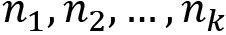{width="1.3452384076990376in" height="0.20833333333333334in"}, where the sum equals N and returns:
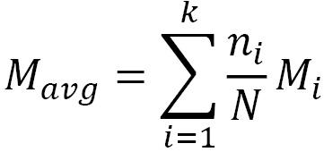{width="2.026042213473316in" height="0.9540912073490814in"}
As shown in the Aggregating local models section of section 4, Federated Learning Server Implementation with Python, simple-fl uses the following function to compute a weighted average of the buffered models (models sent from clients during the current round) based on the amount of data used to locally train each model:
def _average_aggregate(self,
buffer: List[np.array],
num_samples: List[int]) -> np.array:
\"\"\"
Given a list of models, compute the average model (FedAvg).
This function provides a primitive mathematical operation.
:param buffer: List[np.array] - A list of models to be aggregated
:return: np.array - The aggregated models
\"\"\"
denominator = sum(num_samples)
# weighted average
model = float(num_samples[0]) / denominator * buffer[0]
for i in range(1, len(buffer)):
model += float(num_samples[i]) / denominator * buffer[i]
return model
CopyExplain
-
The original algorithm does not differ too greatly from this portrayal. The high-level steps of the algorithm are as follows:
-
The server randomly samples K * C clients, where K is the total number of clients and C is a parameter between 0 and 1.
-
The selected K * C clients receive the most recent aggregate model and begin to train the model on their local data.
-
Each client sends its locally trained model back to the server after some desired amount of training is completed.
-
The server computes the parameter-wise arithmetic mean of the received models to compute the newest aggregate model.
-
Parallels can be immediately drawn between this formal representation and our presentation of the FL process, with ClientUpdate performing local training for an agent and the server performing aggregation using the same weighted averaging algorithm.
-
One important point is the sampling of a subset of clients to perform the local training and model transmission during each round, allowing for client subsampling parameterized by C.
-
This parameter is included to experimentally determine the convergence rates of various client set sizes -- in an ideal scenario, this will be set to 1.
-
As previously mentioned, FedAvg is the ideal FL scenario that essentially mirrors an approach to parallelized stochastic gradient descent. In parallelized SGD (pSGD), the goal is to leverage hardware parallelization (for example, running on multiple cores in parallel) in order to speed up SGD convergence on a specific machine learning task.
-
One approach for this task is for each core to train a base model on some subset of the data in parallel for some number of iterations, then aggregate the partially trained models and use the aggregated models as the next base for training.
-
In this case, if the cores are considered to be agents in an FL scenario, the parallelized SGD approach is the same as FedAvg in an ideal scenario.
-
This means all of the convergence guarantees and respective analyses that were done for pSGD can be directly applied to FedAvg, assuming the ideal FL scenario. From this prior work, it has, therefore, been shown that FedAvg demonstrates strong convergence rates.
-
After all this praise for FedAvg, it is only natural to question why more complex aggregation methods are even necessary.
-
Recall that the phrase "ideal FL scenario" was used several times when discussing FedAvg convergence. The unfortunate reality is that most practical FL applications will fail to meet one or more of the conditions stipulated by that phrase.
-
The ideal FL scenario can be broken down into three main conditions:
-
The computational agents are relatively homogeneous in computational power.
-
All agents can be assumed to be non-adversarial.
Dataset distributions
-
To examine FedAvg in the non-IID case, first, it is important to define what exactly is being referred to by the distribution of a dataset. In classification problems, the data distribution often refers to the distribution of the true classes associated with each data point. For example, consider the MNIST dataset, where each image is a handwritten digit from 0 to 9.
-
If a uniform random sample of 1,000 images was to be taken from the dataset, the expected number of images from each class would be the same -- this could be considered a uniform data distribution.
-
Alternatively, a sample with 910 images of the digit 0 along with 10 images of the other digits would be a heavily skewed data distribution.
-
To generalize outside of classification tasks, this definition can be extended to refer to the distribution of features present across the dataset.
-
These features could be manually crafted and provided to the model (such as linear regression), or they could be extracted from the raw data as part of the model pipeline (such as deep CNN models).
-
For classification problems, the class distribution is generally contained within the feature distribution, due to the implicit belief that the features are sufficient for correctly predicting the class.
-
The benefit of looking at feature distributions is the data-centric focus on features (versus the task-centric focus on classes), allowing for generalization across machine learning tasks.
-
However, in the context of experimental analysis, the ability to easily construct non-IID samples from a dataset makes classification tasks ideal for testing the robustness of FedAvg and different aggregation methods within an FL context.
-
To examine FedAvg in this section, consider a toy FL scenario where each agent trains a CNN on data samples taken from the MNIST dataset described earlier. There are two main cases, which are detailed next.
IID case
-
The convergence of the models can be represented through the use of the model parameter space. The parameter space of a model with n parameters can be thought of as an n-dimensional Euclidean space, where each parameter corresponds to one dimension in the space.
-
Consider an initialized model; the initial parameters of this model can then be represented as a point in the parameter space.
-
As local training and aggregation occur, this representative point will move in the parameter space, with the end goal being convergence to a point in the space corresponding to a local optimum of the loss or error function being minimized.
-
One key point of these functions is the dependence on the data used during the local training process -- when the datasets across the agents are IID, there is a general tendency for the optima of the respective loss/error functions to be relatively close in the parameter space.
-
Consider a trivial case where the datasets are IID and all models are initialized with the same parameters. As shown in the Model aggregation basics section of section 3,
-
Workings of the Federated Learning System, a simplified version of the parameter space can be depicted:
{width="6.268055555555556in" height="4.855555555555555in"}
Figure 7.1 -- Models with the same initialization and IID datasets
-
Observe how both models start at the same point (purple x) and move toward the same optima (purple dot), resulting in aggregate models close to the optima shared by both models.
-
Due to the resulting similarity of the error/loss functions across the agents, the models tend to converge toward the same or similar optima in the space during training.
-
This means that the change in the models after each aggregation step is relatively small, resulting in the convergence rates mirroring the single local model case.
-
If the underlying data distribution is representative of the true data distribution (for example, uniform across the 10 different digits for MNIST), the resulting aggregated model will demonstrate strong performance.
-
Next, consider the generalized IID case where each model is initialized separately:
{width="6.268055555555556in" height="4.747222222222222in"}
Figure 7.2 -- Models with different initializations and IID datasets
-
In this scenario, observe how both models start at different points (bold/dotted x) and initially move toward different optima, producing a poor first model. However, after the first aggregation, both models start at the same point and move toward the same optima, resulting in similar convergence to the first case.
-
It should be clear that this reduces to the previous case after the first aggregation step since each model starts the second round with the resulting aggregated parameters. As a result, the convergence properties previously stated can be extended to the general case of FedAvg with IID local datasets.
Non-IID Case
-
The key property in the IID local dataset case that allows for convergence speeds mirroring the single model case is the similarity of the local optima of the loss/error functions, due to their construction from similar data distributions. In the non-IID case, similarity in the optima is generally no longer observed.
-
Using the MNIST example, let's consider an FL scenario with two agents such that the first agent only has images with digits 0 to 4 and the second agent only has images with digits 5 to 9; that is, the datasets are not IID. These datasets would essentially lead to two completely different five-class classification tasks at the local training level, as opposed to the original 10-class classification problem -- this will result in completely different parameter space optima between the first agent and the second agent.
-
Consider the simplified representation of this parameter space as follows, with both models having the same initialization:
{width="6.268055555555556in" height="4.8597222222222225in"}
Figure 7.3 -- Models with different initializations and non-IID datasets
-
Now that optima are no longer shared (triangles/squares representing optima for bold/dotted model, respectively), even repeated aggregations cannot create an aggregate model close to optima of either model.
-
The models diverge, or drift, during each local training phase due to the different target optima in each round.
-
Only a small subset of the optima will be shared between the loss/error functions of both agents.
-
As a result, there is a high probability that each model will move toward optima that are not shared during local training, leading the models to drift apart in the parameter space. Each aggregation step will then pull the models toward the wrong optima, reverting the progress made during local training and hampering convergence.
-
Note that just taking the average of optima from different agents is very unlikely to be near optima from any of the agents in the parameter space, so in this case, the result of continued aggregation is generally a model that performs poorly across the whole dataset.
-
Convergence to a shared optimum might eventually occur due to stochasticity observed during local training, inducing movement of the aggregate model in the parameter space, but this does not have theoretical guarantees and will be far slower than convergence in the IID case when it does occur.
Important note
-
This MNIST example is a theoretical extreme of non-IID datasets. In practice, non-IID datasets might refer to different skews in the data distributions across agents (for example, twice as many images with digits 0--4 versus 5--9, and vice versa).
-
The severity of the difference is correlated to the performance of FedAvg, so adequate performance can still be reached in less severe cases.
-
However, in these cases, the performance of FedAvg will generally always be inferior to the analogous centralized training task where a single model is trained on all of the local datasets at once -- the theoretically optimal model achievable by FL.
-
While this section focused on the statistical basis for the issues that arise from non-IID datasets, the next section examines a far more direct problem that can arise -- especially when deploying at larger scales.
Computational power distributions
-
An unstated assumption of the agents participating in FL is that each agent is capable of performing local training if given infinite time.
-
Agents with limited computational power (memory and speed) might take significantly more time than other agents to finish local training, or they might require techniques such as quantization to support the model and training process.
-
However, agents that cannot complete local training during some rounds will trivially prevent convergence by stalling the FL process.
-
Generally, convergence bounds and experimental results focus on the number of communication rounds required to reach some level of performance.
-
Under this metric and the aforementioned assumption, convergence is completely independent of the computational power afforded to each agent, since computational power only affects the actual time necessary to complete one round.
-
However, convergence speed in practical applications is measured by the actual time taken, not the number of completed communication rounds -- this means that the time to complete each round is as important as the number of rounds.
-
This metric of the total time taken is where naïve FedAvg demonstrates poor performance when heterogeneous computation power is observed in the agents participating in FL
-
Specifically, the time to complete each round is bottlenecked by the local training time of the slowest agent participating in the round; this is because aggregation is trivially fast compared to training in most cases and must wait for all agents to complete local training.
-
When all agents are participating in the round, this bottleneck becomes the slowest overall agent. In the homogeneous computational power case, the difference in local training time between the fastest agent and the slowest agent will be relatively insignificant. In the heterogeneous case, a single straggler will greatly reduce the convergence time of FedAvg and lead to significant idle time in the faster agents waiting to receive the aggregated model.
-
Two modifications to FedAvg with full agent participation might initially seem to address this problem; however, both have drawbacks that lead to suboptimal performance:
- A second approach is to allow all agents to begin local training at the beginning of each round and prematurely begin aggregation after some number of models have been received. This method has the benefit of being able to completely eliminate the straggler effect without greatly restricting the number of agents participating in aggregation during each round. However, it results in the slowest agents never participating in aggregation over all rounds, essentially reducing the number of active agents and potentially limiting the variety of data used during training. In addition, the agents that are too slow to participate in aggregation will have done computational work for no benefit.
- Both the non-IID case and the heterogeneous computation power case focus on properties of an FL system that are generally easy to observe and under some level of administrative control. The next case we present deviates from this by challenging a key assumption when considering practical FL systems.
Protecting against adversarial agents
-
So far, it has been assumed that every agent participating in an FL scenario always acts in the desired way; that is, actively and correctly training the received model locally and participating in model transmission to/from the aggregator.
-
This is easily achieved in a research setting, where the federated setting is simulated and the agents are singularly controlled; however, this assumption of agents behaving correctly does not always hold in practice.
-
One example that does not involve targeted malicious intent is an error in the model weights being transmitted by an agent to the aggregator.
-
This can happen when the dataset used by an agent is flawed or the training algorithm is incorrectly implemented (the corruption of the parameter data during transmission is also possible). In the worst case, this can essentially lead to the parameters of one or many models being statistically equivalent to random noise.
-
When the L2 norm (the extension of vector magnitude for n-dimensional tensors) of the random noise is not significantly greater than that of the valid models,
-
FedAvg will suffer performance loss that is proportional to the ratio of faulty agents to all agents -- which is relatively acceptable when this ratio is small. However, even a single faulty agent can induce a near-random aggregate model if the norm of the agent's noise is significantly high.
-
This is due to the nature of the arithmetic mean being performed internally during the FedAvg aggregation.
-
The problem becomes worse when agents can be controlled by malicious adversaries.
-
A single malicious agent with sufficient information is capable of producing any desired model after aggregation through large modifications to the parameters of the model it submits.
-
Even without direct knowledge of the model parameters and associated weights of the other agents, a malicious agent can leverage relatively small changes between the local models and the aggregate model in later rounds to use the previous aggregate model as an estimate of the expected local model parameters.
-
Therefore, FedAvg offers little to no robustness against both random and controlled adversarial agents in an FL setting. While one potential means of mitigation would be to separately monitor the agents and prevent adversarial agents from transmitting models, significant damage to the convergence of the final model might have already occurred in the time necessary to identify such agents.
-
It should now be clear that FedAvg trades robustness in these non-ideal cases for simplicity in the calculation. Unfortunately, this robustness is a key consideration for practical applications of FL due to the lack of control compared to the research setting.
-
The next section focuses on methods of achieving robustness against the three non-ideal cases presented in this section.
Modifying aggregation for non-ideal cases
-
In practical FL applications, at least one of the aforementioned assumptions that constitute an ideal FL scenario generally does not hold; therefore, the usage of alternative aggregation methods might be necessary to best perform FL.
-
The goal of this section is to cover examples of aggregation methods that target heterogeneous computational power, adversarial agents, and non-IID datasets, in order of difficulty.
Handling heterogeneous computational power
-
As mentioned earlier, the ideal aggregation approach, in this case, consistently avoids the straggler effect while maximizing the number of agents participating in FL and allowing all agents to contribute to some extent, regardless of computational power differences.
-
Agents become stragglers during a round when their local training takes significantly more time than the majority of the agents.
-
Therefore, effectively addressing this problem actually requires some level of adaptability at the agent level in the local training process, based on the computational power available to each agent.
Manual adjustment
-
One straightforward way of accomplishing this is to change the number of local training iterations based on the time necessary for each iteration. In other words, the local training time is fixed and each agent performs as many iterations as possible within this time, as opposed to performing a fixed number of iterations.
-
This trivially eliminates the straggler problem but might result in poor performance if a large amount of local training time must be allocated for the slow agents to meaningfully contribute due to the model drift from faster agents potentially performing too many local training iterations.
-
This can be mitigated by setting a maximum number of local training iterations. However, a careful balance in the allocated local training must be found to have enough time for slow agents to produce adequate models while preventing faster agents from sitting idle after reaching the maximum number of iterations.
-
It is also unclear how such a threshold could be preemptively determined to achieve optimal performance instead of relying on experimental results to search for the best configuration.
Automatic adjustment -- FedProx
-
An aggregation method known as FedProx follows this same methodology of dynamically adjusting the local training processes for each agent based on computational power, while also revising the termination condition for local training to aid in the theoretical analysis of convergence.
-
Specifically, the fixed number of local training iterations is replaced by a termination condition for the training loop that accommodates agents with varying levels of computational power.
-
The underlying concept for this termination condition is the γ-inexact solution, which is satisfied when the magnitude of the gradient at the γ-inexact optima is less than γ times the magnitude of the gradient at the beginning of local training. Intuitively, γ is a value between 0 and 1, with values closer to 0 leading to more local training iterations due to the stricter termination condition.
-
Therefore, γ allows for the parameterization of an agent's computational power.
-
One potential problem with the termination condition approach is the divergence of the locally trained model from the aggregate model after many iterations of local training resulting from a strict condition.
-
To combat this, FedProx adds a proximal term to the objective function being minimized equal to the following:
{width="1.1302088801399826in" height="0.40687554680664917in"}
Here, {width="0.5311986001749781in" height="0.26833770778652666in"} represents the received aggregate model weights.
-
The proximal term penalizes differences between the current weights and the aggregated model weights, restricting the aforementioned local model divergence with the strength parameterized by μ.
-
From these two concepts, FedProx allows for a variable number of iterations proportional to the computational power to be performed by each agent without requiring manually tuned iteration counts for each agent or a set amount of allocated training time.
-
Because of the addition of the proximal term, FedProx requires gradient-based optimization methods to be employed in order to work -- more information on the underlying theory and comparison to FedAvg can be found in the original paper (which is at https://arxiv.org/abs/1812.06127).
Implementing FedProx
-
Because the modifications made by FedProx to FedAvg are all on the client side, the actual implementation of FedProx consists entirely of modifications to the local training framework.
-
Specifically, FedProx involves a new termination condition for local training and the addition of a constraining term to the local loss function. Therefore, it is helpful to use an example of the local training code to frame exactly how FedProx can be integrated.
-
Let's consider the following generic training code using PyTorch:
agg_model = ... # Get aggregate model -- abstracted out of example
model.load_state_dict(agg_model.state_dict())
for epoch in range(num_epochs):
for batch_idx, (inputs, targets) in enumerate(trainloader):
inputs, targets = inputs.to(device), targets.to(device)
optimizer.zero_grad()
outputs = model(inputs)
loss = criterion(outputs, targets)
loss.backward()
optimizer.step()
CopyExplain
-
Let this be the code that performs num_epochs epochs of training on the local dataset using the received aggregate model for each round.
-
The first necessary modification for FedProx is to replace the fixed number of epochs with a dynamic termination condition, checking whether a γ-inexact solution has been found with the aggregated model as the initial model. To do this, the total gradient over the entire training dataset for the aggregate model and the current local model must be stored -- this can be performed as follows:
agg_model = ... # Get aggregated model from aggregator
model.load_state_dict(agg_model.state_dict())
agg_grad = None
curr_grad = None
gamma = 0.9
mu = 0.001
CopyExplain
-
Values for the two FedProx parameters, gamma and mu, are set, and variables to store the gradients of both the aggregate model and the latest local model are defined.
-
We then define the γ-inexact new termination condition for local training using these gradient variables:
def gamma_inexact_solution_found(curr_grad, agg_grad, gamma):
if (curr_grad is None):
return False
return curr_grad.norm(p=2) \< gamma * agg_grad.norm(p=2)
CopyExplain
- This condition is now checked before each training loop iteration to determine when to stop local training. The total_grad variable is created to store the cumulative gradients that were created from each minibatch during backpropagation:
model.train()
while (not gamma_inexact_solution_found(curr_grad, agg_grad, gamma)):
total_grad = torch.cat([torch.zeros_like(param.data.flatten()) for param in model.parameters()])
for batch_idx, (inputs, targets) in enumerate(trainloader):
inputs, targets = inputs.to(device), targets.to(device)
optimizer.zero_grad()
outputs = model(inputs)
loss = criterion(outputs, targets)
CopyExplain
- To compute the proximal term, the weights of both the aggregate model and the latest local model are computed. From these weights, the proximal term is computed and added to the loss term:
curr_weights = torch.cat([param.data.flatten() for param in model.parameters()])
agg_weights = torch.cat([param.data.flatten() for param in agg_model.parameters()])
prox_term = mu * torch.norm(curr_weights - agg_weights, p=2)**2
loss += prox_term
CopyExplain
- The gradients are computed and added to the cumulative sum stored in total_grad:
loss.backward()
grad = torch.cat([param.grad.flatten() for param in model.parameters()])
total_grad += grad
optimizer.step()
CopyExplain
- Finally, we update agg_grad (if the gradients were computed with the aggregate weights) and curr_grad after the current local training iteration is completed:
if (agg_grad == None):
agg_grad = total_grad
curr_grad = total_grad
CopyExplain
-
These modifications allow for FedProx to be implemented on top of FedAvg. The full FL example using FedProx can be found at https://github.com/PacktPublishing/Federated-Learning-with-Python/tree/main/ch7/agg_fl_examples/cifar_fedprox_example.
-
An auxiliary approach to handle the heterogeneous computational power scenario that helps with computational efficiency when only mild heterogeneity is observed is the idea of compensation in aggregation.
-
The core idea of compensation is to allow for the local training that is done by a slower agent in one round to instead be included in the model aggregation of a subsequent round. The age of the model is compensated for in this subsequent round by multiplying the weight used for the weighted average and a penalizing term during aggregation. By doing so, slower agents can be given two or three times as much training time as that used by the faster agents while avoiding the straggler effect.
-
Mild heterogeneity is required in order to prevent cases where slower agents require too much extra time for training. This is due to the associated penalty given to the model after many rounds have passed; it will be severe enough to effectively lead to no contribution and reduce aggregation without compensation -- this is necessary to prevent models that are too old from hampering the convergence of the aggregate model.
-
Finally, we examine methods that help to address the third non-ideal property, where some subset of agents are controlled by an adversary or are, otherwise, behaving in an undesirable way.
Adversarial agents
-
In the previous section, it was shown that the core problem with FedAvg in the presence of adversarial agents was the lack of robustness to outliers in the underlying arithmetic mean used during aggregation.
-
This naturally raises the question of whether this mean can be estimated in such a manner that does offer such robustness. The answer is the class of robust mean estimators.
-
There are many such estimators that offer varying trade-offs between robustness, distance from the true arithmetic mean, and computational efficiency.
-
For use as a base for the implementation of the following aggregation methods, consider the following general aggregation function:
def aggregate(parameter_vectors):
# Perform some form of aggregation
return aggregated_parameter_vector
CopyExplain
-
This function takes a list of parameter vectors and returns the resulting aggregated parameter vector.
-
Now we will examine three example implementations of robust mean estimators.
Aggregation using the geometric median
-
The geometric median of a sample is the point minimizing the sum of L1 distances between itself and the sample. This is conceptually similar to the arithmetic mean, which is the point minimizing the sum of L2 distances between itself and the sample.
-
The use of L1 distances allows for greater robustness to outliers; in fact, an arbitrary point can only be induced in the geometric median if at least half of the points are from adversarial agents.
-
However, the geometric median cannot be directly computed, instead relying on numerical approximations or iterative algorithms to compute.
-
To compute the geometric mean iteratively, Weiszfeld's algorithm can be used as follows:
def geometric_median_aggregate(parameter_vectors, epsilon):
vector_shape = parameter_vectors[0].shape
vector_buffer = list(v.flatten() for v in parameter_vectors)
prev_median = np.zeros(vector_buffer[0].shape)
delta = np.inf
vector_matrix = np.vstack(vector_buffer)
while (delta > epsilon):
dists = np.sqrt(np.sum((vector_matrix - prev_median[np.newaxis, :])**2, axis=1))
curr_median = np.sum(vector_matrix / dists[:, np.newaxis], axis=0) / np.sum(1 / dists)
delta = np.linalg.norm(curr_median - prev_median)
prev_median = curr_median
return prev_median.reshape(vector_shape)
CopyExplain
- This algorithm uses the fact that the geometric median of a set of points is the point that minimizes the sum of Euclidean distances over the set, performing a form of weighted least squares with weights inversely proportional to the Euclidean distance between the point and the current median estimate at each iteration.
Aggregation using the coordinate-wise median
-
The coordinate-wise median is constructed by taking the median of each coordinate across the sample, as the name suggests.
-
This median can be directly computed, unlike the geometric median, and intuitively offers similar robustness to outliers due to the properties of the median in univariate statistics.
-
However, it is unclear whether the resulting model displays any theoretical similarities to the arithmetic mean in regard to performance on the dataset and convergence.
-
NumPy makes the implementation of this function quite simple, as follows:
def coordinate_median_aggregate(parameter_vectors):
** return np.median(parameter_vectors, axis=0)**
CopyExplain
- It is clear that the coordinate-wise median is far more computationally efficient to compute than the geometric median, trading off theoretical guarantees for speed.
Aggregation using the Krum algorithm
-
An alternative approach is to isolate outlier points from adversarial agents prior to aggregation. The most well-known example of this approach is the Krum algorithm, where distance-based scoring is performed prior to aggregation as a means of locating outlier points.
-
Specifically, the Krum algorithm first computes the pairwise L2 distance between each point -- these distances are then used to compute a score for each point equal to the sum of the n-f-2 smallest L2 distances (f is a parameter that is set).
-
Then, Krum outputs the received point with the lowest score, effectively returning the point with a minimal total L2 distance with f outlier points that are ignored. Alternatively, the scoring approach used by Krum can be used to trim outlier points prior to the computation of the arithmetic mean.
-
In both cases, for sufficiently large n and 2f+2 \< n, convergence rates similar to those of FedAvg in the non-adversarial case are achieved. More information on the Krum algorithm can be found in the original paper, which is located at https://papers.nips.cc/paper/2017/hash/f4b9ec30ad9f68f89b29639786cb62ef-Abstract.html.
-
The Krum algorithm can be used to perform aggregation as follows:
def krum_aggregate(parameter_vectors, f, use_mean=False):
num_vectors = len(parameter_vectors)
filtered_size = max(1, num_vectors-f-2)
scores = np.zeros(num_vectors)
for i in range(num_vectors):
distances = np.zeros(num_vectors)
for j in range(num_vectors):
distances[j] = np.linalg.norm(parameter_vectors[i] - parameter_vectors[j])
scores[i] = np.sum(np.sort(distances)[:filtered_size])
if (use_mean):
idx = np.argsort(scores)[:filtered_size]
return np.mean(np.stack(parameter_vectors)[idx], axis=0)
else:
idx = np.argmin(scores)
return parameter_vectors[idx]
CopyExplain
- Note that a flag has been included to determine which of the two Krum aggregation approaches (single selection versus trimmed mean) should be used. Vectorizing the distance computation is possible, but the iterative approach was preferred due to the expectation of large parameter vectors and smaller agent counts.
Non-IID datasets
-
The theoretical underpinning granted to FL by working with IID datasets plays a significant role in allowing performant aggregate models to be achieved through FL. At a high level, this can be explained by the discrepancy between the learning done by models in different datasets.
-
No theoretical guarantees can be made for the convergence of such models when dataset-agnostic aggregation methods are applied -- unless constraints on the non-IID nature of the datasets are applied.
-
The key hindering factor is the high probability of local models moving toward non-shared optima in the parameter space, leading to consistent drift between the local models and the aggregate model after each local training phase.
-
There are methods that attempt to restrict the modifications made to the aggregate model based on the local machine learning task, relying on the overparameterization of deep learning models to find relatively disjointed parameter subsets to optimize the aggregate model of each task.
-
One such aggregation approach is FedCurv, which uses the Fisher information matrix of the previous aggregate model to act as a regulator for auxiliary parameter modifications during local training.
-
However, the robustness of this approach for extreme non-IID cases in practical applications likely needs to be tested further to ensure acceptable performance.
Implementing FedCurv
-
The implementation of FedCurv involves two key modifications to the standard FedAvg approach.
-
First, the local loss function must be modified to include the regularization term incorporating the aggregated Fisher information from the previous round.
-
Second, the Fisher information matrix of the parameters must be calculated and aggregated correctly for use in the next round.
-
The local training example code, as shown in the Implementing FedProx section, will be used again to demonstrate an implementation of FedCurv.
-
Earlier, we saw that a model conversion layer allows for framework-agnostic model representations to be operated on by the aggregator.
-
Previously, these representations only contained the respective parameters from the original models; however, this agnostic representation actually allows for any desired parameter to be aggregated, even those only loosely tied to the true model parameters.
-
This means that the secondary parameters can be bundled and sent with the local model, aggregated, and then separated from the aggregate model in the next round.
-
In FedCurv, there are two sets of parameters that must be computed locally and aggregated for use in the next round; therefore, it can be assumed that these parameters are sent with the local model after training and separated from the aggregate model before training, for the sake of brevity in the example code (the implementation of this functionality is straightforward).
-
As a result, the two key modifications for FedCurv, as mentioned earlier, can be simplified down into computing the Fisher information parameters after locally training the model and computing the regularization term with the received aggregate Fisher information parameters.
-
The Fisher information matrix refers to the covariance of the gradient of the log-likelihood function of a model with respect to its parameters, often empirically evaluated over the data present.
-
FedCurv only utilizes the diagonal entries of this matrix, the variances between the gradient parameters, and their expected values of zero.
-
At a high level, this variance term can be considered an estimate of how influential the parameter is in changing the performance of the model on the data.
-
This information is essential for preventing the modification of parameters key to good performance on one dataset during the local training of other agents -- the underlying idea behind FedCurv.
-
Relaxing the measure of model performance from the gradient of the log-likelihood to the gradient of any objective function allows for the direct use of the gradient terms computed during backpropagation when computing the variance terms for models using gradient-based optimization methods, such as deep learning models.
-
Specifically, the variance term of a parameter is equal to the square of its respective gradient term, allowing for the terms to be directly computed from the net gradients calculated during local training.
-
First, we create two variables to store the agent's most recent Fisher information parameters and the received aggregate Fisher information parameters, which are used to determine the Fisher information from the other agents. The value of the lambda parameter of FedCurv is fixed, and total_grad is initialized as a container for the cumulative gradient from each training loop:
agg_model = ... # Get aggregated model from aggregator
model.load_state_dict(agg_model.state_dict())
fisher_info_params = ... # Initialize at start, then maintain to store past round parameters
agg_fisher_info_params = ... # Separate aggregate Fisher information parameters from aggregate model parameters
# Only consider other agents, and convert to PyTorch tensor
agg_fisher_info_params = {k:torch.tensor(agg_fisher_info_params[k] - fisher_info_params[k]) for k in fisher_info_params.keys()}
# Scaling parameter for FedCurv regularization term
fedcurv_lambda = 1.0
total_grad = {i:torch.zeros_like(param.data) for i,param in enumerate(model.parameters())}
CopyExplain
- Then, we compute the FedCurv regularization term from the model weights and the aggregate Fisher information parameters. This term is weighted by lambda and added to the loss term before computing the gradients:
model.train()
for epoch in range(num_epochs):
for batch_idx, (inputs, targets) in enumerate(trainloader):
inputs, targets = inputs.to(device), targets.to(device)
optimizer.zero_grad()
outputs = model(inputs)
loss = criterion(outputs, targets)
for i,param in enumerate(model.parameters()):
# Factor out regularization term to use saved fisher info parameters
reg_term = (param.data ** 2) * agg_fisher_info_params[f\'fedcurv_u_{i}\']
reg_term += 2 * param.data * agg_fisher_info_params[f\'fedcurv_v_{i}\']
reg_term += (agg_fisher_info_params[f\'fedcurv_v_{i}\'] ** 2) / agg_fisher_info_params[f\'fedcurv_u_{i}\']
loss += fedcurv_lambda * reg_term.sum()
CopyExplain
- The gradients are then computed and stored in total_grad before updating the model weights:
loss.backward()
for i,param in enumerate(model.parameters()):
total_grad[i] += param.grad
optimizer.step()
CopyExplain
- Finally, we compute and store the agent's most recent Fisher information parameters for use in the next round:
for i,param in enumerate(model.parameters()):
fisher_info_params[f\'fedcurv_u_{i}\'] = (total_grad[i] ** 2).numpy()
fisher_info_params[f\'fedcurv_v_{i}\'] = ((total_grad[i] ** 2) * param.data).numpy()
CopyExplain
- Therefore, framework-agnostic aggregation can be used to implement FedCurv on top of FedAvg. The full FL example using FedCurv can be found at https://github.com/PacktPublishing/Federated-Learning-with-Python/tree/main/ch7/agg_fl_examples/cifar_fedcurv_example.
Data-sharing approach
-
To make further progress, changes to external aspects of the FL scenario are necessary. For example, let's assume that the data privacy restriction is loosened, such that small subsets of the local datasets from each agent can be shared with the other agents.
-
This data-sharing approach allows for homogeneity in the local data distributions proportional to the amount of shared data to be achieved, at the expense of the key stationary data property of FL that makes it desirable in many privacy-oriented applications.
-
Thus, data-sharing approaches are generally unsuitable for the majority of applications.
Personalization through fine-tuning
-
It is clear that producing a single model that demonstrates strong performance across the local datasets is not easy when the datasets are IID. However, what would happen if the single model restriction was removed from the FL process?
-
If the goal is to produce local models that perform well on the same edge devices where training is conducted, removing the single model restriction allows for the use of different local models that have been trained on the exact data distributions where inference is being applied.
-
This concept is called personalization, in which agents use versions of the aggregate model tuned for the local data distribution to achieve strong performance. The key point of this approach is to balance the local performance of the locally trained model with the global performance and the resulting robustness of the aggregate model received in each round.
-
One method of accomplishing this is for each agent to maintain their local models across the rounds, updating the local model with the weighted average of the previous local model and the received aggregate model during each round.
-
Alternatively, consider a relaxation that allows for multiple aggregate models to be produced in each round. In cases where the local data distributions can be clustered into just a few separated groups, distribution-aware aggregation would allow for the selective application of aggregation methods to groups of models belonging to the same distribution cluster.
-
One example of this approach is the Performance-Based Neighbor Selection (PENS) algorithm, where agents receive locally trained models from other agents and test them on their own local dataset during the first phase. Using the assumption that models trained on similar datasets will perform better than models trained on different datasets, the agents then determine the set of other agents with similar data distributions, allowing for aggregation to only be performed with similar agents in the second phase.
-
A second approach is to add an intermediate aggregation step between the local models and the global aggregate model called a cluster model. By leveraging knowledge about the agent data distributions or through a dynamic allocation method, agents with similar data distributions can be assigned to a cluster aggregator, which is then known to produce a strong model due to its agents having IID datasets.
-
Balancing the performance of the cluster models with the robustness of global aggregation leads to the concept of the semi-global model, in which subsamples of the cluster models can be selected (potentially based on data distribution) to create a smaller set of partially global aggregate models that maintain performance and robustness.
-
Therefore, the cluster and semi-global model approach is beneficial for both aggregation and achieving a fully distributed FL system.
Summary
-
The goal of This section was to provide a conceptual overview of the current knowledge of aggregation, the key theoretical step in FL that allows for the disjoint training done by each agent to be pooled together with minimal transmission required.
-
FedAvg is a simple, yet surprisingly powerful aggregation algorithm that performs well in an ideal FL scenario. This scenario is achieved when training is done across IID datasets using machines with similar levels of computational power and no adversarial or otherwise incorrectly performing agents.
-
Unfortunately, these conditions are often not met when deploying an FL system in the real world.
-
To address these cases, we introduced and implemented modified aggregation approaches: FedProx, FedCurv, and three different robust mean estimators.
-
After reading This section, you should have a solid understanding of the considerations that must be taken into account for practical FL applications, and you should be able to integrate the aforementioned algorithms into these applications.
-
In the next section, we will do a deep dive into some of the existing FL frameworks with several toy examples to demonstrate the functionalities provided by each.
Introducing Existing Federated Learning Frameworks
-
The objective of This section is to introduce existing federated learning (FL) frameworks and platforms, applying each to federated learning scenarios involving toy machine learning (ML) problems.
-
The platforms focused on Here are Flower, TensorFlow Federated, OpenFL, IBM FL, and STADLE -- the idea behind this selection was to help you by covering a breadth of existing FL platforms.
-
By the end of This section, you should have a basic understanding of how to use each platform for FL, and you should be able to choose a platform based on its associated strengths and weaknesses for an FL application.
-
Here, we will cover the following topics:
-
Implementations of an example NLP FL task on movie review dataset, using existing frameworks
-
Implementations of example computer vision FL task with non-IID datasets, using existing frameworks
Technical requirements
-
You can find the supplemental code files for This section in the book's GitHub repository:
-
https://github.com/PacktPublishing/Federated-Learning-with-Python
-
Each implementation example Here was run on an x64 machine running Ubuntu 20.04.
-
The implementation of the training code for the NLP example requires the following libraries to run:
-
NumPy
-
TensorFlow (version ≥ 2.9.1)
-
TensorFlow Hub (pip install tensorflow-hub)
-
TensorFlow Datasets (pip install tensorflow-datasets)
-
TensorFlow Text (pip install tensorflow-text)
- The implementation of the training code for the non-IID (non-independent and identical distribution) computer vision example requires the following libraries to run:
-
NumPy
-
PyTorch (version ≥ 1.9)
-
Torchvision (version ≥ 0.10.0, tied to PyTorch version)
TensorFlow Federated
- You can install the following libraries to use TFF:
- nest_asyncio (using the pip install nest_asyncio command)
OpenFL
-
You can install OpenFL using pip install openfl.
-
Alternatively, you can build from source with the following commands:
git clone https://github.com/intel/openfl.git
cd openfl
pip install .
CopyExplain
IBM FL
- Installing the locally hosted version of IBM FL requires the wheel installation file located in the code repository. To perform this installation, run the following commands:
git clone https://github.com/IBM/federated-learning-lib.git
cd federated-learning-lib
pip install federated_learning_lib-*-py3-none-any.whl
CopyExplain
Flower
= You can install Flower using the pip install flwr command.
STADLE
- You can install the STADLE client-side library using the pip install stadle-client command.
Introduction to FL frameworks
- First, we introduce the FL frameworks and platforms to be used in the subsequent implementation-focused sections.
Flower
-
Flower ([https://flower.dev/]{.underline}) is an open source and ML framework-agnostic FL framework that aims to be accessible to users. Flower follows a standard client-server architecture, in which the clients are set up to receive the model parameters from the server, train on local data, and send the new local model parameters back to the server.
-
The high-level orchestration of the federated learning process is dictated by what Flower calls strategies, used by the server for aspects such as client selection and parameter aggregation.
-
Flower uses Remote Procedure Calls (RPCs) in order to perform said orchestration through client-side execution from messages sent by the server. The extensibility of the framework allows researchers to experiment with novel approaches such as new aggregation algorithms and communication methods (such as model compression).
TensorFlow Federated (TFF)
-
TFF ([https://www.tensorflow.org/federated]{.underline}) is an open source FL/computation framework built on top of TensorFlow that aims to allow researchers to easily simulate federated learning with existing TensorFlow/Keras models and training pipelines.
-
It consists of the Federated Core layer, which allows for the implementation of general federated computations, and the Federated Learning layer, which is built on top and provides interfaces for FL-specific processes.
-
TFF focuses on single-machine local simulations of FL, using wrappers to create TFF-specific datasets, models, and federated computations (core client and server computation performed during the FL process) from the standard TensorFlow equivalents.
-
The focus on building everything from general federated computations allows researchers to implement each step as desired, allowing experimentation to be supported.
OpenFL
-
OpenFL ([https://github.com/intel/openfl]{.underline}) is an open source FL framework developed by Intel, focused on allowing cross-silo privacy-preserving ML to be performed.
-
OpenFL allows for two different workflows depending on the desired lifespan of the federation (where federation refers to the entire FL system).
-
In the aggregator-based workflow, a single experiment and associated federated learning plan are sent from the aggregator to the participating collaborators (agents) to be run as the local training step of the FL process---the federation is stopped after the experiment is complete. In the director-based workflow, long-lived components are instead used to allow for experiments to be run on demand.
-
The following diagram depicts the architecture and users for the director-based workflow:
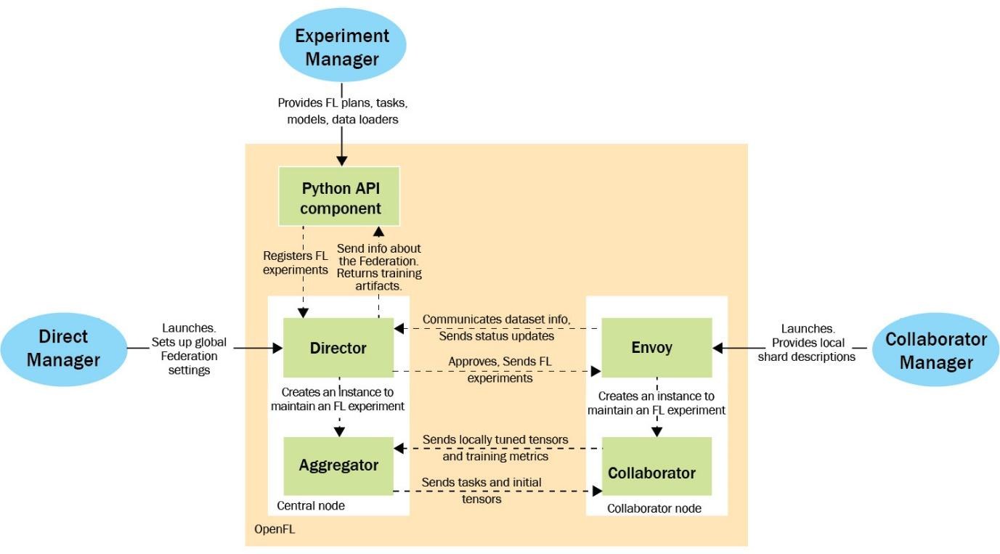{width="6.268055555555556in" height="3.473611111111111in"}
Figure 8.1 -- Architecture of director-based workflow (adapted from https://openfl.readthedocs.io/en/latest/source/openfl/components.html)
-
Director Manager oversees the running of experiments, working with long-lived Envoy components residing on the collaborator nodes to manage the short-lived components (collaborators + aggregator) for each experiment.
-
In targeting the cross-silo data scenario, OpenFL applies a unique focus on managing data shards, including cases where data representations differ across silos.
IBM FL
-
IBM FL is a framework that also focuses on enterprise FL. It follows a straightforward aggregator-party design, where some number of parties with local data collaborate with other parties by sending incremental model training results to the aggregator and working with the produced aggregate models (following standard client-server FL architecture).
-
IBM FL has official support for a number of fusion (aggregation) algorithms and certain fairness techniques aimed at combating bias---the details of these algorithms can be found at the repository located at https://github.com/IBM/federated-learning-lib.
-
One specific goal of IBM FL is to be highly extensible, allowing users to easily make necessary modifications if specific features are desired. It also supports a Jupyter-Notebook-based dashboard to aid in orchestrating FL experiments.
STADLE
-
Unlike the previous frameworks, STADLE ([https://stadle.ai/]{.underline}) is an ML-framework-agnostic FL and distributed learning SaaS platform that aims to allow for the seamless integration of FL into production-ready applications and ML pipelines.
-
The goal of STADLE is to minimize the amount of FL-specific code necessary for integration, making FL accessible to newcomers while still providing flexibility to those looking to experiment.
-
With the STADLE SaaS platform, users of varying technical abilities can collaborate on FL projects at all scales.
-
Performance tracking and model management functionalities allow users to produce validated federated models with strong performance, while an intuitive configuration panel allows for detailed control over the federated learning process.
-
STADLE uses a two-level component hierarchy that allows for multiple aggregators to operate in parallel, scaling to match demand. The following figure depicts the high-level architecture:
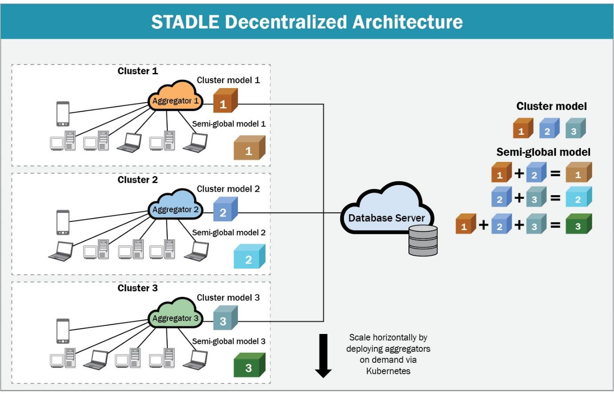{width="6.268055555555556in" height="4.026388888888889in"}
Figure 8.2 -- STADLE multi-aggregator architecture
- Development of STADLE clients is streamlined with pip installation and an easy-to-understand configuration file, with several examples made publicly available for use as a reference on the different ways STADLE can be integrated into existing ML code.
PySyft
-
While PySyft ([https://github.com/OpenMined/PySyft]{.underline}) implementations are not included in this section due to ongoing changes in the codebase, it is still a major player in the privacy-preserving deep learning space.
-
The core principle behind PySyft is to allow for the ability to perform computations over data stored on a machine without direct access to said data ever being given.
-
This is accomplished by adding an intermediate layer between the user and the data location that sends computation requests to participating worker machines, returning the computed result to the user while maintaining the privacy of the data stored and used by each worker to perform the computation.
-
This general capability directly extends itself to FL, reworking each step of a normal deep learning training flow to be a computation over the model parameters and data stored at each worker (agent) participating in FL.
-
To accomplish this, PySyft utilizes hooks that encapsulate the standard PyTorch/TensorFlow libraries, modifying the requisite internal functions in order to allow model training and testing to be supported as PySyft privacy-preserving computations.
-
Now that the high-level ideas behind the FL frameworks have been explained, we move to the implementation-level details for their practical usage in two example scenarios. First, we look at how to modify the existing centralized training code for an NLP model to use FL.
Example -- the federated training of an NLP model
-
The first ML problem that will be converted into an FL scenario through each of the aforementioned FL frameworks will be a classification problem within the domain of NLP.
-
At a high level, NLP refers to the intersection of computational linguistics and ML with an overarching goal of allowing computers to achieve some level of understanding from human language -- the details of this understanding vary widely based on the specific problem being targeted.
-
For this example, we will be performing sentiment analysis on movie reviews, classifying them as positive or negative. The dataset we will be using is the SST-2 dataset (https://nlp.stanford.edu/sentiment/), containing movie reviews in a string format and the associated binary labels 0/1 representing negative and positive sentiment, respectively.
-
The model we will use to perform binary classification is a pretrained BERT model with a custom classification head.
-
The BERT model allows us to encode a sentence into a high-dimensional numerical vector, which can then be passed to the classification head to output the binary label prediction; more information on the BERT model can be found at https://huggingface.co/blog/bert-101.
-
We choose to use a pretrained model that has already learned how to produce general encodings for sentences after a significant amount of training, as opposed to performing said training from scratch. This allows us to focus training on the classification head to fine-tune the model on the SST-2 dataset, saving time while maintaining performance.
-
We will now go through the local (centralized) training code that will be used as a base when showing how to use each of the FL frameworks, starting with the Keras model definition and dataset loader.
Defining the sentiment analysis model
-
The SSTModel object defined in the sst_model.py file is the Keras model we will be using for this example.
-
First, we import the requisite libraries:
import tensorflow as tf
from tensorflow import keras
from keras import layers
import tensorflow_text
import tensorflow_hub as hub
import tensorflow_datasets as tfds
CopyExplain
-
TensorFlow Hub is used to easily download the pretrained BERT weights into a Keras layer. TensorFlow Text is used when loading in the BERT weights from TensorFlow Hub. TensorFlow Datasets will allow us to download and cache the SST-2 dataset.
-
Next, we define the model and initialize the model layer objects:
class SSTModel(keras.Model):
def __init__(self):
super(SSTModel, self).__init__()
self.preprocessor = hub.KerasLayer(\"https://tfhub.dev/tensorflow/bert_en_uncased_preprocess/3\")
self.small_bert = hub.KerasLayer(\"https://tfhub.dev/tensorflow/bert_en_uncased_L-12_H-768_A-12/4\")
self.small_bert.trainable = False
self.fc1 = layers.Dense(512, activation=\'relu\')
self.fc2 = layers.Dense(64, activation=\'relu\')
self.fc3 = layers.Dense(1, activation=\'sigmoid\')
CopyExplain
-
The preprocessor object takes the raw sentence input batches and converts them into the format used by the BERT model.
-
We load the preprocessor and BERT layers from TensorFlow Hub, then initialize the dense layers that make up the classification head. We use the sigmoid activation function at the end to squash the output into the interval (0,1), allowing for comparison with the true labels.
-
We can then define the forward pass of the model:
def call(self, inputs):
input_dict = self.preprocessor(inputs)
bert_output = self.small_bert(input_dict)[\'pooled_output\']
output = self.fc1(keras.activations.relu(bert_output, alpha=0.2))
scores = self.fc3(self.fc2(output))
return scores
CopyExplain
- We apply leaky ReLU to the BERT output to add non-linearity before passing the output to the classification head layers.
Creating the data loader
- We also implement a function to load in the SST-2 dataset using the TensorFlow Datasets library. First, the training data is loaded and converted into a NumPy array for use during training:
def load_sst_data(client_idx=None, num_clients=1):
x_train = []
y_train = []
for d in tfds.load(name=\"glue/sst2\", split=\"train\"):
x_train.append(d[\'sentence\'].numpy())
y_train.append(d[\'label\'].numpy())
x_train = np.array(x_train)
y_train = np.array(y_train)
CopyExplain
- We load the test data in a similar manner:
x_test = []
y_test = []
for d in tfds.load(name=\"glue/sst2\", split=\"validation\"):
x_test.append(d[\'sentence\'].numpy())
y_test.append(d[\'label\'].numpy())
x_test = np.array(x_test)
y_test = np.array(y_test)
CopyExplain
- If client_idx and num_clients are specified, we return the respective partition of the training dataset -- this will be used for performing FL:
if (client_idx is not None):
shard_size = int(x_train.size / num_clients)
x_train = x_train[client_idx*shard_size:(client_idx+1)*shard_size]
y_train = x_train[client_idx*shard_size:(client_idx+1)*shard_size]
return (x_train, y_train), (x_test, y_test)
CopyExplain
- Next, we examine the code to perform local training, located in local_training.py.
Training the model
- We first import the requisite libraries:
import tensorflow as tf
from tensorflow import keras
from sst_model import SSTModel, load_sst_data
CopyExplain
- We can then use the previously defined dataset loader (without splitting) to load in the train and test splits:
(x_train,y_train), (x_test,y_test) = load_sst_data()
CopyExplain
- We can now compile the model and begin training:
model.compile(
optimizer = keras.optimizers.Adam(learning_rate=0.0005, amsgrad=False),
loss = keras.losses.BinaryCrossentropy(),
metrics = [keras.metrics.BinaryAccuracy()]
)
model.fit(x_train, y_train, batch_size=64, epochs=3)
CopyExplain
- Finally, we evaluate the model on the test split:
_, acc = model.evaluate(x_test, y_test, batch_size=64)
print(f\"Accuracy of model on test set: {(100*acc):.2f}%\")
CopyExplain
-
The model should reach around 82% test accuracy after three epochs of training.
-
Now that we have gone through the local training code, we can examine how the code can be modified to use FL with each of the aforementioned FL frameworks.
Adopting an FL training approach
-
To demonstrate how FL can be applied to the SST model training scenario, we have to first split the original SST-2 dataset into disjoint subsets representing the local datasets in an FL application. To keep things simple, we will examine the case of three agents each training on separate thirds of the dataset.
-
For now, these subsets are randomly sampled without replacement from the dataset -- in the next section, Federated training of an image classification model on non-IID data, we examine the case where the local datasets are created from a biased sampling of the original dataset. Instead of locally training for three epochs, we will perform three rounds of FL with each local training phase training for one epoch on the local data.
-
FedAvg will be used to aggregate the locally trained models at the end of each round. After these three rounds, the aforementioned validation metrics will be computed using the final aggregate model, allowing for comparisons to be drawn between the local training cases and the FL case.
Integrating TensorFlow Federated for SST-2
-
As previously mentioned, the TensorFlow Federated (TFF) framework was built on top of the TensorFlow and Keras deep learning libraries. The model implementation was done using Keras; as a result, the integration of TFF into the local training code is relatively straightforward.
-
The first step is to add the TFF-specific imports and FL-specific parameters prior to loading the dataset:
import nest_asyncio
nest_asyncio.apply()
import tensorflow_federated as tff
NUM_CLIENTS = 3
NUM_ROUNDS = 3
CopyExplain
- TFF allows us to simulate some number of agents by passing the appropriate number of datasets (local datasets) to the FL process. To split the SST-2 dataset into thirds after preprocessing, we can use the following code:
client_datasets = [load_sst_data(idx, NUM_CLIENTS)[0] for idx in range(NUM_CLIENTS)]
CopyExplain
- Next, we have to wrap the Keras model using a TFF API function to easily create the respective tff.learning.Model object. We create a function that initializes the SST model and passes it along with the input spec (information on the size of each data element) to this API function, returning the result -- TFF will use this function internally to create the model during the FL process:
def sst_model_fn():
sst_model = SSTModel()
sst_model.build(input_shape=(None,64))
return tff.learning.from_keras_model(
sst_model,
input_spec=tf.TensorSpec(shape=(None), dtype=tf.string),
loss=keras.metrics.BinaryCrossentropy()
)
CopyExplain
- The TFF FedAvg process can then be created, using the sst_model_fn function along with the optimizers used to update the local models and the aggregate model. Using a learning rate of 1.0 for the server optimizer function allows for the new aggregate model to replace the old one at the end of each round (as opposed to computing a weighted average of the old and new models):
fed_avg_process = tff.learning.algorithms.build_unweighted_fed_avg(
model_fn = sst_model_fn,
client_optimizer_fn = lambda: keras.optimizers.Adam(learning_rate=0.001),
server_optimizer_fn = lambda: keras.optimizers.SGD(learning_rate=1.0)
)
CopyExplain
- Finally, we initialize and run the federated learning process for 10 rounds. Each fed_avg_process.next() call simulates one round by performing local training with three models on the client datasets followed by aggregation using FedAvg. The resulting state after the first round is passed to the next call as the starting FL state for the round:
state = fed_avg_process.initialize()
for round in range(NUM_ROUNDS):
state = fed_avg_process.next(state, client_datasets).state
CopyExplain
- After the FL process is completed, we convert the final aggregate tff.learning.Model object back into the original Keras model format in order to compute the validation metrics:
fed_weights = fed_avg_process.get_model_weights(state)
fed_sst_model = SSTModel()
fed_sst_model.build(input_shape=(None, 64))
fed_sst_model.compile(
optimizer = keras.optimizers.Adam(learning_rate=0.005, amsgrad=False),
loss = keras.losses.BinaryCrossentropy(),
metrics = [keras.metrics.BinaryAccuracy()]
)
fed_weights.assign_weights_to(fed_sst_model)
_, (x_test, y_test) = load_sst_data()
_, acc = fed_sst_model.evaluate(x_test, y_test, batch_size=64)
print(f\"Accuracy of federated model on test set: {(100*acc):.2f}%\")
CopyExplain
-
The final accuracy of the aggregate model should be around 82%.
-
From this, it should be clear that the TFF FedAvg results are nearly identical to those of the local training scenario.
Integrating OpenFL for SST-2
-
Recall that OpenFL supports two different workflows: the aggregator-based workflow and the director-based workflow. This example will use the director-based workflow, involving long-living components that can conduct FL task requests as they come in. This was chosen due to the desirability of having a persistent FL setup for deploying multiple projects; however, both workflows conduct the same core FL process and thus demonstrate similar performance.
-
To help with model serialization in this case, we only aggregate the classification head weights, reconstructing the full model at runtime during training and validation (TensorFlow Hub caches the downloaded layers, so the download process only occurs once). We include the following functions in sst_model.py to aid with this modification:
def get_sst_full(preprocessor, bert, classification_head):
sst_input = keras.Input(shape=(), batch_size=64, dtype=tf.string)
scores = classification_head(bert(preprocessor(sst_input))[\'pooled_output\'])
return keras.Model(inputs=sst_input, outputs=scores, name=\'sst_model\')
def get_classification_head():
classification_head = keras.Sequential([
layers.Dense(512, activation=\'relu\', input_shape=(768,)),
layers.Dense(64, activation=\'relu\', input_shape=(512,)),
layers.Dense(1, activation=\'sigmoid\', input_shape=(64,))
])
return classification_head
CopyExplain
-
Because OpenFL focuses on addressing the data silo case, the creation of the local datasets from the SST-2 data is slightly more involved than the TFF case. The objects needed to create the dataset will be implemented in a separate file named sst_fl_dataset.py.
-
First, we include the necessary imports. The two OpenFL-specific objects we import are the ShardDescriptor object, which handles the dataset loading and sharding, and the DataInterface object, which handles access to the datasets:
from openfl.interface.interactive_api.shard_descriptor import ShardDescriptor
from openfl.interface.interactive_api.experiment import DataInterface
import tensorflow as tf
from sst_model import load_sst_data
CopyExplain
Implementing ShardDescriptor
- We first implement the SSTShardDescriptor class. When this shard descriptor is created, we save the rank (client number) and worldsize (total number of clients) values, then load the training and validation datasets:
class SSTShardDescriptor(ShardDescriptor):
def __init__(
self,
rank_worldsize: str = \'1, 1\',
**kwargs
):
self.rank, self.worldsize = tuple(int(num) for num in rank_worldsize.split(\',\'))
(x_train,y_train), (x_test,y_test) = load_sst_data(self.rank-1, self.worldsize)
self.data_by_type = {
\'train\': tf.data.Dataset.from_tensor_slices((x_train, y_train)).batch(64),
\'val\': tf.data.Dataset.from_tensor_slices((x_test, y_test)).batch(64)
}
CopyExplain
- We implement the ShardDescriptor class functions to get the available dataset types (training and validation in this case) and the respective dataset/shard based on the rank of the client:
def get_shard_dataset_types(self):
return list(self.data_by_type)
def get_dataset(self, dataset_type=\'train\'):
if dataset_type not in self.data_by_type:
raise Exception(f\'Wrong dataset type: {dataset_type}\')
return self.data_by_type[dataset_type]
CopyExplain
- We also specify the properties of the specific dataset being used. Note that the sample shape is set to 1. The preprocessor layer of the SSTModel allows us to pass in strings as input, which are treated as input vectors of type tf.string and length 1:
@property
def sample_shape(self):
return [\"1\"]
@property
def target_shape(self):
return [\"1\"]
@property
def dataset_description(self) -> str:
return (f\'SST dataset, shard number {self.rank}\'
f\' out of {self.worldsize}\')
CopyExplain
- With this, the SSTShardDescriptor implementation is completed.
Implementing DataInterface
- Next, we implement the SSTFedDataset class as a subclass of DataInterface. This is done by implementing the shard descriptor getter and setter methods, with the setter method preparing the data to be provided to the training/validation FL tasks:
class SSTFedDataset(DataInterface):
def __init__(self, **kwargs):
super().__init__(**kwargs)
@property
def shard_descriptor(self):
return self._shard_descriptor
@shard_descriptor.setter
def shard_descriptor(self, shard_descriptor):
self._shard_descriptor = shard_descriptor
self.train_set = shard_descriptor.get_dataset(\'train\')
self.valid_set = shard_descriptor.get_dataset(\'val\')
CopyExplain
- We also implement the API functions to grant dataset access and dataset size information (used during aggregation):
def get_train_loader(self):
return self.train_set
def get_valid_loader(self):
return self.valid_set
def get_train_data_size(self):
return len(self.train_set) * 64
def get_valid_data_size(self):
return len(self.valid_set) * 64
CopyExplain
- With this, the local SST-2 datasets can be constructed and used.
Creating FLExperiment
- We now focus on the actual implementation of the FL process within a new file, fl_sim.py. First, we import the necessary libraries -- from OpenFL, we import the following:
-
ModelInterface: Allows us to convert our Keras model into the format used by OpenFL in the registered tasks
-
Federation: Manages information relating to the connection with the director
-
FLExperiment: Uses the TaskInterface, ModelInterface, and Federation objects to conduct the FL process
import tensorflow as tf
from tensorflow import keras
import tensorflow_hub as hub
from openfl.interface.interactive_api.experiment import TaskInterface
from openfl.interface.interactive_api.experiment import ModelInterface
from openfl.interface.interactive_api.experiment import FLExperiment
from openfl.interface.interactive_api.federation import Federation
from sst_model import get_classification_head, get_sst_full
from sst_fl_dataset import SSTFedDataset
CopyExplain
- Next, we create the Federation object using the default director connection information:
client_id = \'api\'
director_node_fqdn = \'localhost\'
director_port = 50051
federation = Federation(
client_id=client_id,
director_node_fqdn=director_node_fqdn,
director_port=director_port,
tls=False
)
CopyExplain
- We then initialize the model with the associated optimizer and loss function -- these objects are used by the OpenFL KerasAdapter to create the ModelInterface object. We call the model on a dummy Keras input in order to initialize all of the weights before passing the model to ModelInterface:
classification_head = get_classification_head()
optimizer = keras.optimizers.Adam(learning_rate=0.005, amsgrad=False)
loss = keras.losses.BinaryCrossentropy()
framework_adapter = \'openfl.plugins.frameworks_adapters.keras_adapter.FrameworkAdapterPlugin\'
MI = ModelInterface(model=classification_head, optimizer=optimizer, framework_plugin=framework_adapter)
CopyExplain
- Next, we create a TaskInterface object and use it to register the training task. Note that including the optimizer in the decorator function of a task will result in the training dataset being passed to the task; otherwise, the validation dataset will be passed to the task:
TI = TaskInterface()
\@TI.register_fl_task(model=\'model\', data_loader=\'train_data\', device=\'device\', optimizer=\'optimizer\')
def train(model, train_data, optimizer, device):
preprocessor = hub.KerasLayer(\"https://tfhub.dev/tensorflow/bert_en_uncased_preprocess/3\")
small_bert = hub.KerasLayer(\"https://tfhub.dev/tensorflow/bert_en_uncased_L-12_H-768_A-12/4\")
small_bert.trainable = False
full_model = get_sst_full(preprocessor, small_bert, model)
full_model.compile(loss=loss, optimizer=optimizer)
history = full_model.fit(train_data, epochs=1)
return {\'train_loss\':history.history[\'loss\'][0]}
CopyExplain
- Similarly, we register the validation task using the TaskInterface object. Note that we can collect the metrics generated by the evaluate function and return the values as a means of tracking performance:
\@TI.register_fl_task(model=\'model\', data_loader=\'val_data\', device=\'device\')
def validate(model, val_data, device):
preprocessor = hub.KerasLayer(\"https://tfhub.dev/tensorflow/bert_en_uncased_preprocess/3\")
small_bert = hub.KerasLayer(\"https://tfhub.dev/tensorflow/bert_en_uncased_L-12_H-768_A-12/4\")
small_bert.trainable = False
full_model = get_sst_full(preprocessor, small_bert, model)
full_model.compile(loss=loss, optimizer=optimizer)
loss, acc = full_model.evaluate(val_data, batch_size=64)
return {\'val_acc\':acc, \'val_loss\':loss,}
CopyExplain
- We can now load in the dataset using the SSTFedDataset class implemented earlier and create and start a new FLExperiment using the created ModelInterface, TaskInterface, and SSTFedDatasets objects:
fed_dataset = SSTFedDataset()
fl_experiment = FLExperiment(federation=federation, experiment_name=\'sst_experiment\')
fl_experiment.start(
model_provider=MI,
task_keeper=TI,
data_loader=fed_dataset,
rounds_to_train=3,
opt_treatment=\'CONTINUE_LOCAL\'
)
CopyExplain
Defining the configuration files
- The last step is to create the configuration files used by director and envoys in order to actually load the data and start the FL process. First, we create director_config containing the following information:
settings:
listen_host: localhost
listen_port: 50051
sample_shape: [\"1\"]
target_shape: [\"1\"]
CopyExplain
-
This is saved in director/director_config.yaml.
-
We then create the three envoy configuration files. The first file (envoy_config_1.yaml) contains the following:
params:
cuda_devices: []
optional_plugin_components: {}
shard_descriptor:
template: sst_fl_dataset.SSTShardDescriptor
params:
rank_worldsize: 1, 3
CopyExplain
- The second and third envoy config files are the same, except with the values rank_worldsize: 2, 3 and rank_worldsize: 3, 3, respectively. These config files, alongside all of the code files, are stored in the experiment directory. The directory structure should look like the following:
- director_config.yaml
-
experiment
-
envoy_config_1.yaml
-
envoy_config_2.yaml
-
envoy_config_3.yaml
-
sst_fl_dataset.py
-
sst_model.py
-
fl_sim.py (file with FLExperiment creation)
-
-
Running the OpenFL example
-
First, start the director by running the following command from within the director folder (make sure OpenFL is installed in the working environment):
fx director start --disable-tls -c director_config.yaml
CopyExplain
- Next, run the following commands in separate terminals from the experiment directory:
fx envoy start -n envoy_1 ---disable-tls --envoy-config-path envoy_config_1.yaml -dh localhost -dp 50051
fx envoy start -n envoy_2 ---disable-tls --envoy-config-path envoy_config_2.yaml -dh localhost -dp 50051
fx envoy start -n envoy_3 ---disable-tls --envoy-config-path envoy_config_3.yaml -dh localhost -dp 50051
CopyExplain
- Finally, start FLExperiment by running the fl_sim.py script. After the three rounds are completed, the aggregate model should achieve a validation accuracy of around 82%. Once again, the performance is nearly identical to the local training scenario.
Integrating IBM FL for SST-2
- IBM FL uses a saved version of the model when performing FL. The following code (create_saved_model.py) initializes a model (calling the model on a dummy input to initialize the parameters) and then saves the model in the Keras SavedModel format for IBM FL to use:
import tensorflow as tf
from tensorflow import keras
from sst_model import SSTModel
sst_model = SSTModel()
optimizer = keras.optimizers.Adam(learning_rate=0.005, amsgrad=False)
loss = keras.losses.BinaryCrossentropy(),
sst_model.compile(loss=loss, optimizer=optimizer)
sst_input = keras.Input(shape=(), dtype=tf.string)
sst_model(sst_input)
sst_model.save(\'sst_model_save_dir\')
CopyExplain
- Run this once to save the model into the folder named sst_model_save_dir -- we will point IBM FL to load in the model saved in this directory.
Creating DataHandler
- Next, we create a subclass of the IBM FL DataHandler class in charge of providing the training and validation data to the model -- this subclass will load, preprocess, and store the SST datasets as class attributes. We first import the necessary libraries:
from ibmfl.data.data_handler import DataHandler
import tensorflow as tf
from sst_model import load_sst_data
CopyExplain
- The init function of this class loads the data info parameters, which are then used to load the correct SST-2 data partition:
class SSTDataHandler(DataHandler):
def __init__(self, data_config=None):
super().__init__()
if (data_config is not None):
if (\'client_id\' in data_config):
self.client_id = int(data_config[\'client_id\'])
if (\'num_clients\' in data_config):
self.num_clients = int(data_config[\'num_clients\'])
train_data, val_data = load_sst_data(self.client_id-1, self.num_clients)
self.train_dataset = tf.data.Dataset.from_tensor_slices(train_data).batch(64)
self.val_dataset = tf.data.Dataset.from_tensor_slices(val_data).batch(64)
CopyExplain
- We also implement the API function that returns the loaded datasets for use during training/validation:
def get_data(self):
return self.train_dataset, self.val_dataset
CopyExplain
Defining the configuration files
- The next step is to create the configuration JSON files used when starting the aggregator and initializing the parties. The aggregation config first specifies the connection information it will use to communicate with the parties:
{
\"connection\": {
\"info\": {
\"ip\": \"127.0.0.1\",
\"port\": 5000,
\"tls_config\": {
\"enable\": \"false\"
}
},
\"name\": \"FlaskConnection\",
\"path\": \"ibmfl.connection.flask_connection\",
\"sync\": \"False\"
},
CopyExplain
- Next, we specify the fusion handler used for aggregation:
\"fusion\": {
\"name\": \"IterAvgFusionHandler\",
\"path\": \"ibmfl.aggregator.fusion.iter_avg_fusion_handler\"
},
CopyExplain
- We also specify the hyperparameters related to both local training and aggregation. perc_quorum refers to the percentage of parties that must participate before aggregation can begin:
\"hyperparams\": {
\"global\": {
\"max_timeout\": 10800,
\"num_parties\": 1,
\"perc_quorum\": 1,
\"rounds\": 3
},
\"local\": {
\"optimizer\": {
\"lr\": 0.0005
},
\"training\": {
\"epochs\": 1
}
}
},
CopyExplain
- Finally, we specify the IBM FL protocol handler to use:
\"protocol_handler\": {
\"name\": \"ProtoHandler\",
\"path\": \"ibmfl.aggregator.protohandler.proto_handler\"
}
}
CopyExplain
- This configuration is saved in agg_config.json.
{
\"aggregator\":
{
\"ip\": \"127.0.0.1\",
\"port\": 5000
},
\"connection\": {
\"info\": {
\"ip\": \"127.0.0.1\",
\"port\": 8085,
\"id\": \"party\",
\"tls_config\": {
\"enable\": \"false\"
}
},
\"name\": \"FlaskConnection\",
\"path\": \"ibmfl.connection.flask_connection\",
\"sync\": \"false\"
},
CopyExplain
- We then specify the data handler and the local training handler to use -- this component trains the SST model using the model information and the local data:
\"data\": {
\"info\": {
\"client_id\": 0,
\"num_clients\": 3
},
\"name\": \"SSTDataHandler\",
\"path\": \"sst_data_handler\"
},
\"local_training\": {
\"name\": \"LocalTrainingHandler\",
\"path\": \"ibmfl.party.training.local_training_handler\"
},
CopyExplain
- The model format and information is then specified -- this is where we point to the saved model created earlier:
\"model\": {
\"name\": \"TensorFlowFLModel\",
\"path\": \"ibmfl.model.tensorflow_fl_model\",
\"spec\": {
\"model-name\": \"sst_model\",
\"model_definition\": \"sst_model_save_dir\"
}
},
CopyExplain
- Finally, we specify the protocol handler:
\"protocol_handler\": {
\"name\": \"PartyProtocolHandler\",
\"path\": \"ibmfl.party.party_protocol_handler\"
}
}
CopyExplain
Creating IBM FL party
- With this, all that is left is the code that starts each party, saved in fl_sim.py. We first import the necessary libraries:
import argparse
import json
from ibmfl.party.party import Party
CopyExplain
- We include an argparse argument that allows for the party number to be specified -- this is used to modify the base party configuration file in order to allow for distinct parties to be started from the same file:
parser = argparse.ArgumentParser()
parser.add_argument(\"party_id\", type=int)
args = parser.parse_args()
party_id = args.party_id
with open(\'party_config.json\') as cfg_file:
party_config = json.load(cfg_file)
party_config[\'connection\'][\'info\'][\'port\'] += party_id
party_config[\'connection\'][\'info\'][\'id\'] += f\'_{party_id}\'
party_config[\'data\'][\'info\'][\'client_id\'] = party_id
CopyExplain
- Finally, we create and start a new Party object with the modified configuration information:
party = Party(config_dict=party_config)
party.start()
party.register_party()
CopyExplain
- With this, we can now begin performing FL using IBM FL.
Running the IBM FL example
- First, start aggregator by running the following command:
python -m ibmfl.aggregator.aggregator agg_config.json
CopyExplain
- After the aggregator is finished setting up, type START and press Enter key to open the aggregator to receive incoming connections. You can then start three parties using the following commands in separate terminals:
python fl_sim.py 1
python fl_sim.py 2
python fl_sim.py 3
CopyExplain
- Finally, type TRAIN into the aggregator window and press Enter key to begin the FL process. When three rounds are completed, you can type SAVE into the same window to save the latest aggregate model.
Integrating Flower for SST-2
-
The two main Flower components that must be incorporated on top of the existing local training code are the client and strategy subclass implementations.
-
The client subclass implementation allows us to interface with Flower, with API functions that allow for model parameters to be passed between the clients and the server.
-
The strategy subclass implementation allows us to specify the details of the aggregation approach performed by the server.
import argparse
import tensorflow as tf
from tensorflow import keras
from sst_model import SSTModel, load_sst_data
import flwr as fl
CopyExplain
- We add a command-line argument specifying the client ID in order to allow for the same client script to be reused for all three agents:
parser = argparse.ArgumentParser()
parser.add_argument(\"client_id\", type=int)
args = parser.parse_args()
client_id = args.client_id
NUM_CLIENTS = 3
CopyExplain
We then load in the SST-2 datasets:
(x_train,y_train), (x_test,y_test) = load_sst_data(client_id-1, NUM_CLIENTS)
CopyExplain
- Note that we use the client ID to get the respective shard from the training dataset.
sst_model = SSTModel()
sst_model.compile(
optimizer = keras.optimizers.Adam(learning_rate=0.005, amsgrad=False),
loss = keras.losses.BinaryCrossentropy(),
metrics = [keras.metrics.BinaryAccuracy()]
)
sst_input = keras.Input(shape=(), dtype=tf.string)
sst_model(sst_input)
CopyExplain
Implementing the Flower client
- We can now implement the Flower client object that will pass model parameters to and from the server. To implement a client subclass, we have to define three functions:
-
fit(self, parameters, config): Sets the weights of the local model to the received parameters, performs local training, and returns the new model parameters alongside the dataset size and training metrics
-
evaluate(self, parameters, config): Sets the weights of the local model to the received parameters, then evaluates the model on validation/test data and returns the performance metrics
class SSTClient(fl.client.NumPyClient):
def get_parameters(self, config):
return sst_model.get_weights()
def fit(self, parameters, config):
sst_model.set_weights(parameters)
history = sst_model.fit(x_train, y_train, epochs=1)
return sst_model.get_weights(), len(x_train),
CopyExplain
- The evaluate function is also defined:
def evaluate(self, parameters, config):
sst_model.set_weights(parameters)
loss, acc = sst_model.evaluate(x_test, y_test, batch_size=64)
return loss, len(x_train), {\'val_acc\':acc, \'val_loss\':loss}
CopyExplain
- With this client implementation, we can finally start the client using the default connection information with the following line:
fl.client.start_numpy_client(server_address=\"[::]:8080\", client=SSTClient())
CopyExplain
- Creating the Flower server
import flwr as fl
import tensorflow as tf
from tensorflow import keras
from sst_model import SSTModel
MAX_ROUNDS = 3
CopyExplain
- Because we want to save the model after performing federated learning, we create a subclass of the flower FedAvg strategy and add a final step that saves the model at the last round during the aggregation phase:
class SaveKerasModelStrategy(fl.server.strategy.FedAvg):
def aggregate_fit(self, server_round, results, failures):
agg_weights = super().aggregate_fit(server_round, results, failures)
if (server_round == MAX_ROUNDS):
sst_model = SSTModel()
sst_input = keras.Input(shape=(), dtype=tf.string)
sst_model(sst_input)
sst_model.set_weights(fl.common.parameters_to_ndarrays(agg_weights[0]))
sst_model.save(\'final_agg_sst_model\')
return agg_weights
CopyExplain
- With this strategy, we can run the following line to start the server (passing the MAX_ROUNDS parameter through the config argument):
CopyExplain
- We can now start the server and clients, allowing for FL to be performed using Flower.
python fl_sim.py 1
python fl_sim.py 2
python fl_sim.py 3
CopyExplain
- The final aggregate model after FL will be saved in the final_agg_sst_model directory as a SavedModel object.
Integrating STADLE for SST-2
-
STADLE differs from the previously examined FL frameworks by providing a cloud-based platform (STADLE Ops) to handle the deployment of aggregators and management of the FL process.
-
Because the deployment of the server side can be done through the platform, the client-side implementation is all that needs to be implemented for performing FL with STADLE.
-
This integration is done by creating a client object that occasionally sends the local model and returns the aggregate model from the previous round. To do this, we need to create the agent configuration file and modify the local training code to interface with STADLE.
{
\"model_path\": \"./data/agent\",
\"aggr_ip\": \"localhost\",
\"reg_port\": \"8765\",
\"token\": \"stadle12345\",
\"base_model\": {
\"model_fn\": \"SSTModel\",
\"model_fn_src\": \"sst_model\",
\"model_format\": \"Keras\",
\"model_name\": \"Keras-SST-Model\"
}
}
CopyExplain
- Information on these parameters can be found at https://stadle-documentation.readthedocs.io/en/latest/documentation.html#configuration-of-agent. Note that the aggregator IP and registration port values listed here are placeholders and will be modified when connecting to the STADLE Ops platform.
import argparse
import tensorflow as tf
from tensorflow import keras
from sst_model import SSTModel, load_sst_data
from stadle import BasicClient
CopyExplain
- Once again, we add a command-line argument to specify which partition of the training data the agent should receive:
parser = argparse.ArgumentParser()
parser.add_argument(\"client_id\", type=int)
args = parser.parse_args()
client_id = args.client_id
NUM_CLIENTS = 3
(x_train,y_train), (x_test,y_test) = load_sst_data(client_id-1, NUM_CLIENTS)
CopyExplain
- Next, we instantiate a BasicClient object -- this is the STADLE client component that handles communication between the local training process and the aggregators on the server side. We use the configuration file defined earlier to create this client:
stadle_client = BasicClient(config_file=\"config_agent.json\", agent_name=f\"sst_agent_{client_id}\")
CopyExplain
- Finally, we implement the FL training loop. In each round, the client gets the aggregate model from the previous round (starting with the base model) and trains it further on the local data before sending it back to the aggregator through the client:
for round in range(3):
sst_model = stadle_client.wait_for_sg_model()
history = sst_model.fit(x_train, y_train, epochs=1)
loss = history.history[\'loss\'][0]
stadle_client.send_trained_model(sst_model, {\'loss_training\': loss})
stadle_client.disconnect()
CopyExplain
- The wait_for_sg_model function returns the latest aggregate model from the server, and the send_trained_model function sends the locally trained model with the desired performance metrics to the server. More information on these integration steps can be found at https://stadle-documentation.readthedocs.io/en/latest/usage.html#client-side-stadle-integration.
 {width="6.268055555555556in"
height="2.0034722222222223in"}
{width="6.268055555555556in"
height="2.0034722222222223in"}
Figure 8.3 -- Project information page in STADLE Ops
- Click on Create New Project, then fill in the project information and click Create Project. The project information page should have changed to show the following:
{width="6.268055555555556in" height="1.8298611111111112in"}
Figure 8.4 -- New project added to the project information page
- Click on the plus icon under Initiate Aggregator to start a new aggregator for the project, then click OK on the confirmation prompt. You can now navigate to the Dashboard page on the left side, resulting in a page that looks like the following:
{width="6.268055555555556in" height="3.50625in"}
Figure 8.5 -- Dashboard page of STADLE Ops
- Replace the aggr_ip and reg_port placeholder parameter values in the config_agent.json file with the values under IP Address to Connect and Port to Connect, respectively.
stadle upload_model --config_path config_agent.json
CopyExplain
- Once the command successfully runs, the Base Model Info section on the STADLE Ops dashboard should update to show the model information. We can now start the three agents by running the following commands:
python fl_sim.py 1
python fl_sim.py 2
python fl_sim.py 3
CopyExplain
- After three rounds, the agents will terminate and the final aggregate model will be displayed in the project dashboard, available for download in the Keras SavedModel format.
- As explained in the Dataset distributions section of section 7, Model Aggregation, this is generally the expected result. The natural question to ask is how the performance is affected when the local datasets are not IID---this is the focal point of the next section.
Example -- the federated training of an image classification model on non-IID data
- In the previous example, we examined how a centralized deep learning problem could be converted into an FL analog by training multiple clients on disjoint subsets of the original training dataset (the local datasets) in an FL process. One key point of this local dataset creation was that the subsets were created by random sampling, leading to local datasets that were all IID under the same distribution as the original dataset.
-
To explore the performance of FedAvg on varying non-IID severities, this example trains the VGG-16 model (a simple deep-learning-based image classification model) on constructed non-IID local datasets sampled from the CIFAR-10 dataset (located at [https://www.cs.toronto.edu/\~kriz/cifar.html]{.underline}).
-
CIFAR-10 is a well-known simple image classification dataset containing 60,000 images separated into 10 different classes; the goal of models trained on CIFAR-10 is to correctly predict the class associated with an input image.
-
The relatively low complexity and ubiquity as a benchmark dataset make CIFAR-10 ideal for exploring the response of FedAvg to non-IID data.
Important note
-
To avoid including redundant code samples, this section focuses on the key lines of code that allow FL to be performed on PyTorch models using non-IID local datasets.
-
It is recommended that you go through the examples within the Example -- the federated training of an NLP model section Here prior to reading this section in order to understand the core components needed for each FL framework.
-
The implementations for this example can be found in full at this book's GitHub repository ([https://github.com/PacktPublishing/Federated-Learning-with-Python]{.underline} tree/main/ch8/cv_code), for use as a reference.
- For example, a dataset skewed toward cars and birds might have 5,000 images of cars, 5,000 images of birds, and 500 images for every other class. By creating three disjointed subsets of the 10 classes and constructing local datasets skewed toward these classes, we produce three local datasets with non-IID severity proportional to the number of images included from the classes not selected.
Skewing the CIFAR-10 dataset
- We first map the three class subsets to client IDs, and set the proportion of images to be taken from the original dataset for selected classes (sel_count) and the other classes (del_count):
classes = (\'airplane\', \'automobile\', \'bird\', \'cat\', \'deer\',
\'dog\', \'frog\', \'horse\', \'ship\', \'truck\')
class_id_map = {
1: classes[:3],
2: classes[3:6],
3: classes[6:]
}
sel_count = 1.0, def_count = 0.2
CopyExplain
- We then sample the appropriate number of images from the original dataset, using the indices of the images in the dataset to construct the skewed CIFAR-10 subset:
class_counts = int(def_count * 5000) * np.ones(len(classes))
for c in classes:
if c in class_rank_map[self.rank]:
class_counts[trainset.class_to_idx[c]] = int(sel_count * 5000)
class_counts_ref = np.copy(class_counts)
imbalanced_idx = []
for i,img in enumerate(trainset):
c = img[1]
if (class_counts[c] > 0):
imbalanced_idx.append(i)
class_counts[c] -= 1
trainset = torch.utils.data.Subset(trainset, imbalanced_idx)
CopyExplain
- The skewed trainset is then used to create the skewed trainloader for local training. When we refer to biasing the training data going forward, this is the code that is run.
Integrating OpenFL for CIFAR-10
- Similar to the Keras NLP example, we first create the ShardDescriptor and DataInterface subclasses for the non-IID CIFAR-10 datasets in cifar_fl_dataset.py. Only a few changes need to be made in order to accommodate the new dataset.
train_dataset, val_dataset = self.load_cifar_data()
self.data_by_type = {
\'train\': train_dataset,
\'val\': val_dataset
}
CopyExplain
- The load_cifar_data function loads in the training and test data using torchvision, then biases the training data based on the rank passed to the object.
@property
def sample_shape(self):
return [\"32\", \"32\"]
@property
def target_shape(self):
return [\"10\"]
CopyExplain
- We then implement the CifarFedDataset subclass of the DataInterface class. No significant modifications are needed for this implementation; thus, we can now use the biased CIFAR-10 dataset with OpenFL.
model = vgg16()
optimizer = optim.SGD(model.parameters(), lr=0.001, momentum=0.9, weight_decay=5e-4)
criterion = nn.CrossEntropyLoss()
framework_adapter = \'openfl.plugins.frameworks_adapters.pytorch_adapter.FrameworkAdapterPlugin\'
MI = ModelInterface(model=model, optimizer=optimizer, framework_plugin=framework_adapter)
CopyExplain
- The only other major change is modifying the train and validation functions passed to the TaskInterface object to mirror the PyTorch implementations of these functions from the local training code.
settings:
listen_host: localhost
listen_port: 50051
sample_shape: [\"32\",\"32\"]
target_shape: [\"10\"]
CopyExplain
- This is saved in director/director_config.yaml.
- director_config.yaml
-
experiment
-
envoy_config_1.yaml
-
envoy_config_2.yaml
-
envoy_config_3.yaml
-
cifar_fl_dataset.py
-
fl_sim.py
-
Integrating IBM FL for CIFAR-10
- Recall that IBM FL requires a saved version of the model used during training. We first run the following code in create_saved_model.py to create the saved VGG-16 PyTorch model:
import torch
from torchvision.models import vgg16
model = vgg16()
torch.save(model, \'saved_vgg_model.pt\')
CopyExplain
- Next, we create the DataHandler subclass for the skewed CIFAR-10 datasets. The only core change is the modification of the load_and_preprocess_data function to instead load in the CIFAR-10 data and bias the training set.
\"model\": {
\"name\": \"PytorchFLModel\",
\"path\": \"ibmfl.model.pytorch_fl_model\",
\"spec\": {
\"model-name\": \"vgg_model\",
\"model_definition\": \"saved_vgg_model.pt\",
\"optimizer\": \"optim.SGD\",
\"criterion\": \"nn.CrossEntropyLoss\"
}
},
CopyExplain
- The code in fl_sim.py responsible for starting up the parties can essentially remain unmodified due to the extensive use of the configuration files.
Integrating Flower for CIFAR-10
- After loading in the CIFAR-10 data and biasing the training data, the core change needed for the Flower implementation is the NumPyClient subclass. Unlike the Keras example, the get_parameters and set_parameters methods rely on the PyTorch model state dictionaries and are a bit more involved:
class CifarClient(fl.client.NumPyClient):
def get_parameters(self, config):
return [val.numpy() for _, val in model.state_dict().items()]
def set_parameters(self, parameters):
params_dict = zip(model.state_dict().keys(), parameters)
state_dict = OrderedDict({k: torch.tensor(v) for k, v in params_dict})
model.load_state_dict(state_dict)
CopyExplain
- We modify the fit function to mirror the training code in the local training example and modify the evaluate function to similarly mirror the local training evaluation code. Note that we call self.set_parameters(parameters) in order to update the local model instance with the most recent weights.
fl.client.start_numpy_client(
server_address=\"[::]:8080\",
client=CifarClient(),
grpc_max_message_length=1024**3
)
CopyExplain
- Finally, we modify the aggregator code in server.py -- the custom strategy we used previously to save the aggregate model at the end of the last round needs to be modified to work with PyTorch models:
if (server_round == MAX_ROUNDS):
vgg_model = vgg16()
np_weights = fl.common.parameters_to_ndarrays(agg_weights[0])
params_dict = zip(vgg_model.state_dict().keys(), np_weights)
state_dict = OrderedDict({k: torch.tensor(v) for k, v in params_dict})
torch.save(state_dict, \"final_agg_vgg_model.pt\")
CopyExplain
- With this strategy, we can run the following line to start the server (adding the grpc_max_message_length parameter here as well):
fl.server.start_server(
strategy=SavePyTorchModelStrategy(),
config=fl.server.ServerConfig(num_rounds=MAX_ROUNDS),
grpc_max_message_length=1024**3
)
CopyExplain
- Refer to Running the Flower example in the Integrating Flower for SST-2 section to run this example.
Integrating STADLE for CIFAR-10
- We first modify the config_agent.json config file to use the VGG16 model from the torchvision library:
{
\"model_path\": \"./data/agent\",
\"aggr_ip\": \"localhost\",
\"reg_port\": \"8765\",
\"token\": \"stadle12345\",
\"base_model\": {
\"model_fn\": \"vgg16\",
\"model_fn_src\": \"torchvision.models\",
\"model_format\": \"PyTorch\",
\"model_name\": \"PyTorch-VGG-Model\"
}
}
CopyExplain
- To integrate STADLE into the local training code, we initialize the BasicClient object and modify the training loop to send the local model every two local training epochs and wait for the new aggregate model:
stadle_client = BasicClient(config_file=\"config_agent.json\")
for epoch in range(num_epochs):
state_dict = stadle_client.wait_for_sg_model().state_dict()
model.load_state_dict(state_dict)
# Normal training code...
if (epoch % 2 == 0):
stadle_client.send_trained_model(model)
CopyExplain
Note
-
The code located at [https://github.com/PacktPublishing/Federated-Learning-with-Python]{.underline} contains the full implementation of this integration example for reference.
-
To start an aggregator and perform FL with the CIFAR-10 STADLE example, please refer to Creating a STADLE Ops project and Running the STADLE example in the Integrating STADLE for SST-2 subsection.
-
The goal of this section was to build off of the understanding of each FL framework from the SST-2 example, highlighting the key changes necessary to work with a PyTorch model on a modified dataset.
-
Using this section alongside the code examples in [https://github.com/PacktPublishing/Federated-Learning-with-Python]{.underline} should help in understanding this example integration.
Summary
-
Here, we covered several FL frameworks through the context of two different examples.
-
From the first example, you learned how a traditional centralized ML problem can be converted into the analogous FL scenario by separating the data into disjointed subsets.
-
It is now clear that random sampling leads to local datasets that are IID, allowing FedAvg to reach the same level of performance as the centralized equivalent with any of the FL frameworks.
-
In the second example, you learned one of the many ways a group of datasets can be non-IID (different class label distributions) and observed how different severities of non-IID datasets affect the performance of FedAvg. We encourage you to explore how alternative aggregation methods can improve on FedAvg in these cases.
-
Both examples also should have given you a solid understanding of the general trends when working with different FL frameworks; while the specific implementation-level details may change (due to the rapidly changing field), the core concepts and implementation details will remain fundamentals.
-
In the next section, we continue our transition to the business application side of FL by taking a look at several case studies involving the application of FL to specific domains.
Case Studies with Key Use Cases of Federated Learning Applications
-
Federated learning (FL) has met with a variety of AI applications so far in various contexts and integration has been explored with trials and errors in those fields. One of the most popular areas has been in the medical and healthcare fields where the concept of privacy-preserving AI naturally fits with the current needs and challenges of healthcare AI.
-
FL has also been applied to the financial services industry, edge computing devices, and the Internet of Things (IoT), through which FL has been shown to have significant benefits in quite a few applications, which will resolve many important social problems.
-
Here, we will be discussing some of the major use cases of FL in different fields. It is our hope that by the end of This section, you'll be familiar with some of the applications of FL in different industries.
-
We\'ll start by exploring the use of FL in the healthcare and financial industries before making the transition to the edge computing and IoT sectors. Finally, we will conclude the section by discussing the intersection of FL and distributed learning for big data.
-
Here, we will cover the following topics:
-
Applying FL to the financial sector
-
FL meets edge computing
-
Moving towards the Internet of Intelligence
-
Applying FL to distributed learning for big data
Applying FL to the healthcare sector
-
FL used in healthcare is a topic that gained quite a lot of attention in the last couple of years. Healthcare advances can have an enormous effect on our lives.
-
However, several challenges make these advances perhaps more difficult than in other domains. Let's begin by discussing some of the common challenges that exist and are preventing the further development of AI in healthcare.
Challenges in healthcare
-
One of the primary challenges is data accessibility.
-
Data accessibility is not an issue unique to healthcare. It is a huge problem across the AI industry and will only become a greater challenge as time goes on.
-
It is a core problem in the development of AI in healthcare and we will touch briefly on some of the reasons why it is an issue here. We will also continue to revisit this major hurdle, addressing problems and solutions from many different angles and applications.
-
This strategy will allow you to understand the many different aspects, complexity, and drivers of the problem.
-
The data accessibility problem has many components:
-
Lack of data/need for real data: Few areas hold as much promise for providing a positive societal impact as healthcare does. Yet, the healthcare industry has fallen far behind in capitalizing on all of the many benefits that AI has to offer. One reason for this is that for AI and ML models to learn effectively, they need large amounts of data. We'll discuss more on the need for large amounts of data throughout This section. This is the limiting factor for AI. In healthcare, there are many regulations in place that prevent these models from utilizing the data in any way, and rightfully so.
-
Many data types from many places: As we'll discuss further, there are many different data types from many different places. Data can be in the form of text, video, images, or speech, which is stored in many different places. Aside from the ability to access data from many different locations, which is a major challenge on its own, these institutions store data in various formats as well.
- Let's start by taking a closer look at how FL is being used in medical imaging.
Medical imaging
-
There is a lot of optimism surrounding FL in the medical imaging space as discussed in A Comprehensive Analysis of Recent Deep and Federated-Learning-Based Methodologies for Brain Tumor Diagnosis, which is listed in the Further reading section Here.
-
These high expectations are, in part, due to some of the challenges that need to be addressed and the capability of FL to overcome these hurdles. One of these challenges is needing large amounts of data.
-
Large amounts of medical imaging data are created every day as the medical imaging industry continues to develop better equipment, procedures, and facilities. The exponential growth of this data is a huge opportunity for healthcare providers to develop better ML models and increase the quality of healthcare.
-
Another reason for the optimism around FL having a positive impact on medical imaging is the already proven success of machine learning (ML) -- more specifically, deep learning (DL).
-
Let's take a brief look at DL to understand better why it is so important when dealing with large amounts of data. DL is a subspace of ML encompassed by the AI umbrella.
-
DL is different from ML in that it uses several layers of what are known as neural networks. Several books have been written on DL and neural networks as a singular subject, so we won't attempt to explain these in greater detail in this book. For more in-depth coverage of DL and neural networks, Advanced Deep Learning with Python is a great book to read.
-
For our general discussion, we'll provide a very basic explanation.
-
The following figure, Figure 9.1, shows a simple example of a neural network being used to help classify types of brain tumors using medical imaging:
 {width="6.268055555555556in"
height="3.765277777777778in"}
{width="6.268055555555556in"
height="3.765277777777778in"}
Figure 9.1 -- Tumor classification with a neural network
-
On the left-hand side of the figure, we have an image of a brain that has one of two types of tumors. The image is broken down into numbers that represent the image pixels.
-
These numbers are added to the neural network. The hidden layers utilize different weights for these numbers and produce different outputs through activation functions. Finally, we can see the two output layers. In this case, there are two possible outputs. One is Tumor is Type 1 and the other is Tumor is Type 2.
Single location data is limited
- As you can see, DL models require a lot of data to train. Generally, a single data repository has only a small amount of data, limiting the ability of any model to generalize well.
Possible solutions to data accessibility challenges
-
One solution is to utilize privacy-preserving FL, which can make use of all the data available in multiple centers while keeping sensitive data private.
-
FL enables the deployment of large-scale ML models trained in different data centers without sharing sensitive data.
-
In FL, rather than moving the data to the model to be trained, we move the model to the data and only bring back the intelligence gathered from the data, referred to as Intelligence from Data (IfD), discussed later in the Potential of IfD section in This section.
Example use case -- ML in hospitals
-
Let's walk through an example of how FL could be applied to medical imaging data. This example is actually what was done in an international challenge focused on brain tumors. The goal here is to segment the tumor using MRI scans.
-
For this example, we're going to use three hospitals. We will label them Hospital A, Hospital B, and Hospital C. Each hospital has anonymized private medical imaging data that is stored locally. Each hospital begins with a learning model, which you can see in the following diagram:
 {width="6.268055555555556in"
height="5.235416666666667in"}
{width="6.268055555555556in"
height="5.235416666666667in"}
Figure 9.2 -- Hospitals sharing ML models for FL
-
Each hospital runs the model locally; this creates what is referred to as a local model. It's important to note that each one of the hospital's local models will be different at this point. Each of them has only trained on the data that resides at their hospital.
-
The intelligence from training these three local models is sent to a centralized server in the form of model parameters. The server gathers the local models and combines them to create a global model. This global model, a combination of the intelligence from all three local models, is then sent back to each hospital and is again trained locally only on that hospital's data.
-
Again, only the intelligence from these models is sent back to the server for aggregation. This process is repeated until the model has learned all it can (known as convergence).
-
Utilizing FL, you can train models that perform as if all the data came from a single location even when data resides at different locations. As you can see, the implementation of privacy-preserving methods such as this one has the power to revolutionize the field of medicine.
-
Let's now take a look at how FL can improve the drug discovery space.
Drug discovery
- Data has become somewhat of a new currency in our modern world. For pharmaceutical companies, especially, the use of this data to provide personalized medicine has become a major focus. In the years ahead, companies that can make use of more data will be far more competitive. This will be one of the defining strategies for the future success of any organization.
Precision medicine
- Personalized medicine, also known as precision medicine, relies heavily on large amounts of real-world data to make this possible. In addition, ML algorithms are needed to process and analyze this data in order to extract meaningful insights. As we will discuss, accessing significant amounts of real data is currently very difficult, if not impossible.
 {width="6.268055555555556in"
height="6.09375in"}
{width="6.268055555555556in"
height="6.09375in"}
Figure 9.3 -- Precision medicine impacting many areas
- As you can see from Figure 9.3, precision medicine covers a vast area of different fields and disciplines, such as oncology, wellness, diagnostics, research, and health monitoring.
{width="5.467361111111111in" height="4.206944444444445in"}
Figure 9.4 -- Precision medicine now
- It's easy to imagine the immense cost of moving data from many hospitals into one centralized place in this fashion. Processing data in this way also compromises data security and makes regulatory compliance difficult, if not impossible.
 {width="5.177777777777778in"
height="3.7395833333333335in"}
{width="5.177777777777778in"
height="3.7395833333333335in"}
Figure 9.5 -- Precision medicine with FL
- The FL approach allows for efficient model transfers and data security while being compliance-friendly.
Potential of IfD
-
Utilizing FL to gain access to real-world data has huge potential to improve all of the clinical research stages. Accessing this kind of data allows us to utilize the intelligence gathered and IfD can dramatically accelerate the processes and steps in drug discovery.
-
One important idea to keep in mind when discussing how FL works is that the training data never leaves the device.
 {width="6.268055555555556in"
height="1.8090277777777777in"}
{width="6.268055555555556in"
height="1.8090277777777777in"}
Figure 9.6 -- An IfD diagram
- As you can see in Figure 9.6, the data is used locally to train the ML model. In FL, the model is located on the device itself, where it is trained, and only the model weights are sent for aggregation -- so only the intelligence from the data, not the data itself.
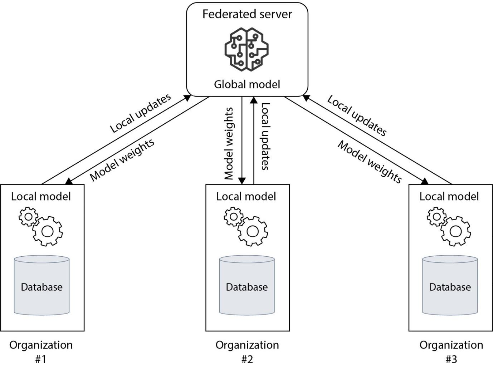{width="6.268055555555556in" height="4.642361111111111in"}
Figure 9.7 -- A generalized view of how FL collects IfD
-
As shown in Figure 9.7 here, all the data remains isolated within each organization and is not transferred to the federated server.
-
Let's now move forward and discuss an FL application with EHRs.
EHRs
- An EHR is a collection of health information that is systematically and digitally stored. These records are designed to be shared with healthcare providers (HCPs) when appropriate. According to HealthIT.gov statistics, as of 2017, 86% of office-based physicians have adopted EHRs in the United States.
 {width="6.268055555555556in"
height="4.810416666666667in"}
{width="6.268055555555556in"
height="4.810416666666667in"}
Figure 9.8 -- EHRs
- This adoption of EHRs has laid the groundwork for beneficial collaboration between healthcare organizations. As we've discussed throughout the book, the ability to access more real-world data allows AI models trained on this data to be much more robust and effective.
-
These include privacy concerns and regulations as well as data standardization.
-
One of the major problems is the storage of this data in Central Data Repositories (CDRs), as shown in Figure 9.9, where various forms of local data are stored to be trained to create an ML model.
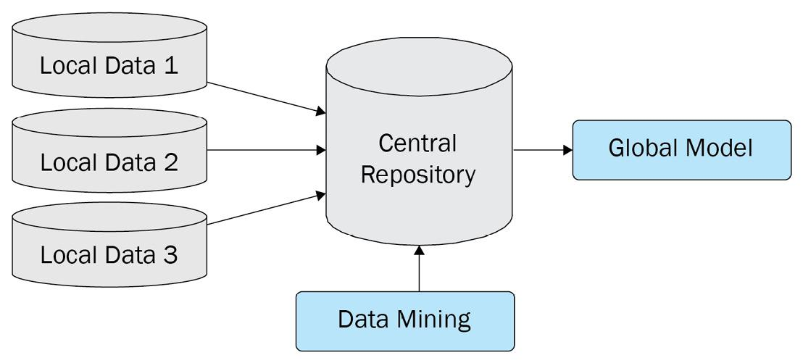{width="6.268055555555556in" height="2.834722222222222in"}
Figure 9.9 -- A centralized data mining method
- This CDR approach is not ideal because of the data isolation problem, which is discussed in the following section.
The data isolation problem
- The use of CDRs for data storage brings many problems. Some examples include things such as data leakage, hefty regulations, and a high cost to set up and maintain.
Representation learning in EHRs
- Researchers have applied FL to representation learning in EHRs as mentioned in the Further reading list such as Two-stage federated phenotyping and patient representation learning.
Applying FL to the financial sector
-
In the US alone, financial services firms spend billions of dollars every year on compliance to combat laundering, yet the current system is so ineffective that less than 1% of money laundering activities are thwarted. In fact, it's estimated that firms spend roughly 100 times more money than they are able to recover from this criminal activity.
-
Only a small percentage of transactions are caught by anti-money laundering (AML) systems, and an even smaller percentage of those alerts are eventually reported in suspicious activity reports (SARs), as required by the Bank Secrecy Act (BSA) of 1970.
Anti-Money Laundering (AML)
- The current AML system needs major improvements, with several challenges that need to be overcome. Many privacy regulations are in place to protect personal financial data. These regulations vary from institution to institution and region to region.
- This would allow only the IfD to be shared and benefit each collaborator that could utilize the intelligence gathered. As we've discussed, FL has this capability.
- Another approach is to share some kind of identifier as necessary. However, again due to privacy laws and regulations, this is not possible and could only be used as part of an investigation process.
Proposed solutions to the existing AML approach
- The development of FL approaches across AML disciplines includes the essential topic of customer onboarding and it may help to use non-traditional information to verify the identities of potential customers.
-
Enhance the ability of firms to identify accurately real risks and reduce unfounded risk reporting
-
Improve the risk-reward calculi of firms when making decisions about whether to serve specific markets
- The second key factor is the regulatory risks and reputational impact for financial firms connected to illicit financial activities
{width="6.268055555555556in" height="4.373611111111111in"}
Figure 9.10 -- Institutional reporting of suspected illicit activity
- Institutions won't necessarily know about patterns their competitors are picking up or what the government knows about which transactions flagged are suspicious or genuine. Firms get little timely feedback on the accuracy of the reports they submit. The result is that firms lack the most vital information for improving their risk detection capabilities: timely information about confirmed problems.
-
Powerful computers combined with smart algorithms could be deployed to evaluate data at different institutions.
-
The ML model that has learned the risk patterns would then move between the participating firms to pick up the patterns and learn from the risk at each institution. All of this could be done without sharing sensitive or protected data.
-
This is depicted in Figure 9.11:
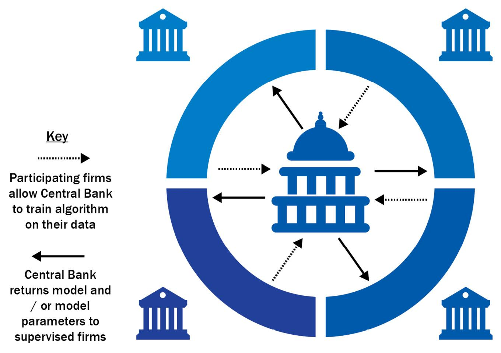{width="6.268055555555556in" height="4.429861111111111in"}
Figure 9.11 -- The data and intelligence flow within a banking ecosystem
-
In the FL approach, the bank creates a classification algorithm that trains on each participating firm's data.
-
The bank develops a key model and model parameters that reflect insights from all participating firms and the data in the government's possession.
-
The bank distributes the key model and model parameters to the participating firms while the data stays in each institution. These distributed models adopt the risk patterns in those firms by learning from their local data and then sending them back to the bank.
Demo of FL in the AML space
-
The researchers at TieSet, Inc. have conducted an experiment of applying FL to the AML space over STADLE, using some synthetic transaction data generated by the PaySim mobile money simulator ([https://www.kaggle.com/ealaxi/paysim1]{.underline}).
-
They have used supervised learning with logistic regression where model features include time, amount, and the new and old balance of the original account and the destination account.
-
The dataset has 636,2620 transactions (8,213 fraud transactions and 635,4407 valid transactions), which are split into 10 separate local agents.
-
Figure 9.12 is the outcome of applying FL to AML where the precision score and F1 score are plotted at each round of training. In the figure, the thicker line is the performance of the aggregated model, and the thin lines are the results of individual agents training separately only using local data:
 {width="6.268055555555556in"
height="3.0034722222222223in"}
{width="6.268055555555556in"
height="3.0034722222222223in"}
Figure 9.12 -- Outcome of applying FL to AML (thicker line: aggregated model, thin lines: individual agent training separately)
-
As in Figure 9.12, the aggregated model performs in a quite stable manner, constantly achieving more than 90% in terms of precision and F1 score. FL could reduce the fraud transactions down from the total fraud transactions of $1,241,770,000 to $65,780,000, meaning only 5.3% of fraud transactions are missing.
-
Let's conclude this section by looking at a list of benefits that FL provides for risk detection.
Benefits of FL for risk detection systems
- There are several benefits in financial sectors for applying FL to risk detection systems as follows:
-
Improved accuracy of illicit activity detection
-
Provides a way for organizations to collaborate
-
Firms can enter new markets
-
The solutions and advantages that FL brings to the finance industry are numerous. Additional advantages include better operational efficiency and better allocation of human capital.
-
There is no limit to the application of FL, especially in the financial space, due to the ability to extract intelligence from client data.
-
We'll now be switching gears a bit as we move on to discussing the use of FL in several emerging technologies in the following section.
FL meets edge computing
-
The section in this section is a mixture of different areas, some of which are emergent technologies.
-
These areas are all very interconnected, as we will cover. Many of these technologies depend on one another to overcome their own challenges and limitations.
-
Combining these technologies alongside FL is an especially potent combination of technology that is sure to be key to advancements and innovation in the coming years.
-
We will see an exponential increase in both the amount of data and the speed at which it is transmitted.
-
We will continue to see more privacy regulations put in place to protect private user data and an explosion in the automation and analytics areas.
Edge computing with IoT over 5G
-
The foundation for realizing the full potential of smart devices is only possible if these devices are able to connect with a much-improved network, such as 5G.
-
In fact, by the end of 2023, it is expected that there will be 1.3 billion subscribers to 5G services worldwide. Alongside edge computing, 5G networks are essential for IoT connectivity. Combining these technologies will help pave the way for smart devices.
-
Figure 9.13 depicts a variety of things, with edge computing capability connected to the cloud and data centers within an IoT framework:
{width="6.268055555555556in" height="4.565277777777778in"}
Figure 9.13 -- Edge computing and the Internet
-
Many of these IoT devices, however, lack adequate security capabilities. In addition to laws and regulations such as the General Data Protection Regulation (GDPR), we can also expect additional policies to be implemented to protect user data. Essentially the need for a solution that extracts IfD will continue to build as more time passes.
-
Let's take a look at an example of FL applied to edge computing.
Edge FL example -- object detection
- Edge computing is an architecture that uses distributed computing to bring computation and data storage as close to the sources of data as possible. Ideally, this should reduce latency and save bandwidth. Here's an example of how FL can be utilized with different types of edge devices.
Technical settings
-
In this example, three devices were used to demonstrate object detection with FL using edge devices.
-
One was an EIS200 edge microserver that ran on Nvidia's Jetson with an Ubuntu OS.
-
The second device was a Raspberry Pi, using Raspberry Pi OS, and the third device was simply a regular PC, whose OS was Ubuntu as well. These machines individually trained an object detection model with unique datasets.
How to do it
-
The EIS200 trained on pictures of fish, meat, and tomatoes with the labels fish, meat, and vegetable. The Raspberry Pi trained on pictures of fish, meat, and eggplants. Evidently, here, tomatoes were replaced with eggplants.
-
The labels, however, remained the same -- fish, meat, and vegetable. Likewise, the regular PC trained on pictures of fish, meat, and leeks, still with the labels fish, meat, and vegetable.
-
As you would expect, each environment had biased data containing different vegetables -- as in, tomatoes, eggplants, and leeks -- with an identical label, vegetable, for all of them.
How it works
-
First, the model was trained with pictures of tomatoes by EIS200. As you would expect, only tomatoes were correctly labeled as vegetables, whereas eggplants and leeks were mislabeled.
-
In the same manner, the Raspberry Pi's model trained with pictures of eggplants only identified eggplants correctly. One of the two leeks was labeled as a vegetable as well, but the other one was identified as fish. As expected, the regular PC's model only identified leeks as vegetables.
-
None of the three agents could label all three vegetables correctly, as we would have anticipated. Next, they were connected to an FL platform called STADLE, developed by TieSet, Inc:
 {width="6.268055555555556in"
height="3.2736111111111112in"}
{width="6.268055555555556in"
height="3.2736111111111112in"}
Figure 9.14 -- Demo of detecting tomatoes, eggplants, and leeks using FL where the distribution of the datasets is different on each machine
-
The STADLE aggregator was run as an instance in AWS. Here, again, each environment had a uniquely biased dataset containing only one type of vegetable.
-
Connected with the STADLE platform, each agent trained with local data. After several training epochs, the weights of the models were sent from the agents to the aggregator.
-
Those weights were then aggregated and sent back to the agents to continue training. The repetition of this aggregation cycle generated unbiased weights.
Examining the results
- The FL model was able to detect and label all three types of vegetables correctly as in Figure 9.15. This is a straightforward example of the power of FL in terms of bias elimination:
 {width="6.268055555555556in"
height="3.8965277777777776in"}
{width="6.268055555555556in"
height="3.8965277777777776in"}
Figure 9.15 -- Results of the demo using three edge devices
-
As mentioned previously, all of the model training took place at the local storage of the edge device itself.
-
The model trained on the local data and then only sent the parameter weights to the federated server for aggregation.
-
The federated server averaged the model. If you recall from earlier sections, this is called FedAvg.
-
The federated server then sent back the improved and updated model to the edge device. So, again, only IfD is collected, not the data itself.
-
Now, let's look at another edge example in the automotive sector in the following section.
Making autonomous driving happen with FL
-
Edge computing with ML gains significant interest in AI industries at scale, especially in the automotive field. Use cases such as autonomous driving require low latency and real-time responses to operate correctly. Therefore, FL becomes one of the best solutions for the automotive field in terms of distributed data processing and training.
-
Offloading computation and storage to edge IoT devices makes the cloud systems for managing autonomous driving applications much smaller and cheaper. That's the most powerful benefit of moving on to the FL paradigm from central cloud-based ML.
-
Modern cars already have edge devices with complex computing capabilities. Advanced Driver Assistance Systems (ADASs) are the essential functions for autonomous cars where calculations happen onboard. They also require significant computation power.
-
The model is trained and prepared using regular, costly training systems within on-premises servers or in the cloud even if the prediction happens in the autonomous vehicle.
-
The training process will become more computationally expensive and slower if the data becomes bigger and will require significant storage as well.
-
FL needs to be used to avoid those issues because updated ML models are passed between the vehicles and the server where the car stores the user driving patterns and streaming images from the onboard camera. FL, again, can work in accordance with user consent and adherence to privacy and regional regulations.
-
Figure 9.16 is about decentralized FL with multiple aggregators to improve ADASs for safe driving, conducted as a real use case by TieSet, Inc. with its technological partner:
 {width="6.268055555555556in"
height="4.0777777777777775in"}
{width="6.268055555555556in"
height="4.0777777777777775in"}
Figure 9.16 -- Decentralized FL with multiple aggregators to improve ADASs for safe driving
-
The ADAS integrated into the STADLE of TieSet, Inc., tailored to provide comfort and personal safety measures, especially to senior citizens, delivered optimized steering controlling assistance for car products.
-
Via advanced computer vision and Reinforcement Learning (RL) technologies, they achieved a design that provides prompt danger situation awareness and intelligently learns about the best-personalized driving strategies.
-
While personalization is a principal focus of the design, substantial privacy issues come with personal data usage. The FL framework enabled by the STADLE platform provided a realistic solution to overcome this barrier.
-
The architecture, presenting a collaborative form of ML training distributed among edge users via AI intelligence exchanges, avoids data transferal and ensures data privacy.
-
Furthermore, the aggregated models can cope with various risky and unpredictable situations beyond the personal experience of drivers.
-
During the proof of concept using real cars, they successfully demonstrated that the designed RL model could efficiently generate the desirable steering strategy customized for the drivers using STADLE's aggregation framework.
-
In the following section, we will talk about how FL could be applied to the robotics domain.
Applying FL to robotics
-
In robotics systems and applications, ML has already become an integral and essential part of completing necessary tasks. Computer vision has evolved to make robotics systems perform very well for many tasks, such as image segmentation and object detection and classification as well as NLP and signal processing tasks.
-
ML can handle many robotics tasks, including perception, path planning, sensor fusion, and grasping detected objects in manufacturing settings.
-
However, ML in robotics also has many challenges. The first is the training time. Even when the amount of data is enough to train the ML models to solve the aforementioned problems, it takes weeks or months to train an authentic robotics system.
-
Equally, if the data is not sufficient, it can restrict the ML model performance significantly. Often, data privacy and accessibility become an issue for collecting enough data to train the ML models for the robots.
-
That is why the FL framework is considered an essential solution to the domain of robotics.
-
Researchers at TieSet, Inc. developed a system and methods that allow robotic manipulators and tools to share their manipulation skills (including reaching, pick-and-place, holding, and grasping) for objects of various types and shapes with other robots, as well as use the skills of other robots to improve and expand their own.
-
This system covers the methods to create a general manipulation model for robots that continuously improves by crowdsourcing skills from various robotic agents while keeping the data private.
-
They propose a new architecture where multiple AI-powered robotic agents collaboratively train a global manipulation model by submitting their models to an aggregator. This communication enables each agent to utilize the training results of the agents by receiving an optimally updated global model.
-
Figure 9.17 is the architecture showing how the federated crowdsourced global manipulation framework for robotics works:
{width="6.268055555555556in" height="5.684027777777778in"}
Figure 9.17 -- Architecture of the federated crowdsourced global manipulation framework for robotics
-
Based on the architecture of the preceding figure, in the simulation settings, they prepare five robotic arms for the individual tasks of grabbing boxes, balls, ducks, and teddies.
-
Using the STADLE platform by TieSet, Inc., which can conduct asynchronous FL, the ML models from those arms are aggregated continuously. In the end, the federated robotics ML model can grab all these objects, whether boxes, balls, ducks, or teddies, with a higher performance (an 80% success rate) in grabbing those objects, as seen in Figure 9.18:
 {width="6.268055555555556in"
height="3.0875in"}
{width="6.268055555555556in"
height="3.0875in"}
Figure 9.18 -- Arm robots can cross-train with different tasks for accuracy and efficiency
-
The FL based on STADLE could significantly reduce the time taken to train robots and ML for production lines using computer vision. Federated performance is much better than training individual robots and the learning time is much faster than when training individual robots.
-
In the following section, we will talk about AI at scale, where learning should constantly happen even with numerous devices with connected environments and the IoT should evolve into the Internet of Intelligence.
Moving toward the Internet of Intelligence
-
In this section, we will talk about why FL is quite important in the context of the latest development of scalable technologies, such as the IoT and 5G.
-
As in the previous section, the areas in which AI needs to keep learning at scale include autonomous driving, retail systems, energy management, robotics, and manufacturing, all of which generate a huge amount of data on the edge side, and most of the data needs to be fully learned to generate performant ML models.
-
Following this trend, let us look into the world of the Internet of Intelligence, in which learning can happen on the edge side to cope with dynamic environments and numerous devices connected to the Internet.
Introducing the IoFT
-
The IoT involves intelligent and connected systems. They are intelligent because the information is shared and intelligence is extracted and used for some purpose -- for example, prediction or control of a device. They are often connected to the cloud and are able to collect data from many endpoints.
-
Figure 9.19 shows the current IoT system with more and more data over time:
 {width="6.268055555555556in"
height="3.9027777777777777in"}
{width="6.268055555555556in"
height="3.9027777777777777in"}
Figure 9.19 -- A current IoT system
-
As shown in Figure 9.19, in the current IoT flow, large amounts of data must be uploaded and stored in the cloud.
-
The models train for specific purposes, such as predictive maintenance and text prediction. Finally, the trained models are sent back to the edge devices.
-
As you can see, there are several issues with the current approach:
-
Latency is affected due to the amount of data
-
Privacy issues due to the movement of data
-
The Internet of Federated Things (IoFT) is an idea originally presented by researchers at the University of Michigan, whose paper The Internet of Federated Things (IoFT) is listed in the Further reading section of This section. The IoFT is an extended framework combining IoT with the concept of FL.
-
As the computational power on the edge side has improved significantly, AI chips have been penetrating the market rapidly. Even smartphones have a really strong computing capability these days and small but powerful computers are often attached to most edge devices.
-
Therefore, the ML model training process is brought down to the edge due to the increased computational capability of edge devices, and the IoT's functionality of sending data to the server can be used to transmit ML models to the cloud. This is also a very effective approach to protecting private data on edge devices, such as mobile phones.
-
Let's take a look at an example of the IoFT shown in Figure 9.20.
 {width="6.268055555555556in"
height="5.33125in"}
{width="6.268055555555556in"
height="5.33125in"}
Figure 9.20 -- An example of the IoFT
- Potential applications of the IoFT include distributed manufacturing, traffic intersection control, and energy control, to name a few.
Understanding the role of FL in Web 3.0
-
FL can be integrated into Web 3.0 technologies to accelerate the adoption of the Internet of Intelligence.
-
The intelligence represented by ML models could be the property of particular individuals or industries. At the same time, it could be considered a public asset if it is something that could contribute to the entire learning process of that ML model for people worldwide.
-
Whether private intellectual property or public assets, by utilizing Web 3.0 technology, intelligence can be managed and evolved in a decentralized manner.
-
Therefore, more and more people will receive the benefits of intelligence that people have collaboratively trained, which leads to the true innovation of our entire society in various domains and with various applications.
Applying FL to distributed learning for big data
-
In this section, we will discuss how FL can be applied to distributed learning in the context of big data.
-
FL for big data may not be related to privacy-related issues so much because the data needed for intelligence purposes is already possessed. Therefore, it may be more applicable to efficient learning for big data and improving training time significantly, as well as reducing the costs of using huge servers, computation, and storage.
-
There are several ways to conduct distributed learning on big data, such as building a specific end-to-end ML stack applied to different types of servers, such as parameter servers, or utilizing certain ML schemes on top of big data platforms such as Hadoop and Spark.
-
There are also some other platforms, such as GraphLab and Pregel. You can use any libraries, and methods such as stochastic proximal descent and coordinate descent with low-level utilities for ML.
-
These frameworks can support the parallel training of ML models computationally, but will not be able to assign the data source to different machines to train them locally in a distributed way, especially when the training environments are dispersed over the Internet.
-
With FL, you can simply aggregate what different distributed machines learn just by synchronizing the federation of the models, but you do need to develop a well-designed platform to coordinate the continuous operation of distributed learning, with proper model repository and versioning approaches as well.
-
An example of conducting distributed learning on big data is depicted in Figure 9.21.
{width="6.268055555555556in" height="3.6145833333333335in"}
Figure 9.21 -- Distributed learning integration into big data
-
In the example in Figure 9.21, the data source, which is typically very large, is sharded into multiple data sources to be dispersed even into different machines or instances that are available for training.
-
Within an FL framework, trained models from distributed environments are all aggregated. The trained and aggregated model then goes to the processes of ML Operations (ML Ops) for performance validation and continuous monitoring with Model Operations (Model Ops).
-
Another layer on top of the preceding scenario can be to combine the insights from the other data sources. In this case, the FL can elegantly combine the insights from the other data sources and nicely coordinate the integration of the other forms of intelligence directly created in the distributed environments.
-
This way, you can also create the hybrid model of centralized ML and distributed ML as well.
Summary
-
Here, we discussed many of the challenges facing different industries in terms of AI advancements. The majority of the challenges are related in some way to data accessibility. Issues such as data privacy regulations, lack of real data, and data transmission costs are all unique and challenging problems that we expect to see FL continue to help solve.
-
Here, you learned about the use cases of the areas in which the FL is playing a more and more important role, such as healthcare, financial, edge, and IoT domains. The adherence to privacy that FL offers is particularly important for the healthcare and financial sectors, while FL can add significant value in terms of scalability and learning efficiency to lots of edge AI and IoT scenarios. You also learned how to apply FL to distributed learning for big data to reduce training time and costs.
-
In the next and final section, we will wrap up this work by discussing the very exciting future trends and developments in which FL is expected to play a key role in the coming decade.
Future Trends and Developments
-
Intelligence will drive the next generation of technologies, not big data. Big data systems have some issues, as discussed in section 1, Challenges in Big Data and Traditional AI, and the world is gradually transitioning from the data-centric era to the intelligence-centric generation. Federated learning (FL) will play a core role in wisdom-driven technologies. Thus, the time is now to welcome the world of collective intelligence.
-
Here, we will talk about the direction of future AI technologies that are driven by the paradigm shift happening with FL. For many AI fields, such as privacy-sensitive areas and fields requiring scalability in machine learning (ML), the benefits and potential of FL are already significant, mainly because of the privacy-preserving and distributed learning aspects that FL naturally supports with its design. You will then learn about the different types of FL as well as the latest development efforts in that area, as seen in the split and swarm learning techniques, which can be considered as evolutional frameworks enhancing FL.
-
In addition, FL creates a new concept of an Internet of Intelligence, where people and computers exchange their wisdom instead of just data themselves. The Internet of Intelligence for everyone is further accelerated by blockchain technologies as well. This Internet of Intelligence can then form a newly defined concept of collective intelligence that drives another innovation, from data-centric approaches to intelligence-centric or model-centric approaches.
-
Finally, we will share a collective vision in which FL plays a key role in collaboratively creating intelligence learned by many people and machines around the world.
-
Here, we will cover the following topics:
-
Ongoing research and developments in FL
-
Journeying on to collective intelligence
Looking at future AI trends
- The majority of industry leaders are now aware of the limitations of centralized ML as discussed in the next section.
The limitation of centralized ML
-
When looking at the future of AI, it is important to first know the fact that many companies today are struggling to extract intelligence and obtain insight from the data they possess.
-
More than half of the data that organizations and companies have collected is usually not used. Traditional approaches to machine learning and data science need data to be organized and consolidated into data lakes and stores in advance of analyzing and training ML models.
-
You need to duplicate and move the data, which will result in delays in realizing and delivering the value of the intelligence extracted from the data, together with certain operational risks and complexities.
-
In addition, most of the data generated by enterprise companies will be created and processed outside a traditional centralized data center or cloud. It is becoming increasingly unrealistic and inefficient to process data for generating insight in a centralized manner.
-
Furthermore, based on some market reports out there, most of the largest global organizations and companies will explore FL at least once to create much more accurate, secure, and sustainable models environmentally.
-
That being said, quite a few industries and markets are gradually becoming aware of the importance of a distributed and FL paradigm, because they are facing the unavoidable issues and limitations of the current centralized AI training with big data, as discussed in section 1, Challenges in Big Data and Traditional AI.
-
FL brings the model to the data where the training process resides instead of bringing the data to the model. Thus, FL is considered to be the future of data science and ML.
-
In the next section, let's summarize the points of why FL is beneficial to those companies, especially enterprises that have been facing the aforementioned issues.
Revisiting the benefits of FL
- In this section, we will summarize the benefits of FL that have been introduced throughout this book.
Increased model accuracy and generalizability
- FL realizes collaborative and distributed learning that can improve the performance of ML models, by training on dispersed datasets locally to continuously incorporate the learning into a global model. This way, more accurate and generalized ML models can be produced.
Further privacy and security
- FL provides privacy and security advantages because it won't require private and raw data by its design and security mechanisms, as we discussed previously in section 2, What Is Federated Learning? and section 9, Case Studies with Key Use Cases of Federated Learning Applications. Thus, FL reduces the potential risk of data misuse, leakage, or exposure to sensitive information. FL is also compliant with many privacy regulations, such as General Data Protection Regulation (GDPR), California Consumer Privacy Act (CCPA), and Health Insurance Portability and Accountability Act (HIPAA).
Improved speed and efficiency
-
FL is also known to realize high computation efficiency, which can accelerate the deployment and testing of ML models as well as decrease communication and computational latency.
-
Due to the decentralized nature of FL, the delay for model delivery and update is minimized, which leads to a prediction by the global model in near real time. Real-time delivery and updates of intelligence are really valuable for time-sensitive ML applications.
-
FL also helps reduce bandwidth and energy consumption by overcoming system heterogeneity and unbalanced data distribution, which leads to minimizing data storage and transfer costs that can also significantly contribute to reducing the environmental impact.
Toward distributed learning for further privacy and training efficiency
-
Currently, AI is trained on huge computational servers, usually happening on big machines in big data companies.
-
As seen in the era of the supercomputer, which can process a huge amount of data and tasks within one machine or one cluster of machines, the evolutionary process in technology starts from a central location and gradually transitions to distributed environments.
-
The same thing is exactly about to happen in AI. Now, the data lake concept is popular to organize and train ML models in one place, but ML already requires distributed learning frameworks.
-
FL is a great way to distribute a training process over multiple nodes. As shown in many research reports, most data is not fully used to extract insights into ML models.
-
There are some companies and projects that are trying to use FL as a powerful distributed learning technique, such as the platforms provided by Devron ([devron.ai]{.underline}), FedML ([fedml.ai]{.underline}), and STADLE ([stadle.ai]{.underline}).
-
These platforms are already resolving the issues discussed in The limitation of centralized AI section and have shown a drastic improvement in the ML process in various use cases, as stated in the Revisiting the benefits of FL section.
-
Based on the AI trends that we have discussed, let's look into the ongoing research and developments related to FL that cutting-edge companies are conducting now in the next section.
Ongoing research and developments in FL
- We now talk about the ongoing research and development projects that are being taken place both in academia and industries around the world. Let's start with the different types and approaches of FL, and move on to ongoing efforts to further enhance the FL framework.
Exploring various FL types and approaches
- In this work, we have visited the most basic algorithms and design concepts of an FL system. In the real world, we need to dig a bit deeper into what types of FL frameworks are available to extract the best performance out of those algorithms. Depending on the data scenario and use cases, we have several approaches in FL, as follows:
-
Centralized FL and decentralized FL
-
Cross-silo FL and cross-device FL
Horizontal FL and vertical FL
-
Horizontal FL uses datasets with the same feature space or schema across all distributed devices ([https://www.arxiv-vanity.com/papers/1902.04885/]{.underline}). This actually means that datasets share the same columns with different rows. Most existing FL projects are based on horizontal FL. Datasets and training processes with horizontal FL are straightforward because the datasets are formed identically, with different data distributions and inputs to be learned. Horizontal FL is also called homogeneous or sample-based FL.
-
Vertical FL is applied to the cases where different datasets share the same sample ID space but differ in feature space. You can check out this paper (https://arxiv.org/pdf/2202.04309) for further information about vertical FL. Relating these different databases through FL can be challenging, especially if the unique ID for the data is different. The key idea of vertical FL is to improve an ML model by using distributed datasets with a diverse set of attributes. Therefore, vertical FL can handle the partitioned data vertically with different attributes in the same sample space. Vertical FL is also called heterogeneous or feature-based FL.
Centralized FL and decentralized FL
- Centralized FL is currently the most common approach and most of the platforms employ this framework. It uses a centralized server to collect and aggregate the different ML models, with distributed training across all local data sources. In this book, we focused on a centralized FL approach, with a scenario where local training agents communicate the learning results to a centralized FL server to create a global model.
Understanding enhanced distributed learning frameworks with FL
- There are ongoing efforts to further enhance FL or distributed learning frameworks.
Split learning
-
Split learning, developed in the MIT Media Lab, is an emerging distributed learning technique that enables partitioning ML models into multiple sections, trains those partitioned ML models at distributed clients, and aggregates them at the end. Split learning does not have to share the data either, so it is considered a privacy-preserving AI as well.
-
The overall framework is similar to the FL. However, there is a difference in that the neural network is partitioned into multiple sections that will be trained on distributed clients.
-
The trained weights of the section of the neural network are then transferred to the server and clients.
-
The weights of those multiple sections are continuously trained in the next training sessions.
-
Therefore, no raw and private data is shared among the distributed clients, and only the weights of each section are sent to the next client.
-
Especially, SplitFed ([https://arxiv.org/abs/2004.12088]{.underline}) is another advanced technique that combines split learning and FL. SplitFed splits the deep neural network architecture between the FL clients and servers to realize a higher level of privacy than FL. It offers better efficiency than split learning based on the parallel learning paradigm of FL.
Swarm learning
-
Swarm learning is a decentralized ML solution built on blockchain technology, particularly designed to enable enterprise industries to take advantage of the power of distributed data, which results in protecting data privacy and security.
-
This can be achieved by individual nodes sharing parameters of ML models derived from the local data.
-
Parameters shared from the distributed clients are merged into a global model. The difference from the normal FL is that the merge process is not performed by a central server.
-
The distributed nodes and clients choose a temporary leader to perform the merge. That is why swarm learning is truly decentralized, also providing greater fault tolerance and resiliency.
-
The distributed agents have the collective intelligence of a network without sharing local data into one node.
-
Swarm learning builds on top of blockchain. Blockchain provides the decentralized control, scalability, and fault-tolerance aspects to work beyond the restrictions of a single enterprise.
-
At the same time, blockchain introduces a tamperproof cryptocurrency framework, and the participants can use the framework to monetize their contributions.
BAFFLE
-
In addition, there is a framework called BAFFLE that stands for Blockchain Based Aggregator Free Federated Learning (https://arxiv.org/abs/1909.07452). BAFFLE is also an aggregator-free, blockchain-driven FL framework that is inherently decentralized.
-
BAFFLE utilizes Smart Contracts (SCs) from the blockchain framework to coordinate round management, as well as model aggregation and updating tasks of FL. Using BAFFLE boosts computational performance.
-
The global model is also decomposed into many sets of chunks, directly handled by the SC.
-
Now that we have learned about the latest research and developments in the FL field, in the next section, let's look at a more visionary aspect of the AI, science, and technologies of collective intelligence.
Journeying on to collective intelligence
-
Big data has been a game changer for the AI movement. While the amount of data generated at the edge and by people will increase exponentially, intelligence derived from that data benefits society. Therefore, the big data era will gradually pass the baton to the collective intelligence era, empowered by FL, in which people will collaboratively create a wisdom-driven world.
-
Let's start by defining an intelligence-centric era where the concept of collective intelligence is realized based on FL.
Intelligence-centric era with collective intelligence
-
Collective Intelligence (CI) is the concept of a large group of single entities acting together in ways that seem intelligent. CI is an emergent phenomenon where groups of people process information to achieve insights that are not understandable by just individual members alone.
-
Recently, Thomas Malone, the head of the MIT Center for Collective Intelligence, and the person who initially coined the phrase collective intelligence, broadened the definition of CI: "CI is something that can emerge from a group that includes people and computers. CI is a very general property, and superminds can arise in many kinds of systems, although the systems I've mostly talked about are those that involve people and computers" (Reference: [https://www2.deloitte.com/xe/en/insights/focus/technology-and-the-future-of-work/human-and-machine-collaboration.html]{.underline}).
-
We are now welcoming the new perspective of CI in technologies empowered by FL.
-
Data, in the current world of technology, is a great source to extract intelligence. Dispersed datasets around the world can be converted into a collection of intelligence represented by AI technologies. The current trend, as mentioned, is big data, so big data companies are leading not only the technology industries but also the entire economy of the world as well. The future is moving in a CI direction.
-
The vision of CI is even clearer with the emergence of sophisticated ML algorithms, including deep learning, as the intelligence represented by ML models can extract intelligence from people, computers, or any devices that generate meaningful data.
-
Why does FL promote the idea of CI? The nature of FL is to collect a set of distributed intelligence to be enhanced by an aggregating mechanism as discussed in this book. This itself enables a data-less platform that does not require collecting data from people or devices directly.
-
With the big data issues discussed throughout the book, we have steered clear of focusing on data-centric platforms. However, it is also true that learning big data is very much critical and inevitable to really create systems and applications that are truly valuable and deliver real value in many domains of the world. That is why the big data field is still the most prosperous industry, even if it is facing significant challenges represented by privacy regulations, security, data silos, and so on.
-
Now is the time to further develop and disseminate the technologies such as FL that can accelerate the era of CI by fundamentally resolving the issues of big data. This way, we can realize a new era of technologies, truly driven by CI that has been backed up by an authentic mathematical basis.
-
As mentioned, data-centric platforms are the current trend. So many data and auto ML vendors can support and automate the processes of creating ML-based intelligence by organizing data and learning procedures to do so. An intelligence-centric or model-centric platform should be the next wave of technology in which people can share and enhance intelligence that they generate on their own.
-
With FL, we can even realize crowd-sourced learning, where people can collaboratively and continuously enhance the quality and performance of ML models.
-
Thus, FL is a critical and essential part of the intelligence-centric platform to truly achieve a wisdom-driven world.
Internet of Intelligence
-
The IoT evolved into the Internet of Everything. However, what is the essential information that people want? Is it just big data? Or intelligence derived from data? With 5G technologies, a lot of data can be transferred over the Internet at a much higher speed, partially resolving the latency issues in many AI applications. FL can exchange less information than raw data but still needs to transfer ML models over the Internet.
-
While lots of research projects are minimizing communications latency in FL, in the future, information related to intelligence will be another entity often exchanged over the web. There will be a model repository such as Model Zoo everywhere, and crowdsourced learning empowered by FL will be more common to create better intelligence over the Internet with people worldwide collaboratively.
-
This paradigm shift is not just in the AI field itself but also in the wide range of information technologies. As we'll discuss in the next sections, this Internet of Intelligence movement will be the basis of crowdsourced learning and CI, and will help make intelligence available to as many people as possible in the coming years.
Crowdsourced learning with FL
-
The collection of intelligence performed by FL naturally makes it a strong fit for moving toward CI. The same thing is applied to a scenario where people can collectively contribute a training process to global ML models.
-
High-performing ML models in areas such as computer vision and natural language processing have been trained by certain big data companies, often spending a huge amount of money, including hundreds of millions of dollars.
-
Is there any way to collectively train an ML model that will probably be beneficial for a wide range of people in general? With the advanced framework of FL, that is possible.
-
FL provides an authentic way to manage the aggregation of multiple trained models from various distributed agents. In this case, the distributed agents themselves may be people worldwide, where each individual user and trainer of the ML model has their own unique datasets that are not available to anybody else because of data privacy, silos, and so on.
-
This way of utilizing CI is often called crowdsourced learning. However, traditional crowdsourced learning is conducted in a much more limited way, just based on facilitating and recruiting data annotators at a large scale.
-
With this new paradigm with FL, users on the CI platform can access and download ML models that they are interested in and retrain them if necessary to absorb learning in their own environments. Then, with the framework to share the trained ML models by those users, an advanced aggregation framework of FL could pick up the appropriate models to be federated and make the global model perform better, adopting diverse data that can be only accessible to the users.
-
This way, intelligence by ML is becoming more available to many individuals in general, not just to specific companies that have a significant amount of data and budgets to train an authentic ML model. In other words, without an FL framework, collaborative learning is difficult and tricky and almost impossible to even automate. This openness of the ML models will move the entire technological world to the next level, and a lot more applications will become feasible, with truly powerful intelligence that is trained by enthusiasts to make the world better.
Summary
-
In this final section of the book, we discussed fascinating future trends and developments in which FL is expected to play a crucial role in the coming decade. In the future, FL is a must-to-have technology from a nice-to-have framework for most enterprises and application providers, because of the inevitable privacy regulations and technology trends requiring scalability with so many users.
-
As we discussed, future technologies will be empowered by the concept of the Internet of Intelligence, by which people and computers mainly exchange their wisdom altogether to create a more intelligent society and world. Finally, the data-centric technologies will gradually evolve into intelligence-centric technologies because of the current collaborative learning trend with CI, which makes people pay significant attention to FL-related technologies, whose foundations are discussed throughout this book.
-
This book was written at the dawn of a new age in advancements made possible by AI. There are many uncertainties and many more challenges ahead. We have made great strides in utilizing the big data playbook in the last couple of decades, and we have now outgrown those methods and must adopt new ways of doing things, new technologies, and new ideas to forge ahead. As long as we capture the current moment and invest in new technologies such as FL, we will have a bright future ahead of us.